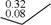
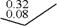
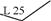
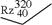
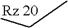
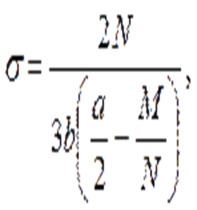

4.20. Щиты перемычки (понтоны) следует опирать на днище. Днище рекомендуется прикреплять к распорно-направляющему каркасу.
Рис. 14. Перемычка из понтонов КС:
1
- понтоны КС; 2 - днище; 3 - тампонажная бетонная подушка;
4 - распорное крепление; 5 - оболочки
Для уменьшения сцепления щитов с тампонажным слоем подводного бетона рекомендуется устраивать обмазочную изоляцию.
Стыки щитов (понтонов) должны герметизироваться резиновыми прокладками.
4.21. При устройстве перемычек из понтонов в конструкции днища, а также ножа, остающегося в грунте, должны быть предусмотрены устройства, позволяющие отсоединять понтоны под водой.
Рис. 15. Стальное ограждение верхней части круглого колодца:
1 - колодец; 2 - обшивка ограждения; 3 - распорные крепления; 4 - резиновый уплотнитель
4.22. Распорные крепления перемычек и ящиков, воспринимающие давление воды, следует, по возможности, одновременно использовать в качестве направляющих устройств для погружения оболочек, а также несущих элементов рабочих подмостей.
4.23. При конструировании съемных распорных креплений необходимо учитывать последовательность их разборки или перестановки по мере бетонирования плиты и тела опоры.
4.24. Для бездонных ящиков и водонепроницаемых перемычек должны быть выполнены следующие расчеты:
прочности под воздействием гидростатического давления воды, давления подводного бетона фундаментной подушки при укладке и собственного веса рассчитываемой конструкции;
остойчивости и плавучести при подаче на плаву к месту опускания и устойчивости против опрокидывания после установки ящика (перемычки) на дно;
прочности при установке ящика (перемычки) краном;
мощности буксиров, лебедок и якорного закрепления при транспортировке и опускании ящика (перемычки) на дно.
Ограждения из стального шпунта
4.25. Ограждения из стального шпунта следует применять при глубине воды более 2 м, а также в случае невозможности устройства деревянного шпунтового ограждения (п. 4.57 Инструкции). Стальной шпунт должен, как правило, извлекаться для повторного использования, за исключением случаев, когда он входит в конструкцию опоры.
Проект шпунтового ограждения должен разрабатываться с учетом минимального расхода шпунта.
(Измененная редакция. Изм. № 1)
4.26. Внутренние размеры в плане (в свету) шпунтового ограждения фундаментов, сооружаемых как с применением тампонажной подушки, так и без нее, имеющих вертикальные сваи или при отсутствии свай, нужно принимать на 30 см больше проектных размеров фундамента. Для фундаментов, сооружаемых насухо, размеры ограждения в плане следует назначать с учетом установки опалубки.
При забивке наклонных свай расположение стального шпунта должно быть назначено с таким расчетом, чтобы острие шпунтин отстояло от свай не менее чем на 1 м при откачке без устройства тампонажной подушки и 0,5 м при устройстве тампонажной подушки.
Верх шпунтового ограждения следует назначать на 0,3 м выше уровня грунтовых вод и выше принятого рабочего уровня воды (льда) в реке согласно требованиям п. 1.10, б.
Отметка грунта возле шпунтового ограждения, принимаемая в расчете, должна назначаться с учетом возможного уровня размыва (для русловых опор в легкоразмываемых грунтах).
(Измененная редакция. Изм. № 1)
4.27. Для ограждения котлованов мостовых опор основным профилем стального шпунта является корытный профиль.
Шпунт плоского профиля ввиду его незначительного момента сопротивления следует применять преимущественно для образования цилиндрических стенок ограждения искусственных островков.
При необходимости применения стального шпунта, изготавливаемого на строительной площадке из профильной стали, в проекте должны быть указаны способ сплачивания профилей и технология сварочных работ. Шпунтины не должны иметь выступающих частей, препятствующих забивке. Марка стали и электродов выбирается в соответствии с указаниями раздела 10.
Нижние концы шпунтин обрезают перпендикулярно оси.
(Измененная редакция. Изм. № 1)
4.28. Шпунтовые ограждения в случаях, определяемых расчетом, должны раскрепляться горизонтальными поясами-обвязками по контуру котлована и системой поперечных, продольных или угловых распорок. Конструкция и сечения обвязок и распорок должны назначаться по расчету.
Расстояния между распорками крепления в плане в продольном и поперечном направлениях должны назначаться с учетом применяемых механизмов и способа разработки котлована.
При сооружении под защитой шпунта плит фундаментов из свай или оболочек распорные конструкции должны проектироваться с учетом использования их одновременно как направляющих каркасов.
4.29. Для упрощения и значительного облегчения распорных креплений в ряде случаев целесообразно ограждения из стального шпунта делать кольцевого очертания в плане с креплением из кольцевых поясов-обвязок без поперечных распорок. Количество поясов и места установки их по высоте котлована определяются расчетом.
Для удобства установки и разборки пояса рекомендуется делать их составными на болтовых стыках. Под обвязки следует устанавливать столики.
В случаях, когда необходимо уменьшить осадку строений (пути), расположенных вблизи шпунтового ограждения, распорки при установке должны быть обжаты (домкратами, клиньями) и закреплены с усилием не меньшим расчетного сжимающего.
4.30. Стыкование шпунтин по их длине допускается с применением накладок со сварными или болтовыми соединениями. При необходимости стыкования стальных шпунтов различных профилей следует применять комбинированную стыковую шпунтовую сваю, сваренную из продольных половин обоих стыкуемых шпунтовых профилей.
4.31. При низком горизонте грунтовых вод следует предусматривать разработку котлованов до отметки, близкой к горизонту грунтовых вод, без крепления, но с устройством бермы, ширина которой должна обеспечивать удобное производство всех работ по забивке шпунта и сооружению фундамента.
При устройстве шпунтового ограждения на местности, покрытой водой, забивку шпунта следует производить после установки обвязки или каркасов, служащих для фиксации положения шпунта в плане и включающих пояса креплений, необходимые по расчету.
Каркасы или обвязки могут устанавливаться на маячные сваи, спланированное основание, подводный ростверк или удерживаться на плаву в процессе забивки на специальных плашкоутах.
В неразмываемых грунтах, удерживающих откос до 1:1,5 под водой, допускается устанавливать каркас и забивать шпунт после подводной разработки грунта котлована на всю глубину (или ее часть).
Общие положения расчета шпунтовых ограждений котлованов
Для шпунтовых ограждений, заглубленных в пески или супеси, кроме указанных расчетов, необходимо проверить глубину забивки шпунта ниже дна котлована или отметки размыва по условию исключения опасности наплыва грунта в котлован при откачке из него воды без устройства тампонажной подушки. Независимо от результатов расчета глубину забивки шпунта ниже дна котлована или отметки размыва следует принимать в случаях текучих и текучепластичных глин, суглинков и супесей, водонасыщенных илов, пылеватых и мелких песков не менее 2 м, а в остальных случаях - не менее 1 м. В ограждениях с тампонажной подушкой глубина забивки должна быть не менее 1 м в любых грунтах кроме скальных.
(Измененная редакция. Изм. № 1)
4.33. Минимальную глубину забивки шпунта ниже дна котлована по условию исключения опасности наплыва грунта при откачке воды следует определять в соответствии с указаниями приложения 19 Инструкции.
(Новая редакция. Изм. № 1)
4.34. Минимальную глубину забивки шпунта (считая от дна котлована или отметки размыва) по условию обеспечения устойчивости стенок против опрокидывания, определяют согласно п. 1.17 настоящих Изменений, исходя из равенства
где Моп - расчетный момент опрокидывающих сил относительно оси возможного поворота (опрокидывания) стенки;
Муд - расчетный момент удерживающих сил относительно той же оси;
m - коэффициент условий работы (см. пп. 4.45 - 4.47 Инструкции);
kн - коэффициент надежности, принимаемый равным 1.
4.35. Расчетные давления воды и грунта (активного и пассивного) получают умножением нормативных давлений, определяемых согласно прилож. 11, на коэффициенты перегрузки, принимаемые по п. 2.24. При этом для активного давления грунта принимают коэффициент перегрузки nа = 1,2, а для пассивного - nп = 0,8.
Не учитываемое в приложении 11 Инструкции влияние фильтрационного потока при откачке воды из котлованов, разрабатываемых в песчаных грунтах, отражено в приложении 19 Изменений.
(Измененная редакция. Изм. № 1)
4.36. При устройстве ограждения в водопроницаемых грунтах с осуществлением подводной водозащитной подушки, в расчете шпунтовой стенки, отражающем стадию ее работы до бетонирования подушки, учитывают гидростатическое давление, соответствующее откачке воды из котлована на глубину, необходимую для постановки яруса креплений, но не менее 1,5 м.
(Измененная редакция. Изм. № 1)
4.37. Ограждение из шпунта, забиваемого в водонепроницаемый грунт (суглинок или глину), расположенный ниже горизонта воды, следует рассчитывать на горизонтальные нагрузки, соответствующие двум схемам:
в первой схеме принимают, что ниже поверхности водонепроницаемого грунта горизонтальное давление на шпунтовую стенку обусловлено только гидростатическим давлением воды, проникающей между стенкой и грунтом на глубину ;
во второй схеме не предусматривают возможности проникания воды между стенкой и водонепроницаемым грунтом и принимают, что этот грунт оказывает горизонтальное давление на стенку, будучи пригруженным сверху гидростатическим давлением, а при наличии над водонепроницаемым грунтом водопроницаемого и весом последнего; вес слоя водопроницаемого грунта, расположенного ниже горизонта воды, определяют с учетом взвешивания в воде.
В обеих схемах выше поверхности водонепроницаемого грунта учитывают горизонтальную нагрузку на стенку от гидростатического давления и, в необходимых случаях, от давления водопроницаемого грунта.
Глубину проникания воды между стенкой и водонепроницаемым грунтом (считая от его поверхности) принимают равной:
а) для ограждений, не имеющих распорных креплений (рис. 16, а),
где h′ - глубина погружения шпунта в водонепроницаемый грунт;
б) для ограждений с одним ярусом креплений (рис. 16, б)
где t - глубина погружения шпунта ниже дна котлована;
в) для ограждения с несколькими ярусами креплений (рис. 16, в) - на 0,5 м ниже уровня грунта в котловане при установке верхнего яруса креплений, расположенного в пределах водонепроницаемого грунта.
Рис. 16. Схемы для определения глубины проникания воды
между шпунтовой стенкой
и водонепроницаемым грунтом:
а
- при ограждениях, не имеющих распорных креплений;
б - при ограждениях с одним ярусом креплений;
в - при ограждениях с несколькими ярусами креплений
4.38. Элементы креплений должны рассчитываться на совместное действие горизонтальной нагрузки, передаваемой шпунтовыми стенками, и вертикальной нагрузки от веса обустройств и конструкций, предусмотренных проектом. Наибольший изгибающий момент в элементе от веса обустройств и конструкций не должен быть меньше наибольшего изгибающего момента от равномерно распределенной нагрузки интенсивностью
где q1 - нагрузка, принимаемая равной 50 кгс/м2 для верхнего яруса креплений и 25 кгс/м2 для остальных ярусов;
F - площадь котлована, приходящаяся на рассчитываемый элемент крепления, м2;
l - длина элемента, м.
(Измененная редакция. Изм. № 1)
4.39. При расчетах шпунтовой стенки на прочность значения расчетных сопротивлений шпунта и креплений должны приниматься согласно разделам 8 и 10 с делением их на коэффициент надежности, принимаемый равным:
1,1 - для шпунтовых ограждений на местности, покрытой водой;
1,0 - во всех остальных случаях.
4.40. Момент сопротивления поперечного сечения погонного метра стенки Wx (см. прилож. 8) из шпунта типа ШК или Ларсен следует принимать со следующими коэффициентами, учитывающими возможность относительных смещений шпунтин в замках:
0,7 - в случае слабых грунтов и отсутствии обвязок, прикрепленных к шпунту;
0,8 - в случае тех же грунтов и наличии обвязок, прикрепленных к шпунту;
1,0 - в остальных случаях.
4.41. При расчете прочности шпунтовых стенок (но не креплений) должны вводиться коэффициенты условий работы, равные:
1,15 - для стенок кольцевых в плане ограждений;
1,10 - для стенок длиной менее 5 м замкнутых в плане ограждений прямоугольной формы с промежуточными ярусами распорных креплений.
Расчеты шпунтовых ограждений, не имеющих распорных креплений
Глубину t0 определяют на основе равенства (4.1), считая ось поворота стенки расположенной на этой глубине и пренебрегая моментом пассивного давления грунта, действующего на стенку со стороны, противоположной котловану (обратного отпора), относительно указанной оси (точки O на рис. 17). В соответствии с этим в равенстве (4.1) принимают Моп равным моменту активного давления грунта и гидростатического давления, действующих выше глубины t0, относительно оси поворота стенок, а Муд - моменту пассивного давления, действующего со стороны котлована (прямого отпора) выше глубины t0, относительно той же оси";
т = 0,95 - коэффициент условий работы.
В общем случае для решения уравнения, выражающего условие (4.1), принимают способ последовательных попыток, т. е. задаются глубиной t0, которую затем уточняют.
Расчетная схема, принимаемая при определении глубины t0, показана на рис. 17; эпюры давлений, показанные на рис. 17, а, относятся к случаю расчета стенки, погружаемой в песок или супесь, а эпюры давлений, показанные на рис. 17, б и в, - к случаю расчета стенки, погружаемой в глину или суглинок (см. п. 4.37) При наличии над глинистым грунтом слоя воды hв активное давление необходимо увеличивать на величину hв λа. Так как глубина t0 не является полной глубиной погружения шпунта ниже дна котлована (см. формулу 4.3), то при учете проникания воды между стенкой и суглинком или глиной рекомендуется принимать глубину hв = 0,8 × (hгр + t0) (см. рис. 17, в).
Рис. 17. Схема, используемая в расчетах шпунтовых
ограждений, не имеющих
распорных креплений, и эпюры давлений:
а
- при расчете стенки, погружаемой в песок или супесь; б и в - при
расчете стенки,
погружаемой в суглинок или глину
Дополнительную глубину Δt определяют по формуле
(4.4)
где Е′п - равнодействующая пассивного давления грунта с внешней стороны котлована (обратного отпора);
р′п - интенсивность этого давления на глубине t0.
Равнодействующую обратного отпора грунта определяют по формуле
(4.5)
где Еп, Еа и Ев - равнодействующие соответственно прямого отпора грунта, активного давления грунта и гидростатического давления, действующих на стенку выше глубины t0.
Интенсивность р′п пассивного давления грунта, действующего на стенку с внешней стороны котлована, определяют, принимая глубину H = hгр + t0 (см. рис. 17).
(Измененная редакция. Изм. № 1)
4.43. Изгибающие моменты, действующие в поперечных сечениях шпунтовой стенки, определяют как для консольного стержня с заделкой на глубине t0 (от дна котлована); за нагрузку принимают гидростатическое давление, активное и пассивное (прямой отпор) давления, действующие на стенку выше этой глубины (см. рис. 17).
4.44. При устройстве ограждения в водопроницаемых грунтах с осуществлением водозащитной подушки расчет шпунтовой стенки, отражающий стадию ее работы до бетонирования подушки, выполняют согласно пп. 4.42 и 4.43, а расчет шпунтовой стенки, отражающий стадию ее работы после бетонирования подушки, выполняют согласно п. 4.45.
4.45. Глубину t0 погружения стенки ниже дна котлована определяют из условия обеспечения ее устойчивости против поворота вокруг оси, расположенной на 0,5 м ниже верха водозащитной подушки (точка О на рис. 18). В соответствии с этим в равенстве (4.1) принимают Моп равным моменту активного давления взвешенного в воде грунта и гидростатического давления, действующих на стенку выше оси ее поворота, относительно этой оси, а Муд - моменту пассивного давления взвешенного в воде грунта, действующего на стенку ниже оси ее поворота, относительно этой оси.
т = 0,95 - коэффициент условий работы.
Рис. 18. Схема, используемая в расчетах шпунтовых
ограждений, не имеющих
распорных креплений, в водопроницаемых грунтах с осуществлением
водозащитной подушки
При определении момента Муд эпюру пассивного давления грунта считают треугольной с нулевой ординатой на уровне оси поворота стенки; наибольшую ее ординату находят, принимая H = hгр + t.
Величина наибольшего изгибающего момента в поперечном сечении стенки может быть принята равной моменту Моп.
(Измененная редакция. Изм. № 1)
Расчет шпунтовых ограждений с одним ярусом распорных креплений
4.46. Минимальную глубину t погружения стенки ниже дна котлована (без водозащитной подушки) определяют из условия обеспечения ее устойчивости против поворота вокруг оси опирания стенки на крепление (точки О на рис. 19, а)*. В соответствии с этим в равенстве (4.1) принимают Моп равным моменту активного давления грунта и гидростатического давления относительно оси поворота стенки, а Муд - моменту пассивного давления грунта относительно этой оси.
* На рис. 19 показаны схемы, относящиеся к случаю расчета стенки, погруженной в песок или супесь.
т - коэффициент условий работы, принимаемый согласно п. 4.47.
Рис. 19. Схемы расчета шпунтовых ограждений с одним ярусом распорных креплений:
а
- для определения минимальной глубины забивки шпунта;
б - для определения изгибающих моментов в его поперечных сечениях
Для замкнутых в плане шпунтовых ограждений глубину забивки t, определенную расчетом на устойчивость, допускается уменьшать на 15 % для кольцевых ограждений с радиусом менее 5 м и на 10 % для прямоугольных с длиной наибольшей стороны менее 5 м.
(Измененная редакция. Изм. № 1)
4.47. Коэффициент m условий работы в расчете устойчивости (см. п. 4.46) принимают:
а) в случае связных грунтов, а также несвязных, но при заглублении острия шпунта в слой глины или суглинка - 0,95;
б) в остальных случаях несвязных грунтов:
- при частичной откачке воды из котлована на глубину (от горизонта воды) не более 0,25h на водотоках и не более 0,25h′в на местности, не покрытой водой, - 0,95;
- при полной откачке воды из котлована - по графику рис. 20 на открытых водотоках и по графику рис. 21 на местности, не покрытой водой.
Рис. 20. Схема и график для определения коэффициента
условий работы
в расчете устойчивости шпунтового ограждения на открытом водотоке
при одном ярусе распорных креплений
Рис. 21. Схема и график для определения коэффициента
условий работы
в расчете устойчивости шпунтового ограждения на местности, не покрытой водой
Здесь, а также на графиках рис. 20 и 21:
h - глубина котлована;
h′в - расстояние от дна котлована до горизонта грунтовых вод;
hгр - расстояние от дна котлована до уровня грунта снаружи котлована;
и
φ - угол внутреннего трения грунта.
При промежуточных значениях h, h′в, μгр и μв величину коэффициента т следует определять линейной интерполяцией.
4.48. Изгибающие моменты, действующие в поперечных сечениях шпунтовой стенки, определяют по схеме балки, свободно лежащей на двух опорах, одну из которых принимают на уровне оси опирания стенок на крепление (точки О на рис. 19), а другую на глубине t/2 от дна котлована, где t - минимальная глубина погружения стенки по условию обеспечения ее устойчивости (см. п. 4.46). При этом активное и пассивное давления грунта, а также гидростатическое давление, действующие на стенку ниже глубины t/2, не учитывают (см. рис. 19, б).
Изгибающий момент в сечении шпунтовой стенки, расположенном в пролете, допускается принимать равным
(4.6)
где Mв - изгибающий момент в поперечном сечении шпунта от гидростатического давления воды, определенный по указанной выше схеме;
Mгр - то же от давления грунта;
0,75 - коэффициент, учитывающий перераспределение давления грунта.
В случаях недостаточной прочности шпунтовой стенки по материалу целесообразно изменить положение распорки по высоте или увеличить глубину погружения шпунта в грунт с тем, чтобы за счет обеспечения заделки нижней части стенки снизить величины изгибающих моментов в ее поперечных сечениях. Расчет стенки с учетом заделки ее нижней части в грунте может быть выполнен графо-аналитическим способом. По схеме, приведенной на рис. 19, б, определяют также давление q стенки на обвязку крепления (как реакцию на верхней опоре). Усилие в распорке допускается принимать равным
где lл и lп - пролеты обвязки слева и справа от рассматриваемой распорки.
4.49. При устройстве ограждения с водозащитной подушкой расчет шпунтовой стенки, отражающий стадию ее работы до бетонирования подушки, выполняют согласно пп. 4.46 - 4.48. Для стадии работы стенки после бетонирования подушки и полной откачки воды из котлована проверяют прочность стенки и крепления; при этом стенку по-прежнему рассматривают по схеме балки, свободно лежащей на двух опорах, но нижнюю опору принимают на 0,5 м ниже верха подушки.
Расчет шпунтовых ограждений с двумя и более ярусами распорных креплений
4.50. Минимальную глубину t погружения стенки ниже дна котлована при отсутствии водозащитной подушки определяют из условия обеспечения ее устойчивости против поворота вокруг оси, расположенной на уровне нижнего яруса крепления (точки О на рас. 22, а). В соответствии с этим равенство (4.2) записывают в виде
где Ма и Mв - моменты соответственно активного давления грунта и гидростатического давления, действующих на стенку ниже оси ее поворота, относительно этой оси;
М′а и М′в - то же для давлений, действующих на стенку выше оси поворота;
Mп - момент пассивного давления грунта на стенку (прямого отпора) относительно той же оси;
т - коэффициент условий работы, принимаемый согласно п. 4.51.
Формула (4.8) справедлива, если 2М′а + М′в ≤ WхR; при невыполнении этого неравенства для определения минимальной глубины t погружения стенки используют формулу
(4.9)
где Wх - момент сопротивления поперечного сечения шпунтовой стенки (см. п. 4.40);
R - расчетное сопротивление материала шпунта.
Рис. 22. Схемы расчета шпунтовых ограждений с двумя и более ярусами креплений:
а
- для определения минимальное глубины забивки шпунта;
б - для определения изгибающих моментов в его поперечных сечениях
(Измененная редакция. Изм. № 1)
4.51. Коэффициент условий работы т (см. п. 4.50) следует принимать по рекомендациям п. 4.47 (как для ограждения с одним ярусом креплений) с той лишь разницей, что при полной откачке воды из котлована, разрабатываемого в несвязных грунтах на открытых водотоках, значение т следует принимать не по графику, приведенному на рис. 20, а по графику рис. 23, на котором использованы те же обозначения.
Для замкнутых в плане шпунтовых ограждений глубину забивки t, определенную расчетом на устойчивость, допускается уменьшать согласно п. 4.46.
Уменьшения глубины забивки шпунта по условию обеспечения устойчивости стенки можно достичь понижением уровня расположения нижнего яруса крепления (если это возможно по условиям производства работ).
4.52. Изгибающие моменты, действующие в поперечных сечениях шпунтовой стенки, а также давление q стенки на обвязку каждого из ярусов крепления определяют по схеме свободно лежащей многопролетной неразрезной балки, нижнюю опору которой принимают расположенной на глубине t/2 (где t - минимальная глубина погружения стенки, определяемая с учетом требований пп. 4.32, 4.33 и 4.50), а остальные опоры - на уровне ярусов креплений. При этом активное и пассивное давления грунта, а также гидростатическое давление, действующее на стенку ниже глубины t/2, не учитывают (см. рис. 22, б).
Рис. 23. График для определения коэффициента условий
работы в расчете
устойчивости шпунтового ограждения на открытом водотоке при двух
и более ярусах креплений
Усилие в распорке каждого из ярусов допускается определять по формуле (4.7).
4.53. Если предусматривается осуществление водозащитной подушки, то следует производить расчет прочности стенки и креплений, соответствующий полной откачке воды из котлована. Такой расчет производят, по-прежнему рассматривая стенку как многопролетную неразрезную балку, но нижнюю опору принимают расположенной на 0,5 м ниже верха тампонажной подушки.
Особые случаи расчета
4.54. В случае, если на шпунт дополнительно передается вертикальная нагрузка (от копров, кранов и т.п.), глубина забивки шпунтин на участке передачи вертикальной нагрузки должна быть проверена на восприятие вертикальных усилий в соответствии с нормами проектирования свай. При этом поверхность грунта принимают на отметке дна котлована, а ширину участка ограждения, передающего сосредоточенную нагрузку, определяют из условия распространения усилия в ограждении под углом 30° к вертикали.
4.55. При проектировании шпунтовых ограждений вблизи существующих зданий и сооружений, конструкция которых не допускает осадку основания, распорки креплений должны иметь устройства (клинья, домкраты) для создания предварительного обжатия, равного расчетному усилию.
(Новая редакция. Изм. № 1)
4.56. Шпунтовые ограждения, подвергающиеся воздействию льда или возможности навала судов, должны быть дополнительно проверены расчетом на эти нагрузки.
При этом, как правило, должны устраиваться дополнительные плоскости распорок на уровне приложения этих нагрузок (при разности уровней первой подвижки льда и высокого ледохода более 1,5 м - две плоскости распорок). Лед вокруг ограждения должен окапываться.
При устройстве шпунтовых ограждений (перемычек) опор на высоком свайном ростверке необходимо проверить прочность и устойчивость ограждения при действии распора изнутри (от грунта, находящегося внутри ограждения). При этом отметка поверхности окружающего грунта должна приниматься с учетом размыва. Расчет должен проводиться по методике, рекомендованной для расчета искусственных островков.
Замкнутые шпунтовые ограждения должны проверяться на всплытие при наивысшей отметке рабочего уровня.
При проектировании организации производства работ необходимо, особенно в случае слабых грунтов, проверять устойчивость грунта дна (см. приложение 19 Изменений) и проводить работы по строго рассчитанным технологическим схемам.
(Измененная редакция. Изм. № 1)
Деревянное шпунтовое ограждение
4.57. Ограждение из деревянного шпунта следует проектировать при глубине погружения в грунт в зависимости от его плотности до 6 м, если в грунте нет включений в виде камней, затонувших деревьев и т.п.
На открытых водотоках при глубине воды 3 - 4 м ограждение из деревянного шпунта рекомендуется проектировать двойное с расстоянием между шпунтовыми стенками не менее 1 м с заполнением пазух между стенками мелким песком, супесями или суглинками, с содержанием глинистых частиц не более 20 %.
Применение для засыпки пазух глин и суглинков с глинистыми частицами более 20 % не допускается.
Размеры шпунтового ограждения в плане принимают в соответствии с указаниями п. 4.26 Изменений.
(Измененная редакция. Изм. № 1)
4.58. Деревянный шпунт применяется из лесоматериалов II сорта хвойных пород, а из лиственных при длине не свыше 3 м.
Наилучшая форма гребня и паза шпунта - прямоугольная. Гребень и паз треугольной формы применяют при толщине шпунта не более 8 см.
Рекомендуемые соотношения размеров поперечного сечения для разных типов деревянного шпунта приведены на рис. 24.
Рис. 24. Поперечное сечение деревянного шпунта
Длина заострения шпунтовой сваи назначается в зависимости от проходимых грунтов и должна составлять от одной (для тяжелых грунтов) до трех (для легких грунтов) толщин шпунта (рис. 25).
Верх шпунтовых свай, погружаемых забивкой, должен быть срезан строго перпендикулярно к оси сваи и снабжен бугелем прямоугольной формы (рис. 25).
Все болты и скобы в шпунтовых сваях устанавливают «впотай». Маячные сваи рекомендуется располагать вне направляющих схваток.
Расстояние между маячными сваями не должно превышать 2 м.
Рис. 25. Конструкция деревянных шпунтовых свай:
1 - бугель
(Измененная редакция. Изм. № 1)
4.59. Необходимая величина заглубления шпунта в грунт устанавливается расчетом в соответствии с указаниями, приведенными в подразделе «Общие положения расчета шпунтовых ограждений котлованов».
При любых условиях величина заглубления однорядного шпунта в связные, крупнопесчаные и гравелистые грунты должна быть не менее 1 м, а для мелкопесчаных и плывунных грунтов - 2 м.
Глубина погружения внешнего ряда двойного деревянного шпунтового ограждения во всех случаях должна быть не менее 2 м.
Искусственные островки
4.60. Искусственные островки для погружения опускных колодцев и кессонов, размещения бурового и сваебойного оборудования рекомендуется предусматривать, как правило, при глубине воды до 4 - 6 м.
4.61. Площадки и искусственные островки для опускных колодцев и кессонов следует предусматривать горизонтальными с возвышением отметки островков без ограждений и верха шпунтового ограждения не менее 0,5 м над рабочим уровнем воды, возможным в период от начала закладки колодца (кессона) до опускания его на глубину, обеспечивающую устойчивость сооружения в случае размыва площадки или островка.
На ограждаемых островках со шпунтовым ограждением площадка может возвышаться на 0,5 м выше отметки воды в момент отсыпки островка (при условии возвышения верха шпунтового ограждения над рабочим уровнем и обеспечения его водонепроницаемости).
4.62. Проектные размеры площадки (островка) должны допускать удобное размещение бурового и сваебойного оборудования, устройств крепления наружной опалубки колодца (кессона), путей для отвозки грунта и подачи бетона, а также подмостей для устройства шахтных труб и шлюзовых аппаратов.
Планировка площадки должна предусматривать отвод талых и ливневых вод, удаление бугров и возвышений.
4.63. При проектировании островков, расположенных в местах с крутыми склонами дна реки, следует предусматривать меры, предотвращающие возможность сползания отсыпки по наклонной поверхности дна (предварительная планировка дна, применение песчано-гравелистых грунтов для отсыпки).
4.64. Неограждаемые островки (рис. 26, а) следует применять при глубине воды не более 3 - 4 м, возможности стеснения живого сечения реки и средних скоростях течения не выше 0,30 м/с при отсыпке островка из мелкого песка, 0,80 м/с - из крупного песка и соответственно 1,20 м/с и 1,50 м/с - при отсыпке из среднего и крупного гравия.
Рис. 26. Схемы искусственных островков:
а
- без ограждения; б - с ограждением, не воспринимающим давление грунта;
в - с ограждением, воспринимающим давление грунта засыпки; г -
расчетная схема островка
Не допускается отсыпка искусственных островков из илистых, торфянистых и лёссовидных грунтов.
Крутизна откосов должна приниматься от 1:2 для гравелистых грунтов до 1:5 для мелкого песка.
Ширина бермы должна быть не менее 2 м. Верхнюю часть островка и бермы следует прикрывать мешками с песком или камнем.
(Измененная редакция. Изм. № 1)
4.65. Островки с ограждением, предотвращающим подмыв откосов, но не воспринимающим давления засыпки (рис. 26, б), следует применять при глубине воды не свыше 3 м. Ограждение островков устраивают из легкого шпунта, щитов, расположенных между парными сваями, или козелковых опор со щитами, устанавливаемых по всему контуру островка или с верховой стороны. Ограждение должно сопротивляться воздействию водного потока, определяемому в соответствии с требованиями раздела 2. Глубина забивки шпунтин (свай) назначается с учетом возможного размыва. Рекомендуется обсыпка камнем по периметру ограждения.
Ограждению с верховой стороны следует придавать обтекаемую форму в плане.
4.66. Островки с ограждением, воспринимающим давление засыпки (рис. 26, в), следует устраивать при глубине воды до 8 м, скорости течения выше 1,5 м/с, а также невозможности стеснения живого сечения реки.
Ограждения островков, воспринимающие давление засыпки, могут выполняться:
а) щитовыми;
б) ряжевыми;
в) шпунтовыми (деревянными или стальными).
4.67. Щитовые ограждения (см. рис. 26, в) устраивают при глубине до 2 м из щитов, заводимых в пространство между парными предварительно забитыми в грунт сваями.
Ширину бермы b в этом случае рекомендуется принимать равной , но не менее 1,5 м. Здесь Н - высота островка; φ - угол внутреннего трения грунта островка в насыщенном водой состоянии.
При соблюдении этого условия щитовое ограждение рассчитывается только на собственный вес грунта.
4.68. Деревянный шпунт применяют при глубине воды до 4 м. Шпунт забивают между парными направляющими схватками, прикрепленными к маячным сваям диаметром порядка 22 см, забитыми через 2 - 2,5 м. Распор от давления засыпки передается верхней частью шпунта через подкосы на откосные сваи (рис. 27). Расчет шпунта ведется по методике, приведенной для стального шпунта, принимая подкос за распорное крепление.
Рис. 27. Островок в деревянном шпунтовом ограждении:
1 - насыпной грунт; 2 - деревянный шпунт; 3 - подкосы; 4 - сваи
Глубина забивки шпунта определяется расчетом на выпирание грунта (см. п. 4.69) и устойчивость положения и должна быть не менее 2 м ниже линии размыва.
Ширина бермы островка должна быть не менее 1,5 м. При этом расчет ограждения должен выполняться с учетом как веса засыпки, так и веса колодца.
Ширину бермы принимают не менее 1,5 м.
Глубина забивки шпунта h цилиндрического ограждения ниже линии размыва должна назначаться из условий исключения выпирания грунта из-под низа шпунта
где q - расчетное давление от веса засыпки и колодца в уровне дна реки, тс/м2;
φд - угол внутреннего трения грунта на дне реки.
(Измененная редакция. Изм. № 1)
4.70. Шпунт цилиндрического ограждения проверяется на разрыв по формуле
где Р - сопротивление при растяжении (в тоннах на погонный метр замка), зависящее от толщины стенки или прочности замка шпунтины, тc;
D - диаметр островка, м;
е - интенсивность горизонтального давления засыпки, тс/м2.
На уровне дна реки
где γ - объемный веc засыпки во взвешенном состоянии, тс/м3;
hз - приведенная к весу грунта засыпки нагрузка на поверхность островка, т/м2 (рис. 26, г).
Для шпунтовых свай плоских профилей ШП1 и ШП2 расчетное сопротивление при растяжении должно приниматься равным значению разрывного усилия по табл. 18, деленному на коэффициент надежности 1,3.
При использовании шпунта типа ШК и Ларсен растягивающие усилия должны восприниматься объемлющими стальными поясами.
(Измененная редакция. Изм. № 1)
4.71. Минимальная глубина забивки стального шпунта, ограждающего островок с прямолинейными сторонами в плане, определяется расчетом на выпирание грунта и устойчивость стенки и, во всяком случае, должна быть не менее 2,0 м ниже линии размыва.
Таблица 18
|
Разрывное усилие (в тс/пог. м) для замка профиля |
||
|
ШП1 |
ШП2 |
|
|
Ст. 3 |
250 |
120 |
|
Ст. 4 |
300 |
130 |
|
Ст. 5 |
350 |
165 |
|
15ХСНД |
350 |
165 |
4.72. При слабых грунтах засыпки (с расчетным сопротивлением 1,2 ÷ 2,0 кгс/см2) верхняя площадка островка для изготовления колодца должна покрываться по контуру ножа песчаной подушкой толщиной 0,3 - 0,6 м.
Под нож колодца укладывают подкладки, размеры и количество которых назначаются из условия, чтобы давление под ними от расчетной нагрузки не превышало 2,0 кгс/см2.
Направляющие каркасы
4.73. Для сохранения в процессе забивки проектного положения погружаемых шпунта, свай и оболочек следует предусматривать направляющие каркасы (кондукторы), конструкция которых определяется типом сооружения и местными условиями.
Следует по возможности использовать направляющие каркасы для свай и оболочек одновременно в качестве распорных креплений ограждений котлованов, а также в качестве направляющих для забивки шпунта ограждения и для рабочих площадок при производстве работ по погружению свай и оболочек.
Примечание. Требования к каркасам опор вспомогательных сооружений на высоком свайном ростверке приведены в разделе 7.
4.74. Направляющие каркасы следует устраивать из одной (одноярусные), двух (двухъярусные) или нескольких (многоярусные) решетчатых горизонтальных плоскостей с ячейками для пропуска свай или оболочек. Плоскости необходимо объединять системой вертикальных, горизонтальных и диагональных связей (по вертикальным и горизонтальным плоскостям) в неизменяемую пространственную конструкцию. Направляющие каркасы рекомендуется проектировать из дерева (рис. 28), из неинвентарного металла (рис. 29) и, при соответствующем обосновании, из инвентарных конструкций.
Рис. 28. Направляющий каркас из деревянных элементов:
1 - сваи; 2 - поперечные схватки сечением 22/2
Применение каркасов разового использования, остающихся в бетоне фундаментной плиты, допускается в случаях включения их в работу основной конструкции опоры в качестве жесткой арматуры.
Одноярусные каркасы при забивке свай на суходолах разрешается выполнять в виде железобетонных плит.
Расстояние между плоскостями каркаса при бескопровом погружении должно быть в пределах 3,0 м.
4.75. Одноярусные каркасы рекомендуется применять при погружении свай и вертикальных оболочек на суходолах или водотоках со скоростью течения менее 1 м/с и при незначительной глубине воды.
Рис. 29. Направляющий каркас из металлических элементов:
1 - металлические элементы; 2 - направляющие деревянные брусья; 3 - оболочки; 4 - болты
На водотоках со скоростью течения воды более 1 м/с, а также при погружении наклонных свай и оболочек необходимо предусматривать двухъярусные или многоярусные каркасы.
4.76. Для облегчения установки, а также предохранения оболочек от повреждения металлическими элементами в ячейках каркаса должны предусматриваться направляющие деревянные брусья длиной не менее 2 м в одноярусных каркасах и не менее 4 м в двухъярусных каркасах. Для наклонных оболочек длину брусьев следует принимать не менее 6 м.
Кольцевой зазор между оболочками и направляющими брусьями необходимо принимать равным 2 - 3 см.
4.77. Конструкция каркаса должна быть рассчитана на прочность и устойчивость положения при действии следующих нагрузок:
усилия от собственного веса при установке;
усилия, возникающие при установке в проектное положение наклонных свай, а также вертикальных свай. В последнем случае горизонтальные усилия принимаются равными 0,03 веса сваи с направлением в любую сторону и приложенными в любом ярусе каркаса;
усилия давления грунта и воды, передаваемые от шпунта (при использовании направляющего каркаса одновременно в качестве распорных креплений ограждений котлована);
усилия отжатия при забивке или вибропогружении свай, принимаемые равными 0,002 Wр (в тс), где Wр - расчетная энергия удара (в тс∙см);
воздействие водного потока (для плавучих кондукторов).
(Измененная редакция. Изм. № 1)
4.78. В проектах каркасов должны содержаться указания по выверке положения и жесткому закреплению их во время забивки.
При необходимости направляющие каркасы устанавливают на деревянные сваи (на суходолах) или подвешивают на маячные сваи (на водотоках) и дополнительно расчаливают тросами с натяжными приспособлениями не менее чем к четырем жестким якорям.
Вспомогательные устройства для укладки подводного бетона
4.79. В проекте вспомогательных устройств для укладки подводного бетона методом ВПТ должны быть приведены:
а) схема расположения бетонолитных труб;
б) конструкция бетонолитной трубы с загрузочной воронкой (бункером) на трубе и скользящими пробками;
в) подмости и приспособления для навешивания, подъема и опускания труб и размещения оборудования, а также отдельные подмости для размещения персонала;
г) устройства для подачи бетонной смеси к воронке трубы.
Кроме того, должны быть приведены чертежи:
при бетонировании оболочек - оборудования для промывки забоя от шлама;
при вибрационной укладке бетона - расположения и конструкции вибровозбудителя;
при посекционной укладке подводного бетона в сооружения большой площади - конструкции опалубки.
4.80. Количество бетонолитных труб должно назначаться из условий:
а) радиус действия трубы не должен превышать 6 м;
б) зоны действия соседних труб должны перекрывать друг друга на 10 - 20 % радиуса;
в) расчетный радиус действия трубы r должен удовлетворять условию
где k - показатель сохранения подвижности бетонной смеси (см. раздел 2), ч;
I - скорость бетонирования, м/ч (не менее 0,3). Места установки труб должны определяться с учетом указаний в проекте производства работ.
4.81. Для подачи бетонной смеси в полость оболочек и скважин должна применяться бетонолитная труба диаметром 300 мм.
Для укладки бетонной смеси в котлованы и опускные колодцы должны применяться бетонолитные трубы диаметром 200 - 300 мм в зависимости от требуемой интенсивности бетонирования:
при 11 м3/ч - 200 мм;
при 17 м3/ч - 250 мм;
при 25 м3/ч - 300 мм.
4.82. Толщина стенок труб должна быть 4 - 5 мм, а при вибрационной укладке 6 - 10 мм.
Верхняя часть трубы на высоту, равную толщине слоя бетона плюс 1 м, должна состоять из звеньев длиной 1 м. Нижний конец трубы должен быть усилен ободком толщиной 6 мм и высотой 100 мм.
Звенья труб следует соединять при помощи замковых или фланцево-болтовых соединений с уплотнительными прокладками из листовой резины или паранита толщиной 6 мм.
На верхнем конце бетонолитной трубы должен устанавливаться бункер-воронка объемом не менее 1,5 объема трубы и не менее 2 м3 (рис. 30).
Для стенок бункера должна применяться листовая сталь толщиной не менее 4 мм. Угол наклона листов нижней части бункера к горизонтали должен быть не менее 45°.
Рис. 30. Конструкция приемной воронки объемом 2 м3 с площадками:
1 - скобы; 2 - площадка и лестница из арматуры периодического профиля
В случае, если размеры и вес бетонолитной трубы ограничивают объем воронки, а также для улучшения условий подачи бетона, следует устраивать вертикально над воронкой неподвижный бункер емкостью 2 - 5 м3 с затвором. Бункер можно устраивать один на 1 - 3 бетонолитные трубы.
4.83. Бетонолитная труба с бункером должна быть подвешена на тросах к лебедке. При этом:
общая высота подъема трубы должна быть не менее длины звена бетонолитной трубы плюс 1 м;
грузоподъемность лебедки должна соответствовать сумме усилий от веса труб с приемной воронкой, заполненных бетоном, и сил трения, возникающих при извлечении трубы из уложенного бетона.
4.84. Бетонолитные трубы, устанавливаемые в оболочках, должны снабжаться фиксирующими и направляющими устройствами («фонарями»), расположенными друг от друга на расстоянии не менее 3 м и обеспечивающими центрирование трубы (рис. 31).
В верхней части каждого звена должны быть приварены скобы диаметром 25 мм для фиксации положения трубы в процессе заполнения приемной воронки.
4.85. При вибрационной укладке к нижнему звену трубы крепится основной вибратор мощностью свыше 1 квт (например, типа ИВ-60).
Рис. 31. Фиксирующие и направляющие устройства на бетонолитной трубе:
1 - скобы для фиксации положения трубы; 2 - направляющие скобы
Рис. 32. Конструкция жесткого крепления вибратора к бетонолитной трубе:
1
- бетонолитная труба; 2 - подкладка; 3 - накладка; 4 -
затяжной болт Ø 20 мм;
5 - шплинт; 6 - вибратор ИВ-60 (С-825)
Вибратор должен крепиться зашплинтованными болтами (рис. 32).
Узел примыкания питающего кабеля к вибратору должен герметизироваться. При длине трубы свыше 20 м устанавливается дополнительный вибратор в средней части трубы.
4.86. Для предохранения бетонной смеси от воды в начальный период должны применяться скользящие пробки из мешковины, пакли, мешков с опилками, подвешиваемые к горловине воронки перед началом заполнения ее бетонной смесью. При подводной укладке бетона в скважины, пробуренные в скальной породе, рекомендуется применять стальные пробки (рис. 33).
Рис. 33. Стальная пробка, устанавливаемая в основании
воронки
при подводной укладке бетона в скважины:
а
- стальная пробка; б - схема установки пробки; 1 - листовая
резина; 2 - направляющие дужки;
3 - пробка; 4 - подвес пробки; 5 - бетон; L - глубина установки пробки - не
менее диаметра трубы
4.87. У приемных бункеров (воронок) должны устраиваться площадки с перилами для размещения рабочих, принимающих бетон. При разности уровней затвора бадьи с бетоном и воронки более 1,5 м должны устанавливаться звеньевые хобота.
4.88. Конструкция вышки для подвески труб и размещения механизмов, оборудования и персонала должна обеспечивать:
заполнение воронок труб бетонной смесью при различном их положении;
подъем и опускание труб;
сохранение положения труб при смене и снятии верхних звеньев;
предохранение труб от горизонтальных смещений и перекосов во время бетонирования.
При укладке бетона в котлованы должны предусматриваться два яруса направляющих, удаленных на 2 - 3 м друг от друга, с ячейками, на 5 см превышающими наружный диаметр трубы.
При этом:
нагрузка от веса труб и воронки с бетоном должна приниматься с динамическим коэффициентом 1,2 при весе меньше 3 т и 1,1 при большем весе;
усилия выдергивания бетонолитных труб из свежеуложенной бетонной смеси принимаются равными 0,3F, тc (где F - площадь соприкасающихся поверхностей трубы и бетона, м2).
Сечение бетонолитной трубы и конструкция стыков звеньев должны быть проверены расчетом на усилия, возникающие при подъеме из горизонтального положения в вертикальное, и на нагрузки от веса бетона и усилий выдергивания в рабочем положении.
Вспомогательные устройства для погружения свай, оболочек и столбов
4.90. Указания настоящего подраздела должны учитываться при проектировании:
подкопровых мостов для самоходных и несамоходных копров;
подмостей для копров, подкопровых мостов и буровых станков.
Примечания. 1. Плашкоуты и искусственные островки для копров и буровых станков должны проектироваться в соответствии с указаниями соответствующих подразделов разделов 4 и 6. При установке копров на льду должны учитываться требования раздела 3.
2. Пути для копров на рельсовом ходу и подкопровых мостов должны удовлетворять требованиям пп. 3.5 и 3.6.
Вес сваи в момент подъема должен приниматься с динамическим коэффициентом 1,4, вес мачты копра при наклоне - с динамическим коэффициентом 1,2, вес молота при подъеме - с коэффициентом 1,3.
(Измененная редакция. Изм. № 1)
4.92. Отдельные балки подкопрового моста должны быть объединены связями, обеспечивающими устойчивость формы и положения и рассчитанными, кроме того, на восприятие поперечных усилий, возникающих при повороте копра и от воздействия ветровой нагрузки.
Реактивный момент М (в кгс·м), действующий на подкопровую тележку, при вращении поворотной платформы копра принимают равным
где Nпов - мощность электродвигателя поворота, квт;
п - число оборотов в мин.
Реактивный момент передается на мост в виде пары сил, направленных поперек оси пути и равных , где b - расстояние между колесами подкрановых тележек вдоль оси пути.
4.93. Пути для копра на подкопровом мосту должны оборудоваться по концам упорами, тележки моста должны иметь стопорные устройства для закрепления моста при забивке.
4.94. Подмости для установки копров (подкрановых мостов) должны рассчитываться с учетом собственного веса, ветровой нагрузки, инерционных сил торможения копра (для самоходных копров) или тяговых усилий перемещения копров, усилий, возникающих при вращении копров (буровых установок).
Инерционные нагрузки должны приниматься в соответствии с указаниями раздела 2, нагрузки от вращения платформы - в соответствии с разделом 2 и п. 4.92.
Подмости должны обладать жесткостью, гарантирующей от раскачивания копра (буровой установки) при работе. Для повышения горизонтальной жесткости следует предусматривать установку связей между балками ростверка и сваями подмостей, при глубине воды более 2 м.
При опирании подмостей (подкранового моста) на шпунтовое ограждение необходимо повысить его горизонтальную жесткость путем приварки элементов верхнего яруса распорного крепления к шпунтинам и создания таким образом жесткого диска. В конструкциях подмостей должны быть предусмотрены места для закрепления оттяжками из троса диаметром 19 - 22 мм с натяжными муфтами буровых станков УКС и т.п.
5. ОПАЛУБКА МОНОЛИТНЫХ КОНСТРУКЦИЙ
Общие указания
5.1. Указания настоящего раздела распространяются на проектирование деревянной опалубки монолитных конструкций, а также опалубки швов и стыков сборных и сборно-монолитных конструкций.
5.2. Опалубка должна:
обеспечивать заданные геометрические формы и размеры;
быть прочной, жесткой, устойчивой при действии нагрузок от веса и бокового давления свежеуложенной бетонной смеси, транспортных устройств;
исключать вытекание раствора через зазоры между щитами и отдельными досками;
обеспечивать получение гладкой поверхности с минимальной пористостью, а также со скругленными прямыми и острыми углами конструкции;
обеспечивать возможность разборки с минимальными усилиями отрыва и в порядке, указанном в проекте производства работ;
быть экономичной, нетрудоемкой в изготовлении и монтаже, допускать возможность многократного применения;
обеспечивать удобство и безопасность работ по установке арматуры и укладке бетонной смеси;
обеспечивать заданный режим твердения бетона.
5.3. Конструкция опалубки должна быть увязана с принятыми способами подачи и укладки (установки) арматуры и бетона.
Рекомендуется при необходимости предусматривать закладные щитки и доски для удобства очистки форм от мусора и воды перед бетонированием и для укладки бетона в труднодоступные места. Применение закладных досок и щитков для видимых участков лицевых поверхностей не рекомендуется. Закладные доски должны сплачиваться в четверть.
Доски обшивки боковых вертикальных поверхностей опор следует располагать вертикально; горизонтальных поверхностей и боковых поверхностей оголовков и ригелей - вдоль наиболее длинной стороны.
Для изготовления опалубки разрешается применять лесоматериалы хвойных и лиственных пород 2 сорта для основных несущих элементов и 3 сорта - для прочих; фанеру бакелизированную марок ФБС и ФБСВ толщиной 10 мм и более (ГОСТ 11539-73*), фанеру клееную марок ФСВ, ФК, ФБА толщиной 8 мм и более (ГОСТ 3916-69), твердые и сверхтвердые древесноволокнистые плиты (ГОСТ 4598-74*) прочностью не менее 350 кгс/см2 и толщиной не менее 4 мм.
Лиственницу не разрешается, а пихту не рекомендуется применять в гвоздевых конструкциях; древесноволокнистые плиты следует защищать от длительного увлажнения.
Для металлических деталей опалубок должны применяться стали марок, указанных в разделе 10.
(Измененная редакция. Изм. № 1)
5.4. Толщина досок должна назначаться по расчету, но быть не менее 19 мм, а для многократно оборачиваемых щитов - 25 мм. Толщина металлических элементов (косынок, уголков, шайб) должна быть не менее 4 мм.
Ширина досок опалубки должна быть не более 15 см; на закруглениях ширина реек должна быть не более 5 см.
Ширина досок опалубок стыков и швов при изготовлении их из одной доски не ограничивается.
Доски должны сплачиваться в четверть.
Опалубка видимых поверхностей бетона, а также фундаментов в пределах деятельного слоя вечномерзлых грунтов должна быть острогана, если она не покрывается пластиком или фанерой.
Во избежание коробления каждая доска обшивки должна прикрепляться к каждому ребру двумя гвоздями длиной в 2,5 раза больше толщины доски.
5.5. Поверхность опалубки видимых поверхностей бетона монолитных конструкций северного исполнения рекомендуется обшивать фанерой или полотнищами поливинилхлоридной пленки толщиной 2 - 3 мм. Пленку или фанеру рекомендуется применять также для покрытия опалубки стыков и зазоров между сборными элементами, изготовленными в металлической опалубке.
При применении пластикового или фанерного покрытия допускается устройство разреженной опалубки. Фанера и пленка должны приклеиваться водостойкими клеями или прибиваться гвоздями через 30 см.
5.6. Сопряжения щитов между собой, а также с ранее забетонированными элементами должны герметизироваться поролоновыми лентами, прокладками губчатой резины (по типу, применяемому в стыках крупнопанельных зданий), заделываться паклей. Сопряжения щитов не должны создавать взаимного защемления, препятствующего распалубке.
5.7. Внутренние (входящие), прямые и острые углы опалубки в целях предохранения углов бетонных конструкций от повреждений должны скругляться. В деревянной опалубке рекомендуется нашивать рейки с размером сторон 25 мм (если проектом конструкции не предусмотрено иное скругление).
Рис. 34. Тяжи со съемными наконечниками:
а
- при установленной опалубке; б - после снятия опалубки; 1 -
элементы опалубки; 2 - гайка;
3 - шайба; 4 - съемный конический наконечник; 5 - стяжка,
остающаяся в бетоне;
6 - заделка раствором; 7 - бетон конструкции
5.8. Для взаимного раскрепления элементов опалубки следует применять болты, накладки и тяжи. Проволочные стяжки допускаются только для подземных конструкций. Количество тяжей должно быть по возможности меньшим (за счет более мощных ребер, кружал и стоек опалубки). Для видимых бетонных поверхностей должны устанавливаться тяжи со съемными наконечниками (рис. 34).
5.9. Разборка опалубки должна производиться, как правило, поворотом щитов.
В конструкциях щитов должны предусматриваться строповочные приспособления и устройства для отрыва щита от бетона.
Расчет элементов опалубки
5.10. При проектировании опалубок должны быть проверены расчетом:
а) прочность отдельных щитов при перевозке и установке;
б) прочность и устойчивость положения собранной опалубки и отдельных щитов при действии собственного веса, напора и отсоса от ветровой нагрузки;
в) прочность и деформация отдельных элементов опалубки во время бетонирования (при сочетаниях нагрузок, приведенных в табл. 19);
Таблица 19
|
Сочетания нагрузок на рассчитываемые элементы |
|||||
|
Опалубка плит |
Опалубка колона и стен |
Боковая опалубка прогонов и ригелей |
Днища прогонов и ригелей |
Боковая опалубка фундаментов и тела опор |
|
|
Собственный вес опалубки |
+ + |
- |
- |
+ - |
- |
|
Вес свежеуложенной бетонной смеси |
+ + |
- |
- |
+ - |
- |
|
Вес арматуры |
+ + |
- |
- |
+ - |
- |
|
Нагрузка от людей, инструмента и мелкого оборудования |
+ - |
- |
- |
- |
- |
|
Вертикальная нагрузка от вибрирования бетонной смеси |
- |
- |
- |
+ - |
- |
|
Давление свежеуложенной бетонной смеси на боковые элементы опалубки |
- |
+ + |
+ + |
- |
+ + |
|
Горизонтальная нагрузка от сотрясений при выгрузке бетона |
- |
+ - |
- |
- |
+ - |
|
Горизонтальное давление от вибрирования бетонной смеси |
- |
+ - |
+ - |
- |
- |
Примечания. 1. В числителе указаны нагрузки, учитываемые при расчете по первому, в знаменателе - по второму предельным состояниям.
2. Коэффициенты сочетаний для всех видов нагрузки nс = 1.
3. При расчете прогонов, тяжей, подкосов и др. нагрузка от сотрясений при выгрузке принимается действующей в пределах площади 3,0 м2 при наиболее невыгодном расположении нагрузки.
(Измененная редакция. Изм. № 1)
г) усилия и прочность щитов опалубки при отрыве;
д) прочность узлов крепления наружных вибраторов. Прогибы изгибаемых элементов опалубки при бетонировании не должны превышать 1/400 пролета для лицевых поверхностей надземных конструкций и 1/200 для прочих конструкций.
5.11. Деревянную опалубку разрешается рассчитывать путем последовательной проверки отдельных ее элементов на действующие нагрузки в невыгодных сочетаниях (см. табл. 19).
По расчету должны определяться минимальные сечения обшивки, ребер, прогонов, поддерживающих конструкций, тяжей, анкеров, болтов.
5.12. Доски обшивки опалубки рассчитываются с учетом их неразрезности. Пролет досок принимается равным расстоянию между ребрами.
Доски горизонтальных поверхностей опалубки рассчитываются на равномерно распределенную по их длине вертикальную нагрузку в сочетаниях, приведенных в табл. 19, а также на сосредоточенную нагрузку 130 кгс от веса рабочего с грузом (при ширине доски менее 15 см нагрузку распределяют на две доски).
Доски вертикальных поверхностей опалубки рассчитывают:
а) горизонтально расположенные - на равномерно распределенную по их длине горизонтальную нагрузку в сочетаниях, приведенных в табл. 19;
б) вертикально расположенные - на нагрузку, соответствующую расчетной эпюре давления бетона (см. раздел 2), приложенную в первом нижнем пролете при определении максимального пролетного момента и прогиба, и во втором пролете - при определении максимального опорного момента.
5.13. Ребра, несущие обшивку, рассчитываются как балки, расчетная схема которых устанавливается в соответствии с конструктивным решением опалубки (многопролетные, однопролетные, консольные).
Нагрузка на горизонтальные ребра имеет постоянную интенсивность, равную вертикальной или горизонтальной расчетной нагрузке на погонный метр ребра.
Нагрузка на вертикальные ребра соответствует расчетной эпюре бокового давления бетона, измененной пропорционально расстоянию между ребрами по горизонтали.
5.14. Горизонтальные кружальные ребра для опалубки опор с полукруглым очертанием носовой и кормовой частей, не имеющие опорных стоек, рассчитываются на растяжение усилием
где d - диаметр окружности (ширина опоры);
q - интенсивность нагрузки на ребро.
На это же усилие рассчитывается количество гвоздей, соединяющих отдельные доски в кружальное ребро, и прикрепление кружального ребра к прямолинейным ребрам в точках А и В (рис. 35).
Рис. 35. Расчетная схема кружальных ребер опалубки опор:
1 - тяжи
5.15. Прогоны, стойки и обвязка (для случая горизонтальных досок обшивки), служащие опорами ребер, рассчитываются как разрезные или неразрезные балки, загруженные сосредоточенными грузами - опорными реакциями ребер.
Опорами прогонов служат насадки подмостей, опорами стоек - стяжки или подкосы, опорами обвязки - стяжки или анкерные тяжи.
Если тяжи поставлены в каждом пересечении ребер со стойками или обвязками, последние на изгиб не рассчитываются, являясь, однако, необходимыми монтажными элементами каркаса опалубки.
При определении сечений ребер, стоек и обвязки следует учитывать их ослабление болтами, тяжами и анкерами.
5.16. Тяжи и анкеры рассчитываются на опорные реакции от стоек или обвязок. Для случая, изображенного на рис. 35, усилие в крайнем тяже АВ (от 1 пог. м по высоте опоры) равно
5.17. Изгибающие моменты и прогибы при расчете элементов опалубки с учетом их неразрезности допускается определять по следующим приближенным формулам:
от равномерно распределенной нагрузки q:
максимальный прогиб
от сосредоточенной силы Р:
максимальный момент
максимальный прогиб
5.19. При расчете усилий отрыва в момент распалубки прямолинейных участков инвентарной опалубки сила сцепления с бетоном учитывается в виде распределенной нагрузки нормальной к рабочей поверхности опалубки.
Если отделение формы от поверхности бетона происходит путем параллельного перемещения, (например, извлечение коробов), то нормативное усилие принимают равным произведению площади на величину удельного сцепления qmax = 1,5 тс/м2 для деревянной и 1 тс/м2 для пластиковой опалубки. Если отделение опалубки от поверхности происходит путем поворота опалубки, то величина усилий отрыва определяется в предположении, что удельное сцепление q в любой точке формы определяется по формуле
где Rmax - максимальный радиус точки формы относительно оси поворота;
r - радиус точки, для которой определяется удельное сцепление (рис. 36);
qmax - максимальная величина удельного сцепления.
Удельное сцепление опалубки с бетоном qmax принимается равным 0,05 кгс/см2 для покрытия из полимерной пленки, 0,1 кгс/см2 - для деревянной и 0,08 кгс/см2 - для фанерной опалубки.
Рис. 36. Расчетная схема давления для определения сцепления с бетоном прямолинейного участка опалубки
Расчет утепления опалубок
5.21. При бетонировании зимой монолитных опор толщиной более 2 м методом термоса требуемое термическое сопротивление опалубки R рекомендуется принимать по графику рис. 37 в зависимости от ожидаемой температуры наружного воздуха в период выдержки бетона.
Для конструкций, в которых замораживание бетона допускается при 100 % прочности (северное исполнение, зона ледохода), значения R по графику рис. 37 должны увеличиваться на 30 %.
При известной величине термического сопротивления R толщина слоев ограждения (утепления) δi определяется с использованием зависимости
где δi - толщина каждого слоя ограждения, м;
λi - расчетная величина коэффициента теплопроводности каждого слоя ограждения (табл. 20);
Таблица 20
|
Коэффициент теплопроводности λ, Вт/м°С |
|
|
Бетон |
2,03 |
|
Дерево |
0,23 |
|
Вата минеральная |
0,06 |
|
Опилки |
0,24 |
|
Шлак |
0,34 |
|
Пенопласт |
0,06 |
|
Толь |
0,17 |
|
Асбест |
0,06 |
|
Сталь |
52,0 |
|
Фанера |
0,17 |
|
Оргалит |
0,06 |
β - поправочный коэффициент, учитывающий влияние ветра;
β = 0,6 - для ожидаемых скоростей ветра менее 5 м/с и β = 0,4 для больших скоростей.
Примечания. 1. Требования п. 5.21 распространяются на опалубку, в которую укладывается бетонная смесь с температурой не ниже 15°.
2. При бетонировании сборно-монолитных опор термическое сопротивление определяется с учетом сборных контурных элементов.
5.22. При устройстве опалубки зазоров в боковой поверхности сборно-монолитных опор опалубка должна утепляться с наружной стороны (если не устраивается общее утепление контурных блоков).
Термическое сопротивление R утепления должно соответствовать термическому сопротивлению сборных блоков, равному 0,3δ, м2°С/Вт, где δ - толщина блоков в м.
5.23. Утепленная опалубка стыковых зазоров должна заходить на сборный элемент не менее чем на 50 см. При этом в пределах крайнего участка от начала сборного элемента до конца опалубки утепление должно уменьшаться от расчетной величины (кривая R1 на рис. 37) до нуля.
Рис. 37. Кривые зависимости оптимального термического
сопротивления боковых
поверхностей опоры R1 (в м2 °С/Вт)
от расчетной температуры наружного воздуха, °С
(R1 - для торцовых
поверхностей и боковых частей поверхности, прилегающих на 2 м к углам опоры;
R2 - для остальных частей боковых
поверхностей)
Требования к проектированию опалубок и тепляков с искусственным обогревом
5.24. Опалубка с периферийным искусственным прогревом допускается только для стыков (швов) замоноличивания сборных конструкций и монолитных бетонных конструкций сечением не свыше 60×60 см.
Массивные опоры должны выдерживаться в тепляках с температурой внутри помещения от +5 до +10 °C.
5.25. Тепляки опор допускается устраивать из двух слоев брезента или слоя досок, обшитых толем. Между поверхностью опалубки или неопалубленной поверхностью бетона и конструкцией тепляка должен быть зазор не менее 20 см. В помещении тепляка должно быть не менее двух выходов для людей.
5.26. При проектировании опалубки с паровыми рубашками необходимо руководствоваться следующими указаниями:
а) паровые рубашки допустимо применять только для конструкций сечением бетона не свыше 60×60 см;
б) термическое сопротивление наружной обшивки рубашки должно приниматься в зависимости от температуры наружного воздуха по кривой R1 рис. 37;
в) для равномерного прогрева вертикальных конструкций их паровые рубашки надлежит разделять на отсеки высотой не более 3 - 4 м, причем необходимо предусматривать самостоятельную подачу пара снизу в каждый отсек;
г) ввод пара в паровые рубашки прогонов, балок, ригелей необходимо предусматривать не реже чем через 2 - 3 м по их длине, а в паровые рубашки плит - не менее чем один ввод на каждые 5 - 8 м2 поверхности;
д) должны быть предусмотрены мероприятия для удаления конденсата и предотвращения образования сосулек льда.
Требования к проектированию скользящей опалубки
5.27. Скользящую опалубку рекомендуется применять при сооружении однотипных опор высотой не менее 12 м сплошного сечения или пустотелых (с толщиной стенок не менее 20 см).
Скользящая опалубка должна, как правило, проектироваться с расчетом 10 - 15-кратной оборачиваемости.
Скользящая опалубка может проектироваться как стержневой (рис. 38), так и бесстержневой с подвеской к направляющим, смонтированным на козловом кране или с закреплением к опорным поясам.
5.28. Скользящая опалубка должна проектироваться с разборными металлическими несущими конструкциями и щитами с металлической или фанерной палубой.
Металлическая палуба толщиной не менее 4 мм должна крепиться к каркасу прерывистой сваркой.
Фанерная палуба крепится к металлическому каркасу шурупами с потайной головкой, устанавливаемыми через 10 см, и клеем.
Рис. 38. Стержневая скользящая опалубка
1
- опалубка; 2 - стойка домкратной рамы; 3 - ригель домкратной
рамы; 4 - домкрат;
5 - домкратный стержень; 6 - рабочая площадка; 7 -
подвесные подмости
Соединения щитов между собой, с кружалами и домкратной рамой должны выполняться на болтах.
Допускается устройство щитов из досок толщиной не менее 25 мм и шириной 8 - 10 см, соединенных в шпунт. Доски должны быть обшиты кровельным железом со стороны бетона.
Каркасы дощатых щитов рекомендуется усиливать диагоналями для повышения жесткости.
5.29. Высота щитов опалубки должна быть не менее 1000 мм и не свыше 2000 мм.
Меньшие значения должны назначаться для конструкций; бетонируемых с малой скоростью (5 ÷ 10 см/ч); большие значения должны приниматься для конструкций, бетонируемых со скоростью 20 ÷ 30 см/ч.
5.30. В опалубочных щитах расстояние от верхней кромки до верхнего яруса кружал должно быть не более 150 мм.
Щиты должны стыковаться с помощью накладок и болтов на горизонтальных ребрах.
5.31. Для обеспечения наклона стенок щитов с уширением опалубки книзу необходимо при проектировании назначать разницу 5 мм между линейными размерами нижних и верхних кружал (рис. 39).
5.32. Домкратные рамы должны размещаться таким образом, чтобы нагрузка на них распределялась равномерно.
Стойки домкратных рам рекомендуется устраивать трубчатыми, а ригели из швеллеров.
Для соединения рамы со щитами следует к стойкам рамы приваривать консоли. Для опирания домкрата на ригеле должна предусматриваться специальная площадка.
5.33. В качестве домкратных стержней следует применять стержни диаметром 25 - 32 мм. Стыкование стержней должно осуществляться на внутренней резьбе (рис. 40). На нижнем конце стержень должен иметь пластину для опирания на фундамент.
5.34. Для подъема стержневой скользящей опалубки рекомендуются специальные гидравлические домкраты (типа ОГД-61, ОГД-61А, ОГД-64, ОГД-64У).
Домкратная установка должна обеспечивать скорость подъема в пределах 5 ÷ 30 см/ч.
5.35. Для размещения оборудования и производства работ по всему периметру бетонируемого сооружения в уровне верхнего края опалубки должна устраиваться рабочая площадка с перилами, удовлетворяющая требованиям раздела 3.
Опирание несущих конструкций рабочей площадки на конструкции кружал и домкратных рам должно быть свободным с соединением досок настила сшивными планками.
В дополнение к рабочей площадке рекомендуется устраивать подвесные подмости для работ по отделке бетонной поверхности ниже опалубки.
5.36. Сечения элементов опалубки должны назначаться по расчету. При этом в дополнение к общим требованиям должны учитываться следующие:
а) прогиб обшивки опалубки не должен превышать 1,5 мм;
б) давление свежеуложенной бетонной смеси должно учитываться на высоте 0,5 м;
Рис. 39. Схема наклона щитов скользящей опалубки
Рис. 40. Соединение домкратных стержней:
а
- разрез домкратного стержня; б - пластина для опирания домкратных
стержней на фундамент;
1 - корпус стержня; 2 - отверстие с резьбой внутри стержня; 3
- штифт с резьбой
в) нормативная нагрузка, возникающая от трения стенок опалубки по бетону, должна приниматься равной 300 кгс/м2 с коэффициентами перегрузки 2,0 и 0,8;
г) при расчете устойчивости домкратных стержней опирание на верхнем конце принимается шарнирным, на нижнем конце - заделанным на расстоянии 1 м от верха уложенной бетонной смеси;
Рис. 41. Нагрузки, действующие на скользящую опалубку:
P - усилия в домкратах; N1,
N2, N3, N4
- силы трения; Н1, Н2 - усилия бокового
давления бетона;
Т1 и Т2 - усилия от нагрузки на рабочие
подмости; F - усилия от собственного веса опалубки
д) при определении мощности подъемных домкратов должна учитываться нагрузка на рабочие подмости величиной 150 кгс/м2;
е) домкратная рама должна рассчитываться на одновременное воздействие усилий бокового давления бетона и сил трения (рис. 41);
ж) элементы каркаса щитов (кружала) должны рассчитываться на боковое давление бетона на расстоянии между двумя домкратными рамами;
з) в случае, если скользящая опалубка закрыта тепляком, ее элементы должны быть рассчитаны с учетом ветровой нагрузки, действующей на поверхности ограждения. Если конструкция опалубки объединена с устройством для подъема бетонной смеси, в расчете должны учитываться дополнительные крановые нагрузки. При этом силы трения опалубки по бетону должны учитываться с коэффициентом перегрузки 0,8.
5.37. В проекте скользящей опалубки должна быть приведена конструкция устройств для ручного или автоматического контроля за горизонтальностью опалубки и положением ее относительно вертикальной оси (например, в виде заполненной водой системы резиновых гибких шлангов, соединенных между собой стеклянными трубками с мерными делениями, установленными вертикально на стойках домкратной рамы).
6. СПЕЦИАЛЬНЫЕ ВСПОМОГАТЕЛЬНЫЕ СООРУЖЕНИЯ ДЛЯ МОНТАЖА СТАЛЬНЫХ ЖЕЛЕЗОБЕТОННЫХ И СТАЛЕЖЕЛЕЗОБЕТОННЫХ КОНСТРУКЦИЙ
Сборочные подмости и промежуточные опоры для полунавесной сборки
(Измененная редакция. Изм. № 1)
6.1. Выбор схемы подмостей, конструкции оснований и надстройки для сборки балочных пролетных строений следует производить с учетом конструкции пролетного строения, принятого в проекте способа монтажа и местных условий мостового перехода (гидрогеологических, судоходных и др.).
6.1а. Проектирование вспомогательных элементов, работающих на стадии монтажа совместно с основной конструкцией (соединительные элементы между пролетными строениями, аванбеки, шпренгели, приемные консоли, обстройка постоянных опор, анкеровка пролетных строений на постоянных опорах), следует производить по нормам пересмотренной главы СНиП II-43 "Мосты и трубы", а до ввода ее - по СН 200-62.
(Измененная редакция. Изм. № 1)
6.2. Количество, расположение в пролетах моста и размеры промежуточных опор для полунавесной сборки назначаются из условий:
обеспечения устойчивости положения и прочности элементов собранной части пролетного строения в момент перед опиранием его переднего конца на последующую опору (приемную консоль);
прочности и устойчивости положения промежуточной опоры при действии вертикальных и горизонтальных нагрузок в их невыгодном сочетании.
6.3. Длину устройств для сборки базовой части пролетного строения, собираемого уравновешенно-навесным способом (рис. 42), назначают из условий обеспечения его устойчивости против опрокидывания относительно крайних граней опорных устройств в процессе двусторонней навесной сборки и прочности его элементов перед опиранием собираемых консолей на постоянные или временные опоры.
6.4. Опоры подмостей для сборки пролетных строений со сквозными фермами следует располагать под основными узлами ферм. Опоры подмостей для сборки пролетных строений со сплошными главными балками следует располагать в местах, согласованных с организацией-разработчиком пролетного строения.
Рис. 42. Опорные устройства для уравновешенной сборки:
а
- с опиранием на самостоятельную опору; б - закрепляемые за постоянную
опору;
1 - сборочные краны; 2 - опорное устройство; 3 - опора; 4
- временное перекрытие
6.5. Отметка верха опор подмостей должна назначаться с учетом установки под нижними поясами пролетного строения домкратов и сборочных (страховочных) клеток высотой, обеспечивающей удобство работ по установке соединений (обычно 80 см).
6.6. Сборочные (страховочные) клетки и домкраты для выверки строительного подъема, а также регулирования напряжений, должны устанавливаться в местах, где исключены потеря местной устойчивости или повреждения монтируемой и поддерживающей конструкции. В необходимых определяемых расчетом случаях конструкции должны быть усилены.
6.7. Опирание домкратов на металлическое основание (клетки, оголовок) следует производить через фанерные прокладки, а на деревянное основание - через стальную распределительную плиту (как правило, рельсовый пакет).
Опирание пролетных строений на домкраты допускается только через распределительную стальную плиту.
Во всех случаях на верхнюю часть домкрата и под него должна быть уложена фанерная прокладка. Применение стальных прокладок или прокладок из досок запрещено.
6.8. На оголовках промежуточных опор и опорных устройствах при полунавесной сборке должны быть предусмотрены распределительные ростверки с домкратными батареями и опорными (страховочными) клетками для регулирования положения монтируемого пролетного строения, например, при просадках опор.
6.9. Отметка верха распределительных ростверков промежуточных опор при полунавесной сборке должна назначаться из условия обеспечения проектного положения опорных узлов пролетного строения с учетом возможных деформаций опоры и прогиба монтируемой консоли.
В случаях, когда прогиб монтируемой консоли велик, следует принимать специальные меры по опиранию конца пролетного строения на опору (монтаж в повышенном уровне, устройство столиков, аванбеков, подъемных приспособлений на конце консоли и т.п.).
6.10. При замыкании в пролете пролетных строений, собираемых уравновешенно-навесным или навесным способом, на опорных устройствах и капитальных опорах следует предусматривать специальные обустройства, обеспечивающие возможность горизонтального перемещения пролетного строения в пределах, необходимых для установки элементов замыкающей панели (с учетом колебаний температуры).
6.11. В течение всего времени монтажа пролетных строений необходимо обеспечивать свободу их температурных деформаций и упругих перемещений, а при невозможности обеспечения перемещений должны быть учтены возникающие при этом усилия.
(Измененная редакция. Изм. № 1)
6.12. Оголовки опор и опорные устройства должны иметь рабочие площадки, отвечающие требованиям раздела 3.
6.13. На реках с карчеходом и в судовых ходах надстройка опор и нижний ростверк должны быть объединены для обеспечения опор от сдвига.
Для защиты одиночных стоек от повреждений при навале бревен рекомендуется устраивать защитные стенки треугольного очертания в плане.
6.14. Стойки опор должны быть связаны в неизменяемую пространственную конструкцию поперечными, продольными, а в необходимых случаях диагональными и горизонтальными связями. Отдельные опоры из плоских рам должны быть связаны с прогонами и ростверками.
6.15. Промежуточные опоры по фасаду моста следует проектировать, как правило, не рассчитывая их на восприятие продольных горизонтальных нагрузок (кроме ветра при сборке опоры). Продольная устойчивость системы пролетного строения и опор должна быть обеспечена закреплением пролетного строения за капитальную опору.
Размеры опор поперек моста назначаются из условия обеспечения поперечной устойчивости системы под действием вертикальных и горизонтальных нагрузок, с учетом ширины и конструкции поперечного сечения пролетного строения.
6.16. Конструкций-опор должны быть рассчитаны на прочность и устойчивость положения при воздействии нагрузок в наиболее невыгодных их сочетаниях, могущих иметь место до момента вступления в работу монтируемого пролетного строения.
Сочетания нагрузок, рекомендуемые при расчете опор подмостей для сборки пролетных строений, приведены в табл. 21.
Таблица 21
|
Нагрузки и воздействия |
Сочетания нагрузок |
||||
|
на прочность |
на устойчивость положения |
||||
|
1 |
2 |
3 |
|||
|
1 |
Собственный вес опоры или опорных устройств |
+ |
+ |
+ |
+ |
|
2 |
Вес монтируемого пролетного строения |
+ |
+ |
- |
+ |
|
3 |
Вес рештований, передвижных подмостей, подкрановых и транспортных путей, трубопроводов |
+ |
+ |
- |
+ |
|
4 |
Вес сборочного крана: |
||||
|
с грузом |
+ |
- |
- |
- |
|
|
без груза |
- |
+ |
+ |
+ |
|
|
5 |
Вес транспортных средств с грузом |
+ |
- |
- |
- |
|
6 |
Вес людей, инструмента и мелкого оборудования |
+ |
+ |
- |
- |
|
7 |
Давление поперечно направленного ветра на пролетное строение, кран и опору |
- |
+ |
+ |
+ |
|
8 |
Давления от домкратов при регулировании нагрузок между опорами |
- |
- |
+ |
- |
Примечания. 1. Вес передвижных подмостей и транспортных средств с грузом учитывается в зависимости от их наличия и невыгоднейшего положения на пролетном строении.
2. Ветер на кран, перемещающийся по проезжей части пролетного строения, учитывается на ветровую поверхность крана, не закрытую пролетным строением.
3. При расчетах устойчивости положения ветровая нагрузка принимается расчетной интенсивности: при расчетах на прочность в третьем сочетании соответствующей V = 13 м/с, а во втором сочетании - расчетной интенсивности, но не выше принятой в проекте пролетного строения (для стадии монтажа).
4. При необходимости учитывают температурные воздействия во всех сочетаниях, за исключением третьего.
(Измененная редакция. Изм. № 1)
6.17. Элементы оголовков промежуточных опор и подмостей рассчитываются на нагрузку:
а) передаваемую от сборочных опорных клеток (при сборке) и домкратов (при поддомкрачивании);
б) от собственного веса, а также веса людей, инструмента и мелкого оборудования на рабочих площадках оголовков интенсивностью q = 250 кгс/м2.
6.18. Прогоны сборочных подмостей рассчитываются как однопролетные балки на равномерно распределенную по длине прогона нагрузку и сосредоточенные нагрузки, передающиеся через сборочные клетки (при сборке), домкраты (при поддомкрачивании).
Равномерно распределенная нагрузка слагается: из собственного веса настила, поперечин и прогонов; веса людей, инструмента и мелкого оборудования (на тротуарах) и веса подкрановых и транспортных путей, если они располагаются на настиле подмостей. Интенсивность нагрузки должна приниматься согласно рекомендациям раздела 2.
Сосредоточенная нагрузка слагается: из веса монтируемого пролетного строения и веса рештований на нем; веса подкрановых и транспортных путей, сборочного крана и транспортных средств (с грузами), если они расположены на пролетном строении; давления поперечно направленного ветра на пролетное строение.
6.19. Величины сосредоточенных нагрузок под узлами пролетного строения определяются для двух случаев монтажа:
а) при опирании пролетного строения на сборочные клетки (нагрузка по пп. 2, 3, 4, 5 и 8 табл. 21) в предположении его разрезности в узлах;
б) при опирании пролетного строения на домкраты (нагрузка по пп. 2, 3 и 8 табл. 21) в предположении его неразрезности в узлах.
6.20. Промежуточные опоры и опорные обустройства при полунавесной сборке рассчитываются по первому предельному состоянию на прочность и устойчивость положения в соответствии с расчетными схемами, изображенными на рис. 43, а, б.
Рис. 43. Расчетные схемы нагрузок на промежуточные опоры и опорные устройства:
а - при полунавесной сборке; б - при уравновешенно-навесной сборке
На рис. 43 обозначено:
q - равномерно распределенная нагрузка от веса пролетного строения, рештований, подкрановых и транспортных путей, трубопроводов, людей, инструмента и мелкого оборудования;
Ркр - равнодействующая собственного веса крана;
Рэл - вес наиболее тяжелого монтажного элемента (с динамическим коэффициентом) при наибольшем вылете стрелы;
Ртс - равнодействующая веса транспортных средств с грузом (при наличии);
Рп - равнодействующая веса передвижных подмостей с людьми и инструментом (при наличии);
G - собственный вес промежуточной опоры (опорных устройств);
Wкр, Wпс, Wо - давление ветра соответственно на кран, пролетное строение и опору.
Нагрузки определяются при предельной длине консоли монтируемого пролетного строения и наиболее невыгодных положениях сборочного крана, транспортных средств и подвесных подмостей.
В случае подачи монтажных элементов сбоку от крана при определении нагрузок от крана Ркр следует учитывать эксцентричный характер нагрузки.
(Измененная редакция. Изм. № 1)
6.21. Вертикальные нагрузки для каждой из промежуточных опор в пролете при полунавесной сборке определяются в предположении полной разгрузки всех предыдущих промежуточных временных опор.
6.22. Вертикальные нагрузки на опорные устройства для уравновешенно-навесного монтажа пролетного строения, не закрепленного за опору (или обстройку опоры), определяют по схеме двухконсольной балки на двух опорах, при этом за опорную базу балки принимают расстояние между постоянной опорной частью и опорной клеткой (расстояние "с" на рис.43, б) со стороны перегруженной консоли слева или справа от оси опоры.
(Новая редакция. Изм. № 1)
Рис. 44. Расчетная схема сборочных подмостей
6.23. Давление поперечно направленного ветра на пролетное строение и кран передается на опоры подмостей в виде горизонтальных сил, приложенных через клетки или домкраты, и в виде пары вертикально направленных сил PW (рис. 44)
где MW - момент ветровой нагрузки;
b - расстояние между осями фермы.
Горизонтальные нагрузки от ветра на пролетное строение и краны передаются на опорные устройства пропорционально приходящейся на них доле вертикальной нагрузки.
При определении ветровой нагрузки на подмости верхнюю границу их контура принимают по линии, ограничивающей верх сборочных клеток; нижнюю границу принимают на уровне горизонта воды (поверхности грунта).
6.24. Промежуточные опоры должны проверяться на устойчивость до загрузки пролетным строением и после. Устойчивость ненагруженных опор должна проверяться при действии ветровой нагрузки вдоль и поперек моста, а после загрузки только поперек (см. п. 6.15). В необходимых случаях для обеспечения устойчивости опор следует устанавливать ванты и расчалки, рассчитанные на ветровое давление поперечного и продольного ветра на опору, или заанкеривать надстройку за основание.
6.25. Усилия в стойках опор должны определяться без учета работы стоек на растяжение (если конструкция сопряжений стоек с ростверками и нижнего ростверка с основанием не обеспечивает передачу растягивающих усилий).
Если по расчету в стойках оказываются растягивающие усилия, расчет повторяется с исключением растянутых стоек.
Опоры для надвижки (перекатки)
6.26. Количество, размеры и взаимное расположение в пролетах моста и на насыпи подхода опор для надвижки (размеры стапеля) назначаются из условий:
прочности и устойчивости против опрокидывания надвигаемого пролетного строения в момент перед накаткой его переднего конца (аванбека) на очередную промежуточную или капитальную опору (обстройку опоры);
прочности и устойчивости против опрокидывания опоры под действием вертикальных и горизонтальных нагрузок в их невыгодном сочетании;
возможности размещения устройств скольжения, накаточных путей и опорных площадок для установки домкратов на оголовке опоры.
6.27. Для обеспечения плавного перехода перекаточных устройств в местах сопряжения опор (стапеля) с капитальными опорами подмостям (стапелю) должен быть придан строительный подъем, учитывающий упругие и остаточные деформации их под нагрузкой.
При расположении сборочного стапеля на насыпи подхода следует обеспечивать достаточную жесткость основания за счет заблаговременной отсыпки насыпи с тщательным послойным уплотнением или за счет устройства жесткого лежневого или свайного основания.
Ось стапеля должна составлять в вертикальной плоскости выпуклый угол 1/1000 с осью пролетного строения в первом пролете или располагаться горизонтально.
Стапели для сборки надвигаемой конструкции выполняют из шпальных клеток или из бетона. Сборочный стапель может быть устроен из временных опор, обустроенных перекаточными устройствами.
Конструкция опор и нижних накаточных путей, укладываемых на насыпи, должна обеспечивать возможность регулирования их положения по высоте в пределах до 1/100 высоты насыпи.
6.28. При продольной надвижке пролетных строений с прерывистыми верхними накаточными путями, длина нижних накаточных путей на опоре должна обеспечивать размещение на ней двух смежных участков накаточных путей.
(Измененная редакция. Изм. № 1)
6.29. На оголовках опор должны быть предусмотрены распределительные ростверки, обеспечивающие восприятие и передачу возникающих при надвижке горизонтальных и вертикальных сил.
Конструкция распределительных ростверков должна предусматривать возможность размещения на них необходимого количества регулируемых по высоте устройств скольжения (накаточных путей), устройств для поддомкрачивания пролетного строения, устройств для ограничения боковых смещений и выправки в плане (при необходимости).
При расположении накаточных путей (устройств скольжения) под продольными балками проезжей части на распределительных ростверках под поясами главных ферм должны быть предусмотрены страховочные клетки с зазором не более 3 см.
Устройства скольжения (накаточные пути) в целях снижения изгибающего момента в опорах разрешается располагать эксцентрично относительно центра опор, сдвигая их вдоль моста против направления движения.
При определении величины эксцентриситета следует учитывать возможность появления горизонтальных усилий, направленных против направления движения (температурных, ветровых, от расположения надвигаемой конструкции на уклоне и т.п.).
Величина эксцентриситета должна определяться расчетом с учетом прочности опоры как в момент надвижки, так и при неподвижных конструкциях.
При надвижке пролетных строений полупролетами с замыканием их в пролете на оголовках опор должны предусматриваться устройства, обеспечивающие возможность поперечного и вертикального перемещений полупролетов при замыкании.
Оголовки опор должны быть снабжены приспособлениями для перестановки деталей устройств скольжения, улавливания и установки катков. При применении полимерных устройств скольжения следует автоматически контролировать горизонтальные усилия, если грузоподъемность тянущих и толкающих устройств превышает расчетную несущую способность перекаточной опоры на восприятие нагрузок при надвижке.
(Измененная редакция. Изм. № 1)
6.30. Отметки распределительных ростверков перекаточных опор назначаются с учетом уровня надвижки пролетного строения (проектного или повышенного), прогиба его консоли в момент перед накаткой ее на промежуточную или капитальную опору и упругих и остаточных деформаций опор под нагрузкой.
6.31. В тех случаях, когда ширина оголовков капитальных опор недостаточна для размещения устройств скольжения (накаточных путей), а также при необходимости сокращения вылета консоли надвигаемого пролетного строения, допускается располагать устройства скольжения на вспомогательных конструкциях уширения оголовков этих опор. При этом должна быть предусмотрена возможность установки опорных частей после надвижки пролетного строения без демонтажа конструкций уширения.
6.32. Опоры для надвижки, обстройка капитальных опор, устройства скольжения (накаточные пути) должны быть рассчитаны на воздействие нагрузок, приведенных в табл. 22, в наиболее невыгодном их сочетании и положении.
Таблица 22
|
Сочетания нагрузок |
|||
|
1 |
2 |
3 |
|
|
Собственный вес перекаточной опоры |
+ |
+ |
+ |
|
Вертикальная нагрузка от надвигаемого пролетного строения |
+ |
+ |
+ |
|
Тяговое усилие при надвижке от сил трения |
+ |
+ |
- |
|
Давление ветра на опору вдоль надвижки |
+ |
- |
- |
|
Давление ветра поперек надвижки |
- |
+ |
+ |
Примечания. 1. В третьем сочетании принимается расчетная интенсивность ветровой нагрузки; в первом и втором - соответствующая V = 13 м/с.
2. При сборке конструкций, надвигаемых полупролетами с замыканием в пролете, опоры должны рассчитываться на надвижку вдоль и поперек моста.
3. При надвижке по наклонным путям величина тягового усилия должна определяться с учетом величины и направления уклона.
4. Величина горизонтального давления распределяется между отдельными опорами пропорционально вертикальным давлениям.
Опоры рассчитываются на прочность и устойчивость положения в продольном и поперечном направлениях в соответствии со схемами приложения нагрузок на опору, изображенными на рис. 45.
Рис. 45. Схема приложения нагрузок к перекаточной опоре:
а
- в продольном направлении; б - в поперечном направлении; P1
и P2 - удельные давления на накаточные
устройства (тс/м); ΣP1 и ΣP2 -
общая нагрузка на отдельные нитки накаточных устройств (с учетом
ветровой нагрузки); Wпс и Wо - давление ветра соответственно на
пролетное строение и опору,
направленное поперек оси моста; W′пс
и W′о - то же вдоль оси моста; Nт - тяговое усилие; G - собственный
вес опоры
При определении усилий во втором сочетании учитывается коэффициент сочетаний nс = 0,9 (к нагрузке от поперечного ветра).
Расчеты по второму предельному состоянию при надвижке металлических пролетных строений производятся при вычислении строительного подъема опор, а также в тех случаях, когда возможно появление осадок опор, опасных для надвигаемого пролетного строения.
(Измененная редакция. Изм. № 1)
6.33. Дополнительно к расчетам на сочетания нагрузок, приведенных в табл. 22, опоры должны быть проверены на следующие нагрузки:
а) давление продольного и поперечного ветра расчетной интенсивностью на не нагруженную пролетным строением опору;
б) от домкратов, если в процессе надвижки предусмотрено поддомкрачивание конца консоли надвигаемого пролетного строения;
в) от пролетного строения и монтажного крана, если после надвижки пролетного строения (например, металлической балки сталежелезобетонного пролетного строения) его сборка будет продолжена в пролете с использованием перекаточных опор;
г) усилия, возникающие при выправке пролетного строения в плане, перекосе катков и непараллельности путей.
а) при опирании пролетного строения на одном участке накаточных путей (рис. 46, а) по формулам:
случай 1, с < 3а
случай 2, с ≥ 3а
б) при опирании пролетного строения на двух участках накаточного пути (рис. 46, б) по формулам:
давление в любой точке накаточного пути
наибольшая величина давления
В приведенных формулах на рис. 46 обозначено:
Q - вес пролетного строения и верхних накаточных путей, т;
рх - удельное давление на накаточный путь, тс/м;
сп - длина участка опирания пролетного строения на накаточный путь, м;
lo - положение общего центра всех площадок опирания, определяемое из выражения
е - расстояние от центра площадок опирания до точки приложения силы Q, м;
li - координаты центров площадок опирания;
ап - расстояние от центра площадок опирания до середины каждой площадки;
- момент инерции площадок опирания, м3.
Рис. 46. Расчетные схемы нижнего накаточного пути при продольной перекатке:
а
- при опирании пролетного строения на одном участке накаточного пути;
б - при опирании пролетного строения на двух участках накаточного пути
При количестве опор более двух, давление на каждую опору от пролетного строения определяют с учетом его жесткости и податливости опор.
(Измененная редакция. Изм. № 1)
6.35. Вертикальные нагрузки на опоры от веса пролетного строения и верхних накаточных путей определяются как площади соответствующих эпюр давления, вычисленных по вышеприведенным формулам.
6.36. Тяговое усилие и давление продольного и поперечно направленного на пролетное строение ветра распределяются между опорами (участками опирания) пропорционально вертикальным нагрузкам, приходящимся на опоры от надвигаемого пролетного строения:
где N - полное тяговое усилие, определяемое по указанию п. 6.86;
Nтn - усилие, приходящееся на п-ю опору;
Wд и Wп - давление продольного и поперечного ветра на пролетное строение;
Wдn и Wпn - соответственно давление ветра, приходящееся на n-ю опору;
Q - полная вертикальная нагрузка от пролетного строения;
Qn - вертикальная нагрузка, приходящаяся на n-ю опору.
Тяговое усилие и давление ветра прикладываются в уровне верха нижних накаточных путей.
Пирсы
6.38. Пирсы и подмости для сборки пролетных строений, устанавливаемых на плаву, должны быть расположены, как правило, с низовой стороны моста и на расстоянии, обеспечивающем свободный вывод, перемещение плавучей системы вдоль моста, разворот и завод ее в пролет.
Пирсы для выкатки пролетных строений на плавучие опоры следует располагать под опорными узлами перпендикулярно продольной оси сборочных подмостей.
6.39. Длина береговых перекаточных пирсов должна обеспечивать возможность заводки между ними плавучих опор для снятия с пирсов пролетных строений при рабочем горизонте воды, с учетом его колебания и запасом глубины под днищем плавучих опор не менее установленного в п. 6.117.
В целях сокращения длины пирсов и для защиты их от воздействия льда, при возможности производства дноуглубительных работ, следует устраивать ковш. Уклон подводной части откосов ковша следует принимать в зависимости от грунта в пределах 1:3 ÷ 1:5.
6.40. При значительной высоте моста или длине перекатки (на мелководье) пирсы следует сооружать в низком уровне. Перекатку пролетных строений в этом случае производят:
в проектном уровне на специальных перекаточных опорах, являющихся концевыми частями сборочных подмостей;
в низком уровне на тележках (катках) или специальными передвижными подъемниками. Подъемка пролетных строений с тележек в уровень перевозки на плаву осуществляется подъемниками, сооружаемыми в конце пирсов.
6.41. Поперечные размеры пирсов определяются количеством накаточных путей (одиночный или совмещенный пирс) и условиями обеспечения их поперечной устойчивости под действием вертикальных и горизонтальных нагрузок.
Отметка верха прогонов (плиты) пирсов назначается с учетом конструкции накаточного пути, перекаточных и подъемных устройств и должна быть увязана с отметкой сборочных подмостей и отметками перевозки пролетных строений на плавучих опорах.
6.42. Свайный фундамент низких пирсов рекомендуется перекрывать металлическими балками, а при значительных нагрузках железобетонной монолитной плитой.
6.43. Конструкция пирсов должна предусматривать возможность установки на них домкратов для поддомкрачивания пролетного строения при установке его на накаточном пути и снятия с него.
Пирсы в уровне накаточных путей должны иметь рабочий настил и тротуары, отвечающие требованиям раздела 3.
6.44. Пирсы, накаточные пути и устройства должны быть рассчитаны на прочность и устойчивость положения в продольном и поперечном направлениях в соответствии со схемами приложения нагрузок, изображенными на рис. 47, в сочетаниях, приведенных в табл. 23.
Кроме того, определяются необходимый строительный подъем (см. п. 6.37) и прогибы прогонов (ферм) перекаточных пирсов.
Таблица 23
|
Сочетания нагрузок |
||||
|
1 |
2 |
3 |
4 |
|
|
Собственный вес рассчитываемых элементов пирсов |
+ |
+ |
+ |
+ |
|
Вертикальные нагрузки от перекатываемого пролетного строения |
+ |
+ |
+ |
+ |
|
Тяговое усилие от сил трения при перекатке |
+ |
- |
+ |
- |
|
Ветер на пролетное строение и пирс вдоль перекатки |
+ |
+ |
- |
- |
|
Ветер на пролетное строение и пирсы поперек перекатки |
- |
- |
+ |
+ |
|
Воздействие от перекоса катков или непараллельностн путей |
- |
- |
+ |
- |
Примечания. 1. Тяговое усилие на пирсы не учитывается в случаях, когда накаточные пути уперты в капитальную опору или оно воспринимается работой нижних накаточных путей на сжатие (при креплении к ним отводных блоков тяговых полиспастов).
2. Величина ветровой нагрузки в 1 и 3 сочетаниях принимается соответствующей скорости ветра V = 13 м/с, во 2 и 4 сочетаниях - расчетной интенсивности.
6.45. Дополнительно к расчетам на сочетания нагрузок, приведенных в табл. 23, пирсы должны быть проверены на:
а) давление поперечно направленного на пирсы ветра расчетной интенсивности при отсутствии на них пролетного строения;
б) нагрузки от домкратов в местах поддомкрачивания пролетного строения, при установке его на накаточные устройства и снятии с них.
6.46. Давление Q от веса пролетного строения на нижний накаточный путь разрешается принимать равномерно распределенным по длине верхних накаточных путей при симметричном относительно середины пролетного строения их расположении. В поперечном направлении давление Q прикладывается на одиночные пирсы центрально, а на совмещенные - с эксцентриситетом е (рис. 47).
Рис. 47. Схемы приложения нагрузок к пирсам:
а
- вдоль пирсов; б - поперек пирсов; Q - нагрузка от
перекатываемого пролетного строения; Nт
- тяговое
усилие; G - собственный вес рассчитываемых
элементов пирса; Wпс, Wо - давление ветра соответственно
на пролетное строение и опору вдоль перекатки; W′пс,
W′о - то же поперек перекатки
6.47. Давление на накаточный путь Рx (в тс/пог. м) от воздействия на пролетное строение ветра вдоль перекатки допускается определять по методу внецентренного сжатия по формуле (рис. 48)
где Q и Wпс - приходящаяся на пирс часть нагрузки от веса пролетного строения и давления ветра;
h - возвышение центра ветрового давления над верхом нижних накаточных путей;
т - коэффициент условий работы, принимаемый т = 1,1 при с2 = 0; т = 1,0 при с2 ≠ 0.
Рис. 48. Расчетная схема давления на накаточный путь
6.48. Тяговое усилие Nт, давление ветра на пролетное строение поперек перекатки Wпс и воздействие от перекоса катков Н прикладываются в уровне верха нижних накаточных путей.
Распределение между опорами пирса тягового усилия и нагрузки от ветра на пролетное строение вдоль перекатки принимаются:
- при длине пирса 50 м и менее (при любой величине пролета в пирсах) - равномерно между всеми опорами;
- при большей длине пирса - равномерно между опорами на длине 50 м.
6.49. При расчете прочности элементов опор и прогонов (ферм) пирсов должен вводиться коэффициент надежности kн = 1,05.
Прогибы прогонов (ферм) пирсов под нагрузкой не должны превышать 1/300l.
Накаточные пути и устройства скольжения
Общие требования
6.50. Устройства скольжения, накаточные пути, перекаточные устройства, тяговые и тормозные средства, применяемые при надвижке (перекатке) пролетных строений, должны обеспечивать плавное, без рывков и перекосов движение перемещаемых конструкций, надежность их закрепления и безопасность работы.
6.51. Конструкция устройств скольжения и накаточных путей должна обеспечивать:
возможность поворота опорных сечений пролетных строений;
исключение смещения надвигаемой конструкции поперек направления надвижки;
контроль горизонтальных усилий, передающихся на опоры, с автоматическим выключением (например, концевым выключателем) механизмов надвижки при превышении заданных значений деформаций (см. п. 6.29).
Конструкция устройств должна исключать появление в пролетном строении недопустимых напряжений из-за местных неровностей, изгиба и перекоса.
При надвижке железобетонных пролетных строений в устройствах скольжения должны предусматриваться шарниры (упругие прокладки или плоские домкраты).
6.52. Во всех случаях верхний накаточный путь (прерывистый и непрерывный) должен быть прямолинейным в горизонтальной и вертикальной плоскостях. Прямолинейность накаточного пути в вертикальной плоскости следует обеспечивать применением поперечин переменной высоты и их прирубкой к поясам ферм (продольных балок) или применением металлических распределительных прокладок переменной высоты.
6.53. Конструкция накаточных путей (устройств скольжения) должна обеспечивать возможность размещения домкратов для установки пролетного строения на накаточные пути и опорные части.
6.54. Нижние пути для продольной надвижки пролетных строений на насыпи подходов должны быть уложены на щебеночный или крупнозернистый песчаный балласт, толщина которого под подошвой шпалы должна быть не менее 25 см.
Количество шпал должно быть не менее 1440 шт./км при давлении на пог. м пути до 60 тс и 1840 шт./км при давлении на пог. м пути от 60 до 100 тс. При давлении более 100 тс/пог. м рекомендуется устраивать сплошную железобетонную плиту или сплошную деревянную клетку.
На оголовках опор для нижних путей устраивается сплошная выкладка из металлических балок или брусьев, скрепленных между собой скобами или болтами для обеспечения восприятия горизонтальных нагрузок.
6.55. Уклон накаточных путей в сторону надвижки не должен превышать 5 % и уклона, соответствующего половине значения от коэффициента трения в перекаточных устройствах.
6.56. Нижние накаточные пути (устройства скольжения) на оголовках опор должны обеспечивать восприятие ими горизонтальных сил, возникающих при надвижке (перекатке) пролетных строений.
6.57. При использовании для накаточных путей двутавровых прокатных балок следует обеспечить устойчивость их положения и формы стенок и полок.
6.58. Опирание на накаточные пути берегового конца пролетного строения, надвигаемого с плавучей опорой, должно осуществляться при помощи специальной балансирной или гидравлической каретки, обеспечивающей равномерную передачу нагрузок при вертикальных колебаниях плавучей опоры.
6.59. Накаточные пути и устройства скольжения должны быть рассчитаны на наибольшие величины удельных давлений.
При продольной надвижке пролетных строений по насыпи подходов или перекаточным опорам величины удельных давлений на перекаточные устройства принимаются по огибающим эпюрам давлений, определяемым в соответствии с указаниями пп. 6.32 - 6.34, для различных участков накаточного пути и стадий надвижки.
При поперечной передвижке пролетных строений величины удельных давлений определяются по указаниям п. 6.46 и 6.47.
Устройства скольжения
6.60. Для надвижки следует применять специальные устройства скольжения.
Использовать в качестве устройств скольжения резиново-стальные опорные части пролетных строений не рекомендуется.
В зависимости от конкретных условий применяют различные схемы устройств скольжения для надвижки пролетных строений с применением антифрикционных полимерных прокладок.
Устройства скольжения могут быть непрерывного (рис. 49) и циклического (рис. 50) действия. В первом случае пролетное строение (балку) надвигают на значительную часть длины без остановок и поддомкрачивания, во втором случае пролетное строение периодически приподнимают с помощью домкратов для изменения положения кареток и контртел.
Рис. 49. Устройства скольжения непрерывного действия:
а - с переставными полимерными прокладками; б
- с переставными салазками; в - по полимерным
прокладкам; г - с составными путями скольжения; д - по сплошным
путям скольжения; е - с переставным
упором; 1 - путь скольжения; 2 - контртело; 3 - каретка; 4
- резиновый шарнир; 5 - полимерная
прокладка; 6 - надвигаемая конструкция; 7 - выравнивающий лист; 8
- реечный домкрат; 9 - переставной
упор
6.61. Антифрикционные прокладки для устройств скольжения изготавливают из фторопласта-4 марки А или Б незакаленного по ГОСТ 10007-80 или полиэтилена ВП (высокой плотности, например, полиэтилена марок 20206-002, 20306-005, 20406-007, 203-03, 203-18) по ГОСТ 16338-77, высокомолекулярного полиэтилена марки 21504000 по ТУ 6-05-13-74 и нафтленовой ткани.
Размер прокладок в плане должен быть не менее 20×20 см.
Рис. 50. Устройства скольжения циклического действия:
а
- с переставным контртелом; б - с переставной кареткой; 1 - путь
скольжения;
2 - контртело; 3 - каретка; 4 - резиновый шарнир; 5
- полимерная прокладка;
6 - надвигаемая конструкция; 7 - домкрат для подъемки; 8 -
домкрат для надвижки
(Измененная редакция. Изм. № 1)
6.62. Контртела (элементы, по которым перемещается антифрикционная прокладка) изготовляют из:
полированных листов нержавеющей стали с шероховатостью
  
(Измененная редакция. Изм. № 1)
6.63. Режим сушки после покраски дан в табл. 24.
Таблица 24
|
Температура, ˚С |
Время в часах (минимальное) |
|
|
Грунт ГФ-020 |
13 - 18 |
48 |
|
100 - 110 |
2 |
|
|
Эмаль ПФ-115 |
18 - 23 |
96 |
|
150 |
4 |
6.64. Контртело по длине стыкуют без выступов, сварные швы зачищают заподлицо с последующей полировкой или покраской; рекомендуется устраивать уклоны (скосы) спереди и сзади по ходу надвижки.
6.65. Поверхности контртела при применении фторопласта-4 и полиэтилена ВП допускается смазывать. При положительных температурах применяют солидол синтетический и синтетический «С» по ГОСТ 4366-76*; при отрицательных температурах ЦИАТИМ 201 по 6267-74* или ЦИАТИМ 203 по 8773-73*. Можно использовать и жидкие масла, например, для положительных температур - масло осевое, при отрицательных температурах - веретенное масло АУ по ГОСТ 1642-75*, масло АМГ-10 по 6794-75. Жидкие масла имеют меньшую вязкость, легче вытесняются и могут давать несколько повышенное значение коэффициентов трения покоя. Не рекомендуется смазка в условиях, когда возможно попадание пыли.
(Измененная редакция. Изм. № 1)
6.66. Прокладки в устройствах скольжения располагают
свободно на стальном листе, поверхность которого имеет шероховатость (рис.
51,
а), или заключают в обойму (рис. 51, б) с шероховатостью
дна 
(Измененная редакция. Изм. № 1)
6.67. При свободном расположении прокладок рекомендуется принимать толщину прокладки 2 - 5 мм, при расположении в обойме - 4 - 20 мм. Листы фторопласта следует укладывать в обойме на резиновую и стальную прокладки. При этом из обоймы может выступать до половины толщины прокладки, но не менее 2 - 3 мм.
6.68. При потолочном расположении применяют полимерные прокладки толщиной 5 - 20 мм. Их монтажные крепления выполняют потайными винтами или планками, которые не должны выходить за поверхность обоймы.
6.69. В полимерных прокладках на поверхностях, контактирующих с полированным контртелом, рекомендуется делать концентрические выточки - аккумуляторы смазки сечением 1×0,5 мм (см. рис. 51, б).
Рис. 51. Расположение в устройствах скольжения антифрикционных прокладок:
а
- свободно опирающихся на шероховатую поверхность; б - заключенных в
обойму; 1 - надвигаемая
конструкция; 2 - контртело; 3 - полимерная прокладка; 4 -
опорная поверхность; 5 - обойма; 6 - канавка
для смазки
6.70. Упругую прокладку между фторопластом и нижней поверхностью пролетного строения выполняют из полос пятислойной фанеры, стыкуемой «в торец».
Уступы на нижней поверхности балок перед установкой фанеры устраняют стальными прокладками (в том числе клиновидными).
6.71. В схемах, изображенных на рис. 49 и 50, рекомендуются при положительных температурах номинальные осевые давления для фторопласта-4 до 150 кгс/см2, для полиэтилена ВП - до 150 кгс/см2, а при отрицательных температурах соответственно до 200 и 300 кгс/см2. На нафтленовую ткань давление не должно превышать 300 кгс/см2.
6.72. При надвижке пролетных строений, расположенных на продольном уклоне или вертикальной кривой, уклон плоскости скольжения устройств скольжения на каждой опоре должен быть равен уклону пролетного строения на этой опоре.
6.73. В случае надвижки пролетных строений при температурах ниже 0 °С для уменьшения коэффициента трения следует применять устройства, скольжения с обогреваемым контртелом (рис. 52).
Рис. 52. Деталь устройства скольжения с обогреваемым контртелом:
1
- надвигаемая конструкция; 2 - фанера; 3 - фторопласт; 4 -
контртело; 5 - стальной лист с пазами;
6 - трубчатые электронагреватели; 7 - листовой асбест; 8 -
стальной лист δ = 4 ÷ 6 мм;
9 - резиновая прокладка; 10 - опорная конструкция
Конструкция устройства скольжения и терморегулятора должна обеспечивать равномерный нагрев контртела и постоянство температуры с точностью ±5 °С.
При надвижке без обогрева контртела следует применять смазки (веретенное масло, осевое масло), имеющие температуру застывания ниже предполагаемой.
6.74. Для обеспечения проектного положения пролетных строений в плане при надвижке их по полимерным устройствам скольжения следует предусматривать специальные направляющие устройства (рис. 53), рассчитанные на восприятие бокового усилия при надвижке.
Величина последнего принимается равной сумме нагрузок от давления ветра рабочего состояния (V = 13 м/с) в сочетании с усилиями от бокового смещения надвигаемой конструкции (по п. 2.16). Боковые устройства должны быть также рассчитаны на разность усилия от давления ветра расчетной интенсивности поперек надвижки и горизонтального усилия в устройствах скольжения (третье сочетание нагрузок см. табл. 23).
Рис. 53. Направляющее устройство:
1
- домкрат винтовой; 2 - обрезиненный направляющий ролик;
3 - устройство скольжения; 4 - опорная конструкция
Направляющие устройства, обеспечивающие правильное положение надвигаемой конструкции в плане, должны быть расположены не менее чем на трети опор, в том числе на первой (по ходу надвижки) промежуточной опоре. Направляющие устройства устанавливаются с зазором между боковой гранью надвигаемой конструкции и роликом устройства.
Размер зазора должен быть больше на 1 см суммы допусков на точность монтажа и изготовление конструкции.
Рекомендуется объединять направляющие устройства с устройствами скольжения.
При применении полимерных устройств скольжения необходимо заземлять надвигаемую конструкцию на всех стадиях сборки и надвижки.
Накаточные пути
6.75. Накаточные пути рекомендуется выполнять преимущественно из старогодных железнодорожных рельсов на деревянных поперечинах. Количество и тип рельсов (или балок) в накаточных путях, а также шаг поперечин определяются расчетом, с учетом конструкции перекаточных устройств. При перекатке на катках нижний накаточный путь, как правило, должен иметь на 1 рельс (балку) больше, чем верхний. Стыки рельсов следует располагать вразбежку, а рельсы соединять без зазоров и перекрывать плоскими накладками. Концы накаточных путей должны быть плавно отогнуты по радиусу не менее 50 см в сторону подошвы с уклоном до 15 % - нижние на длине не менее 1,0 м, верхние - на длине не менее 0,20 м.
Рабочие поверхности накаточных путей должны быть ровными, сварные стыки и прочие выступы - зачищены. Старогодные рельсы должны иметь одинаковую высоту.
Конструкция крепления рельсового пути к шпалам должна обеспечивать передачу продольных усилий.
6.76. Верхний накаточный путь может быть как непрерывным, так и прерывистым. Прерывистый путь допускается устраивать под узлами ферм в случаях недостаточной прочности и жесткости поясов пролетных строений, а также при надвижке их по насыпи подходов или сплошным подмостям. Допускается использование нижнего пояса балок со сплошной стенкой без накаточного пути.
6.77. Распределительные устройства, каретки и роликовые тележки должны обеспечивать равномерное распределение нагрузки на катки или ролики. Изгибающие моменты в распределительных устройствах принимаются равными изгибающему моменту консоли, загруженной равномерно распределенной нагрузкой, соответствующей площади опирания катков (рис. 54).
Каретки для поперечной перекатки на катках должны быть жестко скреплены с перекатываемой конструкцией и рассчитаны с учетом возможного бокового усилия (распора).
Рис. 54. Опирание узла пролетного строения на
накаточные пути
при продольной надвижке на плаву:
1
- опорный узел пролетного строения; 2 - опорные части; 3 -
каретка;
4 - катки; 5 - нижний накаточный путь
6.78. Роликовые опоры должны состоять из отдельных двухроликовых элементов, последовательно объединяемых шарнирно в группы из двух, четырех, восьми элементов.
6.79. Конструкция тележек для поперечной перекатки (рис. 55) должна обеспечивать:
равномерную нагрузку на все ролики тележки;
возможность продольного перемещения одного из концов перекатываемого пролетного строения по тележке для уменьшения влияния распора, возникающего от непараллельности накаточных путей, забега тележек и от изменения длины пролетного строения при прогибах и температурных перепадах.
Тележки должны быть устойчивыми в свободном состоянии. Высота реборд колес менее 20 мм не допускается.
Тип рельса для перекаточного пути должен выбираться применительно к рекомендациям для подкрановых путей (раздел 3).
Рис. 55. Опирание узла пролетного строения при поперечной перекатке на тележках:
1
- опорный узел пролетного строения; 2 - катки; 3 - перекаточная
тележка;
4 - опорные плиты тележки; 5 - ограничители положения катков
6.80. Катки для перекатки рекомендуется применять
диаметром 80-120 мм из твердых сталей не ниже марки Ст. 5 с шероховатостью
поверхности катания 
Длина катков должна быть на 20 - 30 см больше ширины накаточного пути. Расстояние между катками в свету не должно быть менее 5 см.
(Измененная редакция. Изм. № 1)
6.81. Количество рельсов накаточного пути, длина накаточных кареток, диаметр катков и их количество на погонный метр пути назначаются, исходя из величин предельных нагрузок на пересечение катка с рельсом или балкой накаточного пути, принимаемых по табл. 25, и наибольших величин удельных давлений на накаточный путь с учетом дополнительного коэффициента К = 1,25, учитывающего неравномерность передачи нагрузки на отдельные катки.
Таблица 25
|
Предельная нагрузка на одно пересечение, тс |
||
|
с рельсом типа II-а и тяжелее |
с балкой I № 55 и тяжелее |
|
|
80 |
3 |
7,5 |
|
100 |
5 |
10 |
|
120 |
6 |
11 |
Тяговые (толкающие) и тормозные устройства
6.82. Надвигаемые конструкции должны оснащаться тяговыми, тормозными и стопорными устройствами.
Тяговые (толкающие) устройства должны обеспечить плавную надвижку конструкций и иметь тормозные и стопорные приспособления и ограничители грузоподъемности. Скорость перемещения не должна превышать 0,25 м/мин при надвижке на устройствах скольжения и 0,5 м/мин при перекатке на катках и на роликовых тележках.
6.83. Тормозные устройства должны обязательно устраиваться в случаях:
надвижки по уклону, тангенс угла которого превышает половину коэффициента трения в накаточных устройствах;
надвижки с помощью тяговых лебедок;
если ветровая нагрузка вдоль надвижки больше 0,5 нормативного усилия трения в устройствах скольжения.
Для восприятия наибольшей расчетной продольной ветровой нагрузки во всех случаях должны быть предусмотрены стопорные устройства, исключающие произвольное перемещение надвигаемых конструкций.
(Измененная редакция. Изм. № 1)
6.84. Для перемещения пролетных строений следует применять лебедки с канатоемкостью 200 - 400 м или домкраты со скоростью рабочего хода не свыше 5 мм/с. Автомобили и тракторы как тяговые средства не допускаются.
Тяговые лебедки для перемещения пролетного строения с помощью плавучей опоры на переднем конце следует располагать на пролетном строении, а на плавучей опоре следует располагать пеленажные лебедки.
6.85. Относительно продольной оси перекатки полиспасты располагаются строго симметрично и так, чтобы тросы не мешали работе с катками, а угол между направлением перекатки и осью полиспаста был не более 10°.
Расстояние между блоками при максимальном сближении должно быть не менее 5 диаметров роликов.
Подвижные блоки полиспаста должны крепиться к пролетному строению так, чтобы исключить разворот блока вокруг горизонтальной оси.
Расположение отводных роликов и лебедки должно удовлетворять условию, чтобы трос к барабану лебедки подходил снизу под углом не более 5° выше и 90° ниже горизонта.
При длине перекатки, превышающей максимальную длину полиспастов (определяемую канатоемкостью лебедки), необходимо предусматривать возможность быстрого перекрепления блоков полиспаста.
6.86. Тяговые и тормозные средства должны быть подобраны на суммарную нагрузку от силы трения, определяемой по указанию раздела 2, давления продольного ветра на пролетное строение в процессе его надвижки (при скорости V = 13 м/с), составляющей веса, направленной вдоль плоскости надвижки (при наклонном ее положении), а также гидродинамического усилия (при надвижке с помощью плавучей опоры).
Коэффициент надежности в тяговых канатах следует применять равным 4,5.
В процессе надвижки конструкций тормозные средства должны находиться в слабо напряженном состоянии.
(Измененная редакция. Изм. № 1)
6.87. Выбор мощности лебедок производится с учетом отношения величины нормативного тягового усилия N к усилию Р в сбегающем конце троса у лебедки где K - характеристика полиспаста по данным табл. 26.
Таблица 26
|
Число рабочих роликов в блоках полиспастов |
Значения К при числе отводных роликов |
||||||
|
0 |
1 |
2 |
3 |
4 |
5 |
||
|
1 |
0 |
1,00 |
0,96 |
0,92 |
0,88 |
0,85 |
0,82 |
|
2 |
1 |
1,96 |
1,88 |
1,81 |
1,73 |
1,65 |
1,60 |
|
3 |
2 |
2,88 |
2,76 |
2,65 |
2,55 |
2,44 |
2,35 |
|
4 |
3 |
3,77 |
3,62 |
3,47 |
3,33 |
3,20 |
3,07 |
|
5 |
4 |
4,62 |
4,44 |
4,26 |
4,09 |
3,92 |
3,77 |
|
6 |
5 |
5,43 |
5,21 |
5,00 |
4,80 |
4,61 |
4,43 |
|
7 |
6 |
6,21 |
5,96 |
5,72 |
5,49 |
5,27 |
5,06 |
|
8 |
7 |
6,97 |
6,69 |
6,42 |
6,17 |
5,92 |
5,68 |
|
9 |
8 |
7,69 |
7,38 |
7,09 |
6,80 |
6,53 |
6,27 |
|
10 |
9 |
8,38 |
8,04 |
7,72 |
7,41 |
7,12 |
6,83 |
|
11 |
10 |
9,04 |
8,68 |
8,33 |
8,00 |
7,68 |
7,37 |
Примечания. 1. Ролик неподвижного блока, с которого сбегает конец троса, считается отводным.
2. Данные относятся к полиспастам с блоками на подшипниках трения.
Величина К приведена ориентировочно и может уточняться в зависимости от конструкции полиспаста (например, типа подшипников).
Паспортная грузоподъемность лебедки при надвижке пролетных строений должна не менее чем на 30 % превышать усилие Р. Паспортная грузоподъемность домкратов должна не менее чем на 30 % превышать величину тягового усилия.
Диаметр роликов (отводных, полиспаста) должен приниматься равным не менее 15 диаметрам троса.
6.88. При применении тянущих домкратов должны применяться тяги с вытяжкой при расчетном тяговом усилии не более 10 см (предпочтительно в виде пластинчатых цепей).
Рекомендуется тянущие домкраты располагать на устоях мостов, передавая нагрузку на тягу через рамку или траверсы.
Рекомендуется предусматривать специальные домкраты для возврата поршней рабочих (тянущих) домкратов в исходное положение.
6.89. При надвижке пролетных строений с помощью домкратов, упираемых в хвостовую часть пролетного строения, рекомендуется устраивать передвижные упоры и съемные вставки, устанавливаемые между домкратами и торцом пролетного строения.
При сплошных нижних накаточных путях, закрепленных от смещения, рекомендуется применять перемещающиеся домкраты с зажимами (типа гидропередвижчика). Для повышения трения между упорными плитами гидродомкрата и накаточным путем следует укладывать стальные прокладки с насеченной и закаленной поверхностью.
6.90. Домкраты должны располагаться строго симметрично относительно оси надвижки и объединяться в общую батарею.
6.91. При надвижке в период, когда температура наружного воздуха ниже минус 40 °С, должны применяться механизмы (лебедки, домкраты), отвечающие общим техническим требованиям ГОСТ 14892-69** «Машины, приборы и другие технические изделия, предназначенные для эксплуатации в районах с холодным климатом. Общие технические требования».
(Измененная редакция. Изм. № 1)
(Пп. 6.92 - 6.100 Исключить. Изм. № 1)
Устройства для подъемки (опускания) пролетных строений
6.101. Конструкция неподвижных подъемных средств (мачт, подъемников и др.) должна обеспечивать:
устойчивость поднимаемого пролетного строения или его части на всех этапах подъемки;
равномерную нагрузку на подъемные устройства;
необходимые горизонтальные перемещения подъемных устройств или узлов подвешивания (опирания) пролетного строения;
возможность закрепления поднимаемого пролета в процессе подъема;
удобство и безопасность обслуживания.
6.102. Подъемка (опускание) пролетных строений полиспастами рекомендуется при нагрузке на полиспаст до 50 тс.
Подвешивание пролетных строений к полиспастам должно осуществляться по статически определимой схеме, исключающей перегрузку полиспастов или полиспастных групп.
6.103. При подъемке за один конец пролетного строения с поворотом вокруг шарнира под другим концом конструкция поворотного шарнира и его закрепление должны допускать восприятие возникающих при этом горизонтальных усилий Опирание второго конца на домкратную установку должно обеспечивать вертикальную передачу нагрузки на домкраты и возможность беспрепятственного горизонтального перемещения поднимаемого конца конструкции в пределах, устанавливаемых геометрическими расчетами.
6.104. Опускание пролетных строений возможно производить на домкратах и металлических песочницах. При этом должны быть приняты конструктивные меры, обеспечивающие устойчивость домкратов (песочниц) и восприятие ими горизонтальных нагрузок от ветра.
6.105. Песочницы должны быть цилиндрической формы. Конструкция песочниц должна допускать их демонтаж в процессе опускания пролетного строения. Соединения элементов корпуса песочниц должны быть плотными и не допускать высыпания песка под нагрузкой.
Применяемый в песочницах песок должен быть чистым, сухим и просеянным на сите с ячейками 1 - 1,2 мм.
Давление на песок в песочницах не должно превышать 50 кгс/см2.
Песочницы должны быть защищены от попадания в них воды и снега.
6.106. При проектировании песочниц должны быть выполнены расчеты:
а) поршня - на прочность при действии сосредоточенной нагрузки сверху и равномерно распределенного давления по плоскости опирания на песок;
б) основания песочницы - на равномерно распределенную нагрузку по площади песчаного заполнения;
в) боковых стенок песочниц - на вертикальное и боковое давление. Величина вертикальной нагрузки принимается равной весу опускаемого груза.
Величина бокового давления σn принимается равной
где σv - вертикальные напряжения в песке (от внешней нагрузки и веса столба песка);
ξ - коэффициент бокового давления, равный 0,4 для песочниц с выборкой песка сверху и 1,0 - для песочниц с выпуском песка через нижние отверстия.
Сечение цилиндрических песочниц допускается проверять на прочность в предположении равномерного давления изнутри по периметру окружности. Усилие N (в кгс/см) радиального сечения принимается равным
где d - диаметр песочницы, см.
6.107. Подъемка (опускание) пролетных строений или их блоков домкратами на клетках допускается, как правило, при высоте клеток не свыше 2 м. Материал и размеры клеток должны обеспечивать устойчивое положение поднимаемого пролетного строения и равномерное распределение нагрузки по их площади и основанию. Брусья клеток должны быть соединены скобами.
6.108. Опирание домкратов на металлическое основание (клетки, оголовок) следует производить через фанерные прокладки, а на деревянное основание - через распределительную металлическую плиту (как правило - рельсовый пакет).
Опирание пролетных строений на домкраты допускается только через распределительную плиту или наддомкратные пакеты. На головы домкратов во всех случаях должны быть уложены фанерные прокладки. Применение металлических прокладок или прокладок из досок запрещается.
6.109. Домкратные установки для подъемки (опускания) пролетных строений должны иметь, как правило, приводные гидронасосы для питания и централизованное управление, позволяющее регулировать режим работы каждого или группы домкратов.
Домкратные установки, а также отдельно стоящие домкраты должны быть снабжены опломбированными манометрами и страховочными приспособлениями в виде стопорных гаек или набора полуколец (помимо клеток), что должно быть оговорено в проекте.
В процессе подъема или опускания пролетное строение должно всегда опираться не менее чем в четырех точках. Домкраты (батареи домкратов), установленные под одним концом пролетного строения, должны иметь централизованное управление.
(Измененная редакция. Изм. № 1)
6.110. В проекте устройств для подъемки (опускания) пролетного строения должны быть указаны средства и способы контроля его положения по отметкам и в плане, а в необходимых случаях - приборы по определению напряжений и прогибов.
6.111. При проектировании подъемных устройств должны быть выполнены расчеты (по первому предельному состоянию) прочности и устойчивости подъемных обустройств (фермоподъемников, песочниц, клеток).
6.112. Нагрузки и их сочетания для расчета подъемных устройств принимаются по табл. 27.
6.113. Грузоподъемность домкратов и лебедок должна превышать не менее чем на 30 % приходящуюся на них нормативную нагрузку с учетом перегруза от ветра скоростью 13 м/с.
Коэффициент надежности в подъемных стальных канатах следует принимать равным 4,5. Испытания грузоподъемных устройств необходимо производить расчетной нагрузкой.
(Измененная редакция. Изм. № 1)
6.114. Элементы обстройки и распределительных конструкций, непосредственно воспринимающие нагрузку от подъемных средств, и узлы подвеса или опирания поднимаемого пролетного строения должны быть рассчитаны на восприятие сосредоточенной опорной реакции, увеличенной на 30 %.
(Измененная редакция. Изм. № 1)
6.115. При необходимости опирания пролетного строения в период опускания (подъемки) на три опоры и более (по длине его) в проекте должен быть строго определен порядок работ в зависимости от усилий и деформаций, возникающих при опускании.
Плавучие опоры и устройства для их перемещения
6.117. Размеры и водоизмещение плашкоутов (барж) плавучих опор и их взаимное расположение должны приниматься исходя из условия обеспечения необходимой грузоподъемности и остойчивости в продольном и поперечном направлениях как отдельных плавучих опор, так и плавучей системы в целом, определяемых по указанию пп. 6.135 и 6.137. При этом должны быть соблюдены зазоры между бортами плавучих опор и пирсами, а также постоянными опорами не менее 0,5 м при выводе плавучей системы из ковша и 1 м при установке ее в пролете.
Запас глубины воды под днищем плавучих опор должен быть не менее 0,2 м, с учетом возможного колебания горизонта воды в районе перевозки, определяемого в соответствии с указаниями п. 6.116.
6.118. Плашкоуты плавучих опор следует, как правило, комплектовать из инвентарных металлических понтонов закрытого типа, допускающих балластировку через донные отверстия, а сброс водного балласта - подачей сжатого воздуха в балластируемые понтоны. При применении плавучих опор в условиях возможного резкого подъема воды в результате нагона ее ветром использование указанных понтонов является обязательным.
Разрешается использование металлических палубных барж при достаточной прочности и жесткости их корпуса на действие возникающих в процессе перевозки сил. В необходимых, определяемых расчетом случаях, корпус барж следует усилять.
При устройстве плавучей опоры из нескольких барж последние должны быть жестко соединены между собой в поперечном направлении.
6.119. Плашкоуты плавучих опор из понтонов следует принимать преимущественно прямоугольного очертания в плане, располагая понтоны симметрично относительно оси опорного давления. Понтоны типа КС, при соединении их в плашкоуты, следует располагать продольной стороной в направлении действия наибольшего изгибающего момента.
Объединение понтонов типа КС в плашкоуты допускается при высоте борта как 1,80 м, так и 3,60 м. Последнее рекомендуется при наличии (обеспечении) достаточных глубин воды на путях перемещения плавучей системы и обеспечении остойчивости плавучей опоры (системы).
6.120. При использовании в плавучих опорах барж следует руководствоваться их паспортными данными и исполнительными чертежами, с учетом результатов натурного обследования их состояния. Баржи для плавучих опор могут быть использованы как сухогрузные, так и наливные с продольной и поперечными переборками.
При выборе барж, кроме указанного выше, следует руководствоваться следующим:
максимальную длину барж рекомендуется принимать не более 50 м;
грузоподъемность барж принимать не менее чем на 25 % больше расчетной нагрузки на них;
при образовании плавучей опоры из нескольких барж последние должны быть однотипные и одинаковой грузоподъемности.
6.121. Плавучие опоры прямоугольного в плане очертания, имеющие значительную ширину и осадку, перемещаемые при скорости течения более 1,0 м/с, следует оборудовать обтекателями, преимущественно закрытого типа.
Плавучие опоры прямоугольного в плане очертания должны в необходимых случаях иметь в носовой и кормовой частях фальшборта. Высота фальшборта hф должна быть не менее
Hф = 1.5hв - hб,
где hв- расчетная высота волны, возможная во время перевозки пролетных строений, вероятностью превышения 10 %;
hб - высота сухого борта при крене плавучей системы на нос или корму от действия расчетной ветровой нагрузки.
Фальшборта должны быть продолжены на 3 - 4 м вдоль боковых бортов плашкоута. Волновую нагрузку на фальшборта можно определять по указаниям главы СНиП II-57-75 «Нагрузки и воздействия на гидротехнические сооружения (волновые, ледовые и от судов)».
(Измененная редакция. Изм. № 1)
6.122. При значительных сосредоточенных нагрузках на плавучую опору от веса перевозимого пролетного строения или его блока для распределения усилий в плашкоуте плавучей опоры рекомендуется:
а) применение металлических ферм усиления, включаемых в совместную с корпусом плашкоута работу. В этом случае усилия между плашкоутом и фермами обстройки при расчете плавучих опор должны распределяться из условия совместности деформаций. При этом должна быть учтена деформативность плашкоутов из понтонов КС вследствие остаточных деформаций в их стыках, соединяемых на болтах;
б) создание предварительного напряжения в плавучей опоре путем придания плашкоуту обратного выгиба посредством балластировки его концевых частей, объединения обстройки с плашкоутом в единую конструкцию и последующего сбрасывания балласта. При значительном запасе в грузоподъемности барж и наличии достаточных глубин воды создание предварительного напряжения допускается производить только посредством балластировки носового и кормового отсеков.
6.123. Для восприятия горизонтальных поперечных составляющих усилий, передаваемых на плашкоуты (баржи) при буксировке, пролетное строение должно быть раскреплено тросовыми расчалками за носовую и кормовую части плашкоутов (барж). В состав этих расчалок должны быть включены натяжные устройства.
Аналогичные расчалки (поперечные и диагональные) должны быть установлены между плавучими опорами.
6.124. При вынужденной передаче нагрузки от веса перевозимого пролетного строения эксцентрично относительно продольной оси отдельно установленного в плавучей системе плашкоута (баржи) обстройка смежных плашкоутов (барж) должна быть объединена соединительными фермами, установленными в средней части плавучих опор.
6.125. Обстройка плавучих опор должна распределять вес перевозимого пролетного строения в соответствии с расчетом плашкоута (баржи) на прочность корпуса, а также местную прочность и устойчивость набора. Обстройку плавучих опор следует, как правило, выполнять из инвентарных конструкций.
6.126. Высоту обстройки плавучих опор необходимо назначать исходя из возможного максимального уровня воды в период перевозки, с учетом длительных и суточных колебаний его. При колебаниях уровня воды более ±0,2 м высоту обстройки следует регулировать съемными оголовками и балочными клетками.
6.127. Плавучие опоры должны быть оборудованы средствами для регулирования и контроля находящегося в них водного балласта, положения пролетного строения по высоте, перемещения плавучей системы, раскрепления пролетного строения к постоянным опорам при заводке в пролет моста, раскрепления плавучих опор между собой и с пролетным строением и раскрепления на якорях при сильном ветре, включая аварийные якори и приспособления для непосредственного закрепления якорных тросов на палубах плашкоутов (барж). Конструкция указанных приспособлений должна обеспечивать быстрое и плавное торможение плавучей системы после сброса якорей.
6.128. Балластировочные средства и устройства должны обеспечивать:
а) балластировку плавучих опор в течение 1,5 - 2,0 часов и разбалластировку - в течение 2,0 - 2,5 часов;
б) подачу водного балласта во все балластируемые понтоны и отсеки плавучей опоры;
в) сброс водного балласта из всех без исключения понтонов и отсеков плавучей опоры. При балластировке понтонов через донные отверстия на каждом плашкоуте должен находиться резервный самовсасывающий насос для откачки воды из глухих понтонов, если они протекают и невозможно удалить воду сжатым воздухом;
г) безотказную подачу сжатого воздуха в понтоны для отжатия балласта в течение всего периода эксплуатации плавучей опоры;
д) бесперебойность работы системы балластирования в случае погружения палубы плашкоута ниже горизонта воды до 20 см;
е) минимальную высоту неоткачиваемого «мертвого» (остаточного) балласта, указанную в п. 6.141.
6.129. При балластировке понтонов через донные отверстия часть понтонов, распределенных равномерно по площади плашкоута, должна быть закрыта от поступления воды через донные отверстия. Количество этих понтонов должно определяться по указаниям п. 6.135. Остальные понтоны должны быть объединены в четыре симметрично расположенные секции, каждая из которых должна иметь обособленную воздушную разводящую сеть с отводом к пульту управления.
Конструкция пульта управления должна допускать подачу сжатого воздуха как от компрессоров, установленных на плавучей опоре, так и от береговых компрессорных станций (при наличии). В последнем случае на плавучей опоре допускается установка только рабочего и запасного компрессоров, используемых в особых случаях (при утечке воздуха из балластируемых понтонов, при водотечности небалластируемых понтонов). Мощность рабочего и запасного компрессоров должна составлять не менее 15 % мощности компрессоров, определенной по указаниям п. 6.128.
Конструкция пульта управления и воздушной разводящей сети должна допускать подачу (выпуск) сжатого воздуха:
а) одновременно во все секции;
б) только в любую секцию;
в) только в любой понтон.
Каждый понтон должен иметь отдельный кран на воздушной разводящей сети.
6.130. Порядок балластировки и разбалластировки плавучих опор устанавливается проектом и должен обеспечивать равномерное их загружение, не вызывать перенапряжения в конструкциях плавучей опоры или ее обстройки, а также обеспечивать остойчивость отдельных плавучих опор и всей плавучей системы в целом.
6.131. Порядок погрузки, перевозки и установки пролетных строений на опорные части определяется проектом производства работ с учетом требований главы СНиП III-43-75 «Мосты и трубы». Средства для перемещения и закрепления плавучих опор должны отвечать требованиям пп. 6.145 - 6.155.
6.132. При расчете плавучих опор должны быть проверены:
а) по первому предельному состоянию (на расчетные нагрузки):
плавучесть;
остойчивость плавучих опор и плавучей системы в целом;
плавучесть отдельной опоры, балластируемой через донные отверстия в понтонах;
прочность плашкоутов (барж), обстройки и соединительных ферм;
б) по второму предельному состоянию (на нормативные нагрузки):
объем водного балласта и емкость балластных резервуаров (отсеков), с учетом допустимых осадок, деформации плавучих опор и погрузочных обустройств.
6.133. Плавучие опоры должны рассчитываться на действие следующих нагрузок:
вес перевозимого пролетного строения с обустройствами;
вес плавучей опоры с обустройствами и оборудованием;
вес водного балласта;
ветровая нагрузка;
гидростатическое давление воды;
волновая нагрузка.
6.134. Сочетания нагрузок, рассматриваемые при расчете плавучих опор в продольном и поперечном направлениях, принимаются по табл. 28. При расчете плавучих опор на прочность, при втором сочетании нагрузок, коэффициент сочетаний временных нагрузок пс принимается равным 0,95. К временным нагрузкам относятся все нагрузки, кроме веса плавучей опоры с обустройствами и оборудованием, веса остаточного балласта и гидростатического давления воды.
Таблица 28
|
Нагрузки и воздействия |
При расчете на прочность |
При расчете на плавучесть |
При расчете на остойчивость |
||||
|
сочетания нагрузок |
плавсистемы в целом |
отдельной опоры |
плавсистемы в целом |
отдельной опоры |
|||
|
1 |
2 |
||||||
|
1 |
Вес перевозимого пролетного строения с обустройствами Р |
+ |
+ |
+ |
- |
+ |
- |
|
2 |
Вес плавучих опор с обустройствами и оборудованием G |
+ |
+ |
+ |
+ |
+ |
+ |
|
3 |
Вес остаточного балласта Gост |
+ |
+ |
+ |
+ |
+ |
+ |
|
4 |
Вес регулировочного балласта Gрег |
+ |
+ |
+ |
+ |
+ |
- |
|
5 |
Вес рабочего балласта Gраб |
- |
- |
- |
+ |
- |
- |
|
6 |
Давление ветра на пролетное строение Wпр |
- |
+ |
- |
- |
+ |
- |
|
7 |
Давление ветра на плавучую опору Wоп |
- |
+ |
- |
- |
+ |
+ |
|
8 |
Гидростатическое давление воды |
+ |
+ |
+ |
+ |
+ |
+ |
|
9 |
Волновая нагрузка |
- |
+ |
- |
- |
- |
- |
Примечания. 1. Приведенные в пп. 1, 2, 6 и 7 нагрузки исчисляются по указаниям раздела 2, с соответствующими коэффициентами перегрузки.
2. Гидростатическое давление воды определяется по указанию п. 6.144.
3. При условии обеспечения местными организациями гидрометеорологической службы надежного прогноза о скоростях ветра на период перевозки расчет остойчивости плавучей системы в целом допускается производить на давление ветра, вычисленное по расчетной ветровой нагрузке, равной 50 кгс/м2, независимо от высоты. Остойчивость отдельной опоры при отстое ее рассчитывается на давление ветра, исчисленное по указанию раздела 2, а при выводе ее из пролета - на нормативное ветровое давление, соответствующее скорости ветра 10 м/с.
4. Волновая нагрузка определяется по прилож. 15.
(Измененная редакция. Изм. № 1)
6.135. Плавучесть плавучих опор должна определяться по формуле
где γ - объемный вес воды, равный для пресной воды 1 тс/м3;
ΣVп - предельное водоизмещение опор плавучей системы, равное суммарному водоизмещению их при осадке, равной высоте борта по миделю. Для плашкоутов, собранных из понтонов, прогиб плашкоута допускается не учитывать;
ΣQ - расчетный вес плавучей системы, равный сумме расчетных весов: перевозимого пролетного строения с обустройствами - Р, плавучих опор с обустройствами и оборудованием - G, регулировочного и остаточного балласта - Gрег + Gост;
kн - коэффициент надежности, принимаемый равным:
для плавучих опор, образованных из понтонов, балластируемых через донные отверстия, - 1,125;
для плавучих опор, образованных из понтонов и барж, балластируемых с помощью насосов, - 1,20.
Для плавучих опор, собранных из понтонов, балластируемых через донные отверстия, плавучесть от воздействия постоянных нагрузок должна обеспечиваться только глухими небалластируемыми понтонами.
6.137. Остойчивость должна определяться следующими условиями (рис. 56):
а) метацентрическая высота ρ-а должна быть положительной во всех расчетных случаях, т.е.
где ρ - метацентрический радиус, равный расстоянию между центром тяжести вытесненного объема воды (центром водоизмещения zv) и метацентром zm, расположенным в точке пересечения вертикали, проходящей через смещенный центр водоизмещения z′v, с осью О-О плавучей системы или опоры;
а - расстояние от центра тяжести плавучей системы za до центра водоизмещения zv, принимаемое равным тому же расстоянию при начальном положении плавучей опоры (системы);
б) при крене и дифференте плавучих опор и плавучей системы в целом от действия расчетной ветровой нагрузки кромка палубы в любой точке не должна уходить под воду. Расчет осадок должен производиться согласно указаниям п. 6.139 и 6.140;
в) запас надводного борта плавучих опор, образованных из закрытых понтонов и металлических палубных барж, при максимальном крене или дифференте с учетом действия нормативных нагрузок, должен быть не менее 20 см.
Примечания. 1. При проверке остойчивости по подпунктам а) и б) все нагрузки должны приниматься расчетные. Значение коэффициента перегрузки для собственного веса плашкоута с обстройкой и оборудованием должно приниматься в их невыгодном значении (0,9 или 1,1).
2. В расчетах остойчивости плавучей системы, а также отдельных плавучих опор, в случае применения плашкоутов из понтонов, балластируемых через донные отверстия, принимается, что все балластируемые понтоны изолированы от воздухопроводящей сети, т. е. краны у каждого понтона перекрыты, что должно быть особо оговорено в проекте.
Рис. 56. Схема определения остойчивости плавучей опоры
(Измененная редакция. Изм. № 1)
6.138. Величина метацентрического радиуса ρ (в м) должна определяться по формуле
где I - момент инерции площади плашкоутов (барж) в уровне ватерлинии плавучей опоры относительно оси ее наклонения, принимаемый при кренах, относительно оси с меньшим моментом инерции, а при дифферентах относительно оси с большим моментом инерции площади, м4;
Σin - сумма собственных моментов инерции поверхности балласта в понтонах (отсеках барж) относительно осей, проходящих через центры тяжести этих поверхностей, параллельно осям наклонения плавучей опоры (системы), м4;
ΣVρ - объем (водоизмещение) погруженной части опор плавучей системы или отдельной опоры, м3.
В плашкоутах, образованных из понтонов, балластируемых в соответствии с п. 6.129 через донные отверстия, собственные моменты инерции поверхности балласта в понтонах должны учитываться только для балластируемых понтонов. Примеры определения моментов инерции для различных случаев расположения понтонов в опорах и способов их балластировки приведены в прилож. 14.
Последовательность балластировки в пролете плашкоутов, образованных из понтонов, балластируемых через донные отверстия, должна быть указана в рабочих чертежах.
6.139. Осадка плавучих опор tв (в м) от вертикальных нагрузок должна определяться по формуле
где ΣQ - расчетная (или нормативная, см. п. 6.136) нагрузка, приходящаяся на данную плавучую опору, тс;
Ω - площадь плавучей опоры по ватерлинии, м2;
kв - коэффициент полноты водоизмещения, принимаемый для понтонов типа КС равным 0,97.
В случае балластировки понтонов через донные отверстия (по п. 6.129) осадка отдельной опоры t′в (в м) определяется при отсутствии избыточного давления воздуха в балластируемых понтонах по формуле
где Σω - суммарная площадь небалластируемых понтонов.
Осадка барж плавучей опоры определяется по паспортным данным в зависимости от расчетной нагрузки на баржу.
(Измененная редакция. Изм. № 1)
6.140. Осадка плавучих спор tг (в м) от расчетных ветровых нагрузок, вызывающих крен или дифферент отдельной опоры (плавучей системы) определяется по формуле
где φ - угол крена или дифферента плавучей опоры (системы);
b - половина размера плавучей опоры в плоскости кренящего (дифферентующего) момента (см. рис. 56).
Значения tgφ находятся из выражения
где ΣМ - суммарный момент относительно центра водоизмещения от расчетных ветровых нагрузок, приходящийся на плавучую опору, тс·м;
т - коэффициент, учитывающий в данном случае динамическое воздействие ветра при порывах его и инерцию плавучей опоры (системы) и принимаемый равным 1,2.
Угол φ должен удовлетворять условиям:
где φ1 - угол крена (дифферента), соответствующий началу входа кромки палубы в воду;
φ2 - угол крена (дифферента), соответствующий началу выхода из воды днища (середины скулы).

где Vраб, Vрег и Vост - объемы соответственно рабочего, регулировочного и остаточного балласта, м3.
Величину Vраб, необходимую для погружения (всплытия) плавучих опор при погрузке пролетного строения или установке его на опорные части, следует определять по формуле
где Р - нормативный вес пролетного строения, т;
Δ - погружение (всплытие) опоры, м;
Δ1 - упругие деформации пролетного строения при погрузке или установке его на опорные части;
Δ2 и Δ3 - деформации погрузочных обустройств и плавучей опоры;
Δ4 - зазор между низом пролетного строения и верхом погрузочных обустройств или опорных частей, принимаемый 0,05 - 0,10 м.
Для предварительных расчетов допускается принимать Δ ≈ 0,15 ÷ 0,20 м.
Объем Vрег определяется по формуле
где hрег - величина регулирования осадки плавучих опор на случай возможных колебаний уровня воды за время одного цикла перевозки, но не менее чем за сутки.
Величина hрег должна приниматься не менее максимального суточного изменения уровня воды, зафиксированного за последние 10 лет наблюдений на период перевозки. В необходимых случаях должен быть учтен балласт, применяемый для устранения крена или дифферента несимметричной плавучей опоры или системы.
Объем остаточного балласта следует определять по формуле
где δ - толщина слоя остаточного балласта (в м), принимаемая для понтонов КС, балластируемых наливом воды насосами, равной 0,10 м, а для барж - в зависимости от конструкции набора днища. Для понтонов КС, балластируемых через донные отверстия, толщина слоя остаточного балласта принимается равной 0,08 м, а для глухих небалластируемых понтонов того же плашкоута - равной нулю.
6.142. Объем балластных резервуаров плавучей опоры должен быть достаточен для размещения расчетного объема балласта, что должно быть проверено расчетом. При балластировке понтонов через донные отверстия следует учитывать, что уровень воды в балластных понтонах не может быть выше уровня воды за бортом.
6.143. Командный пункт плавучей системы должен быть оборудован радиотелефонной связью с буксирами и береговыми обустройствами и громкоговорящей связью с плавучими опорами.
Определенные изгибающие моменты и поперечные силы алгебраически суммируются с моментами и поперечными силами от волновой нагрузки, вычисляемыми согласно прил. 15.
6.145. Устройства для перемещения плавучей системы (буксиры, лебедки, полиспасты) должны обеспечивать ее перемещение в заданном направлении при скорости ветра до 10 м/с. Якорные и раскрепляющие обустройства, включая аварийные якори, должны обеспечивать удержание плавучей системы при расчетном давлении ветра. Нормативное давление ветра должно определяться по п. 2.17.
6.146. Вывод плавучей системы с акватории пирса (ковша) и заводка в пролет моста допускаются только с помощью лебедок. Перемещение плавучей системы следует производить с помощью буксиров, а при небольших расстояниях - электролебедками. Точная наводка при установке пролетного строения на опорные части должна производиться с помощью талей, установленных на оголовках опор, и лебедок с короткими тросами, установленных на плашкоутах (баржах).
6.147. Лебедки для перемещения плавучих систем следует размещать:
при перевозке на плаву пролетных строений с помощью буксиров - на плашкоутах плавучей системы;
при перевозке на плаву пролетных строений с помощью лебедок - на плашкоутах плавучей системы и на одном или обоих берегах;
при продольной надвижке пролетных строений - с опиранием одного конца на плавучую опору:
тяговые лебедки - на пролетном строении;
тормозные лебедки - на берегу;
пеленажные лебедки - на плашкоуте плавучей опоры.
Количество лебедок и мощность полиспастов следует выбирать такими, чтобы номинальная грузоподъемность каждой лебедки была на 30 % больше нормативного усилия в выходной ветви полиспаста.
6.148. Тросы тяговых лебедок должны проходить через закрепленные к палубе устройства (например, киповую планку проектировки СКБ Главмостостроя), обеспечивающие:
а) изменение направления тросов как в плане, так и в вертикальной плоскости;
б) относительно быстрое (до 5 мин) закрепление тросов и восприятие полностью нагрузки на случай раскрепления плавучей системы на якорях при усилении ветра;
в) закрепление троса без скольжения.
Конструкция соединений тяговых и буксирных тросов должна быть простой и обеспечивать быстрое выполнение работ по их соединению и разъединению при наводке.
6.149. Переносные донные якори должны удовлетворять следующим требованиям:
а) обеспечивать расчетную грузоподъемность при изменении направления троса в секторе до 120° с начальным перемещением якоря по дну не более 15 м от места его установки;
б) иметь поплавки для определения местоположения якоря и размещения на них тросовых соединений. На судоходных реках поплавки должны быть оборудованы сигналами речного флота.
6.150. Расположение якорей не должно нарушать условий судоходства и должно обеспечивать удобное перемещение плавучей системы. Переносные донные якори, как правило, следует размещать в створе с капитальными опорами.
6.151. Лебедки и якоря для перемещения и раскрепления плавучих систем (опор) должны рассчитываться на сочетания нагрузок, приведенных в табл. 29.
Таблица 29
|
Расчет лебедок |
Расчет якорей |
|||||
|
верховой ветер |
низовой ветер |
поперечный ветер |
верховой ветер |
низовой ветер |
поперечный ветер |
|
|
Ветровая нагрузка на плавучую систему расчетной интенсивности Wр |
- |
- |
- |
+ |
+ |
+ |
|
Ветровая нагрузка при скорости ветра V = 10 м/с |
+ |
+ |
+ |
- |
- |
- |
|
Гидродинамическое давление на подводную часть плавучей системы максимальное Nmax |
+ |
- |
+ |
+ |
- |
+ |
|
Гидродинамическое давление на подводную часть плавучей системы минимальное Nmin |
- |
+ |
+ |
- |
+ |
+ |
Примечания. 1. Нагрузки определяются в соответствии с указаниями пп. 2.7; 2.17; 2.18.
2. Поперечный ветер - ветер поперек течения.
3. Усилия, передаваемые на якоря и лебедки, должны определяться с учетом принятого расположения якорей (мест закрепления тросов за постоянные опоры) и невыгоднейших углов подхода к ним (в плане) тросов.
6.152. Якоря и якорные канаты должны рассчитываться на горизонтальные усилия S (в кгс) (рис. 57), определяемые по формулам:
Рис. 57. Схема определения длины якорного каната
для верховых закреплений
и для низовых закреплений
где Wp, Nmax и Nmin принимаются по табл. 29 с соответствующими коэффициентами перегрузки.
Минимальная длина якорного каната Lmin (в м) определяется из условия, чтобы канат подходил к якорю горизонтально, по формуле
где q - погонный вес якорного каната, кг/пог. м;
Н - по рис. 57, м.
Горизонтальное усилие на якорь адмиралтейского типа допускается принимать в пределах 5 - 6 весов якоря при песчаных и 8 - 12 весов якоря при глинистых грунтах.
Горизонтальное усилие на железобетонный якорь-присос допускается принимать в пределах 1,3 - 1,6 весов якоря, но не более 70 % предельного усилия, определенного при испытании якоря.
6.153. Подбор лебедок и тросов для пеленажных раскреплений должен производиться на максимальные усилия, возникающие в них от действия расчетных нагрузок при указанных в табл. 29 сочетаниях, для различных положений перемещаемой системы.
6.154. Коэффициент надежности для тросов должен приниматься 3,5 по отношению к разрывному усилию троса в целом.
(Измененная редакция. Изм. № 1)
6.155. При перемещении плавучих систем буксиром мощность его (в л.с.) допускается определять по формуле
где W10 - расчетное давление ветра при скорости его V = 10 м/с на надводную часть плавучей системы;
Nmax - расчетная гидродинамическая нагрузка на подводную часть плавучей системы, кгс;
Р - удельная сила тяги буксира, принимаемая 10 - 15 кгс/л.с.
Плашкоуты для установки сухопутных кранов и копров, а также для перевозки строительных конструкций и материалов
6.156. Проектирование плашкоутов для установки сухопутных кранов и копров, а также для перевозки строительных конструкций и материалов должно производиться по указаниям предыдущего подраздела с учетом изложенных ниже дополнительных указаний.
На плашкоутах допускается как бортовая (на одном плашкоуте), так и центральная установки копров (на мостике или портале, опирающихся на два плашкоута, располагающихся с зазором). В последнем случае плашкоуты должны иметь в носу и корме съемное жесткое раскрепление по палубе.
Бортовая установка копра или другой сваебойной машины рекомендуется для дизельных или пневматических молотов, а также для вибропогружателей или других сваебойных средств, которые в рабочем состоянии закрепляются на голове сваи. Бортовая установка позволяет свободное передвижение плашкоута вокруг забиваемой группы свай (только при отсутствии шпунтового ограждения).
Для копров со свободно падающим молотом следует применять центральную установку на мостиках или порталах, располагая молот над центром расчетной площади ватерлинии обоих плашкоутов. В этом случае исключается наклонение копра при подъеме и сбрасывании молота.
Размеры и расположение плашкоутов и их балластировка (расположение контргрузов) подбираются так, чтобы стрела копра во время забивки была вертикальной или имела заданный наклон.
Высота обстройки плашкоута должна быть увязана с возможной отметкой верха свай после их забивки.
6.158. Козловые краны должны устанавливаться на два плашкоута, располагающиеся с зазором. Установка козлового крана на плашкоуты и раскрепление их друг с другом производятся аналогично случаю установки копра на мостике или портале (см. п. 6.157).
6.159. При установке на плашкоуте крана с неповоротной стрелой размеры плашкоута в плане определяются плавучестью и остойчивостью плавучей системы.
6.160. При установке на плашкоуте кранов с поворотной стрелой ширина плашкоута должна назначаться исходя из того, чтобы при подъеме наиболее тяжелого груза при необходимом вылете стрелы, направленной перпендикулярно к продольной оси плашкоута, угол крена плашкоута не превышал предельного угла наклона крана, определяемого по паспортным данным.
Длина плашкоута и вес необходимого постоянного контргруза (твердого балласта), располагаемого в кормовой части плашкоута, должны назначаться исходя из того, чтобы при подъеме наиболее тяжелого груза при необходимом вылете стрелы, направленной вдоль продольной оси плашкоута, дифферент на нос был равен дифференту на корму при нерабочем положении крана, а угол дифферента не превышал предельного угла наклона крана, определяемого по паспортным данным.
6.161. При проектировании плавучих средств для размещения на них стреловых и козловых кранов, копров и другого аналогичного оборудования, а также перевозки грузов необходимо выполнить следующие расчеты:
а) по первому предельному состоянию (на расчетные нагрузки):
плавучести системы;
прочности плашкоута, распределительных ростверков и других элементов;
мощности тяговых средств и якорных закреплений;
б) по второму предельному состоянию (на нормативные нагрузки):
объема и размещения противовесов из условия допустимого для данного крана или копра крена (дифферента) плашкоута.
Нагрузки и их сочетания для расчета плавучих средств под краны, копры и другое оборудование принимаются по указанию табл. 30.
Таблица 30
|
Сочетания нагрузок |
||||
|
при расчете прочности плашкоутов |
при расчете плавучести и остойчивости |
|||
|
1 |
2 |
3 |
4 |
|
|
Собственный вес плашкоута с обстройкой |
+ |
+ |
+ |
+ |
|
Вес крана, копра и другого оборудования |
+ |
+ |
+ |
+ |
|
Вес подвешенного к крану груза (молота, свай к копру): |
||||
|
без динамики |
- |
- |
+ |
- |
|
с динамикой |
+ |
- |
- |
- |
|
Вес противовесов и балласта |
+ |
+ |
+ |
+ |
|
Давление ветра: |
||||
|
на плашкоут |
+ |
+ |
+ |
+ |
|
на кран (копер) |
+ |
+ |
+ |
+ |
|
на груз (сваю) |
+ |
- |
+ |
- |
|
Гидростатическое давление воды |
+ |
+ |
+ |
+ |
|
Волновая нагрузка |
+ |
- |
- |
- |
Примечания. 1. В сочетаниях 2 и 4 интенсивность ветровой нагрузки принимается равной расчетной для данного района; в сочетаниях 1 и 3 при V = 10 м/с.
2. В сочетаниях 1 и 3 центр тяжести груза должен приниматься в точке подвеса его к крану (копру) в сочетании с наиболее невыгодным положением копра (крана) на плашкоуте.
3. В сочетаниях 1 и 3 рассматривается также случай обрыва груза с копра (крана). В этом случае вес груза условно прилагается к стреле снизу вверх.
4. При расчете плашкоутов для кранов необходимо в сочетаниях 1 и 3 рассмотреть случаи:
а) наибольшей высоты подъема груза;
б) наибольшего вылета поднимаемого груза.
5. Волновая нагрузка определяется по прилож. 15.
6.162. Плавучесть плашкоутов допускается определять по формуле п. 6.135 при следующих коэффициентах надежности kн:
а) при установке на плашкоутах копров и стреловых кранов kн = 2;
б) при установке на плашкоутах козловых кранов, а также при перевозке строительных конструкций и материалов kн = 1,25.
6.163. Остойчивость плашкоутов следует проверять согласно указаниям п. 6.137, с дополнительным требованием о недопущении выхода из воды днища (середины скулы).
6.164. При установке на плашкоутах копров или стреловых кранов должно учитываться наклонение плашкоута (крен и дифферент) от действия кренящего (дифферентующего) момента. Дополнительная осадка определяется по п. 6.140, а угол крена или дифферента плашкоута вычисляется по формуле
где ΣMп - расчетный момент от постоянных нагрузок;
ΣMвр - расчетный момент от временных нагрузок;
m - принимается равным 1,2.
6.165. Плашкоут должен иметь в плане минимум два понтона, установленных вдоль плашкоута и два поперек его. Не допускается применение одиночных инвентарных понтонов.
6.166. Понтоны, образующие плашкоут, рекомендуется устанавливать плашмя, т.е. с высотой борта 1,80 м.
6.167. Плашкоут с копром (краном) во время работы должен быть расчален не менее чем в четырех направлениях к якорям, заложенным на берегу, к якорям, уложенным на дно, или к ранее забитым сваям.
6.168. При установке копров и козловых кранов на двух раздельных плашкоутах связи между ними должны быть рассчитаны на усилие от расчалок при транспортировке и разворотах плавучей установки с помощью лебедок. При этом в расчете должны учитываться наличие поперечных связей (между плашкоутами) только с одной (носовой, кормовой) стороны.
6.169. На углах плашкоута должны быть нанесены несмываемой краской водомерные рейки. Ноль рейки должен соответствовать уровню днища.
6.170. Плашкоуты, запроектированные для перевозки строительных конструкций и материалов, должны иметь нанесенную несмываемой краской ватерлинию, располагаемую при высоте борта 1,8 м, на высоте 1,40 м от днища.
7. ОСНОВАНИЯ И ФУНДАМЕНТЫ
Общие указания
7.1. Специальные вспомогательные сооружения, устройства и приспособления, из числа перечисленных в прилож. 1, находящиеся в русле реки, следует сооружать, как правило, на фундаментах из забивных свай и в отдельных необходимых случаях, при соответствующем технико-экономическом обосновании, на железобетонных или стальных сваях-оболочках.
Применение фундаментов из ряжей или свайно-ряжевых фундаментов, засыпаемых камнем, допускается при невозможности заглубления свай в неразмываемую толщу либо при необходимости восприятия опорой тяжелой ледовой нагрузки.
При этом следует учитывать стеснение ряжами живого сечения реки и возможность обеспечения их разборки до состояния, не препятствующего судоходству и сплаву.
Вне русла реки могут быть применены, кроме свайных, фундаменты на лежнях, а при соответствующем обосновании - бетонные фундаменты на естественном основании, при этом должны быть предусмотрены мероприятия, обеспечивающие основание от подмыва.
7.2. Проектирование фундаментов следует производить с учетом результатов инженерно-геологических и гидрогеологических изысканий мостового перехода, а в необходимых случаях дополнительного обследования грунтов в месте расположения вспомогательного сооружения, выполняемого генпроектировщиком по заданию строительной организации.
7.3. Вопросы проектирования фундаментов вспомогательных конструкций из свай-оболочек настоящим разделом не рассматриваются и, в необходимых случаях, проектирование их должно производиться в соответствии с действующими указаниями по проектированию оболочек.
Материалы и изделия
7.4. При проектировании свайных фундаментов вспомогательных сооружений и конструкций допускается применять:
а) деревянные одиночные или пакетные сваи из двух, трех, четырех бревен или брусьев;
б) железобетонные призматические сваи квадратного или прямоугольного поперечного сечения с ненапрягаемой или предварительно напряженной арматурой;
в) железобетонные трубчатые сваи;
г) стальные сваи из двутавров, швеллеров, труб, различных шпунтовых профилей, из одного, двух или трех старогодных рельсов, из широкополых уголков и т.п.;
д) сваи-оболочки (железобетонные или стальные). В необходимых случаях допускается заполнение их бетоном;
е) стальные каркасы и ростверки из инвентарных конструкций с добавлением в необходимых случаях индивидуального металла.
Применение стальных свай должно быть обосновано, а в проекте приведено требование по извлечению их из грунта по окончании строительства.
7.5. При проектировании фундаментов на естественном основании можно применять:
а) в отдельных случаях, при соответствующем обосновании, фундаменты из монолитного или сборного железобетона;
б) в лежневых фундаментах - окантованные бревна местных хвойных и лиственных пород (преимущественно короткомер), отвечающих требованиям раздела 8, шпалы и брусья;
в) в ряжевых фундаментах - лес местных хвойных и лиственных пород, отвечающих требованиям раздела 8.
7.6. Применение монолитного бетона и железобетона марок, указанных в разделе 9, допускается: в фундаментах на естественном основании, как правило, не подлежащих последующей разборке после демонтажа вспомогательных конструкций; при омоноличивании голов свай высоких ростверков под тяжелые нагрузки; в плитах ростверков перекаточных пирсов, сооружаемых в низком уровне, когда накаточные пути укладываются непосредственно по плите ростверка.
Расчетные сопротивления грунтовых оснований и расчетная несущая способность свай
7.7. Расчетные сопротивления грунтовых оснований следует принимать согласно указаниям пп. 7.8 - 7.10.
Расчетная несущая способность свай и свай-оболочек (диаметром не более 0,8 м) принимается согласно указаниям пп. 7.11 - 7.15.
где R′ - условное сопротивление грунта (для глубины 3 м), принимаемое по табл. 31 - 34, кгс/см2;
b - ширина (меньшая сторона или диаметр) подошвы фундамента, м; при ширине более 6 м принимается b = 6 м;
h - глубина заложения подошвы фундамента, считая: для опор вспомогательных сооружений - от поверхности грунта у данной опоры с учетом возможного местного размыва, м. При h < 1 м в формулу для определения R следует подставлять h = 1 м;
k1 и k2 - коэффициенты, принимаемые по табл. 35;
γ - объемный вес (в тс/м3) сухого или влажного грунта, расположенного выше подошвы фундамента; для водонасыщенного грунта следует принимать γ = 2 тс/м3;
hв - глубина воды, считая от межени до дна водотока, м.
Таблица 31
|
R′ для глинистых (непросадочных) грунтов (в кгс/см2) при консистенции |
||||
|
твердая IL < 0 |
полутвердая IL = 0 ÷ 0,25 |
тугопластичная IL = 0,26 ÷ 0,50 |
мягкопластичиая IL = 0,51 ÷ 0,75 |
|
|
Супеси |
6 |
4 |
3 |
1 |
|
Суглинки |
10 |
5 |
4 |
2 |
|
Глины |
15 |
7 |
5 |
3 |
Примечание. Для глинистых грунтов твердой консистенции допускается принимать R′ = 2Rcж, где Rcж - предел прочности (средний на одноосное сжатие образцов, испытанных в состоянии естественной влажности), принимаемый для супеси от 5 до 10 кгс/см2, для суглинков от 6 до 20 кгс/см2, для глин от 8 до 30 кгс/см2.
Таблица 32
|
Степень влажности грунта |
R′ для просадочных грунтов, кгс/см2 |
|
Сухие (при недопущении смачивания грунта под сооружением) |
3,0 |
|
Маловлажные (при недопущении последующего увеличения влажности грунта) |
2,0 |
|
Очень влажные |
1,0 |
|
Насыщенные водой |
0,5 |
|
Наименование грунта |
R′ для насыщенных водой песчаных грунтов средней плотности, кгс/см1 |
|
Пески гравелистые и крупные |
5 |
|
Пески средней крупности |
4 |
|
Пески мелкие |
3 |
|
Пески пылеватые |
2 |
Примечания. 1. Для плотных водонасыщенных песков значения R′ увеличиваются на 60 %, при установлении степени плотности статическим зондированием - на 100 %.
2. Для маловлажных песков как средней плотности, так и для плотных (учитывая также указания п. 1 данного примечания) значения R′ увеличиваются на 50 %.
3. Вид песчаного грунта устанавливается в зависимости от гранулометрического состава:
песок гравелистый - вес частиц крупнее 2 мм составляет более 25 %;
песок крупный - вес частиц крупнее 0,5 мм составляет более 50 %;
песок средней крупности - вес частиц крупнее 0,25 мм составляет более 50 %;
песок мелкий - вес частиц крупнее 0,1 мм составляет более 75 %;
песок пылеватый - вес частиц крупнее 0,1 мм составляет менее 75 %.
Наименование грунта принимается по первому удовлетворяющему показателю в порядке расположения наименования.
Таблица 34
|
R′ для крупнообломочных грунтов с песчаным заполнителем, кгс/см2 |
|
|
Каменистые (угловатая форма Ø > 60 мм) с гравийно-песчаным заполнителем пор |
35 |
|
Валунные (окатанная форма Ø > 60 мм) с гравийно-песчаным заполнителем пор |
30 |
|
Щебенистые (угловатая форма Ø 20 - 60 мм) с песчаным заполнителем форм |
25 |
|
Галечниковые (окатанная форма Ø 20 - 60 мм) с песчаным заполнителем пор |
20 |
|
Дресвяные (угловатая форма Ø 10 - 20 мм) с песчаным заполнителем пор |
15 |
|
Гравийные (окатанная форма Ø 10 - 20 мм) с песчаным заполнителем пор |
10 |
|
Гравий средний (Ø 4 - 10 мм) |
8 |
|
Гравий мелкий (Ø 2 - 4 мм) |
6 |
|
k1, м-1 |
k2 |
|
|
Каменистый, валунный, щебенистый, галечниковый |
0,15 |
0,40 |
|
Дресвяный, гравийный, пески гравелистые, крупные и средней крупности |
0,10 |
0,30 |
|
Песок мелкий |
0,08 |
0,25 |
|
Песок пылеватый, супесь, суглинок и глина твердые (IL < 0) и полутвердые (IL = 0 ÷ 0,25) |
0,05 |
0,20 |
|
Суглинок и глина тугопластичные (IL ≥ 0,26 ÷ 0,50) и мягкопластичные (IL ≥ 0,51 ÷ 0,75) |
0,02 |
0,15 |
Расчетные сопротивления слабых грунтов на уровне их дневной поверхности следует принимать по табл. 36.
Таблица 36
|
Расчетное сопротивление кровли покрывных грунтов R, кгс/см2, при влажности грунтов |
|||
|
сухие |
очень влажные |
насыщенные водой |
|
|
Слабые глинистые и илистые, в том числе с органическими примесями, растительный грунт рыхлый, чернозем, ил |
1,0 |
0,5 |
0,2 |
|
Пески мелкие рыхлые или с примесью ила, растительный грунт, плотно слежавшийся |
1,0 |
0,8 |
0,5 |
7.9. Расчетные сопротивления сильнотрещиноватых скальных пород следует определять в зависимости от степени выветрелости, как для грунтов каменистых или щебенистых, согласно п. 7.8.
Для остальных скальных пород расчетные сопротивления не ограничивается.
(Измененная редакция. Изм. № 1)
7.10. Расчетные сопротивления грунта у края подошвы внецентренно нагруженного фундамента при учете дополнительного сочетания нагрузок следует принимать равным 1,3R.
Расчетная несущая способность по осевому растяжению (по грунту) одной сваи или сваи-оболочки определяется по формуле
где k1 - коэффициент надежности по грунту, принимаемый при количестве висячих свай в опоре более 20 равным 1,3; при 11 - 20 равным 1,5; при 6 - 10 равным 1,6; при 1 - 5 равным 1,7; при сваях-стойках k1 = 1;
k2 - коэффициент надежности по грунту, принимаемый для свай, забиваемых в грунт на глубину 3 м и более, равным 1,3;
U - периметр поперечного сечения ствола сваи или сваи-оболочки, м;
li - толщина отдельных пройденных слоев грунта ниже уровня местного размыва при расчетном расходе воды, м;
fi - расчетное сопротивление сил трения слоев грунта, по боковой поверхности сваи (в тс/м2), определяемое по табл. 37. Для торфов или заторфованных грунтов значение fi принимается равным 0,5 тс/м2 независимо от глубины залегания. При погружении свай подмывом значения умножаются на коэффициент 0,8. При забивке свай в предварительно пробуренные скважины (лидеры) диаметром, равным стороне квадратной или диаметру круглой сваи, значения f умножаются на коэффициент 0,5; при диаметре скважин на 5 см меньше упомянутых размеров ствола сваи - на коэффициент 0,6;
F - площадь опирания сваи или сваи-оболочки, м2; для одиночных деревянных нецилиндрованных свай - принимается равной полусумме площадей поперечных сечений у острия и на уровне местного размыва при расчетном расходе воды;
Rc - расчетное сопротивление нескального грунтового основания (в тс/м2) в плоскости острия сваи, определяемое по табл. 38. При плотных песках и супесях степень плотности которых определена статическим зондированием, значения Rc умножают на коэффициент 2. При отсутствии установок для статического зондирования пески и супеси, залегающие глубже 10 м, считая от поверхности грунта или дна водоема, допускается считать плотными, при этом табличные значения Rc умножаются на коэффициент 1,6. При получении значения Rc больше 2000 тс/м2 - во всех случаях в расчетах надлежит принимать Rc = 2000 тс/м2.
Таблица 37
|
fi (в тс/м2) для песчаных грунтов средней плотности (для свай, забитых без подмыва) |
||||||
|
крупных, средней крупности |
мелких |
пылеватых |
- |
- |
- |
|
|
глинистых грунтов консистенции IL, равной |
||||||
|
≤ 0,2 |
0,3 |
0,4 |
0,5 |
0,6 |
0,7 |
|
|
1 |
3,5 |
2,3 |
1,5 |
1,2 |
0,8 |
0,4 |
|
2 |
4,2 |
3,0 |
2,1 |
1,7 |
1,2 |
0,7 |
|
3 |
4,8 |
3,5 |
2,5 |
2,0 |
1,4 |
0,8 |
|
4 |
5,3 |
3,8 |
2,7 |
2,2 |
1,6 |
0,9 |
|
5 |
5,6 |
4,0 |
2,9 |
2,4 |
1,7 |
1,0 |
|
7 |
6,0 |
4,3 |
3,2 |
2,5 |
1,8 |
1,0 |
|
10 |
6,5 |
4,6 |
3,4 |
2,7 |
1,9 |
1,0 |
|
15 |
7,2 |
5,1 |
3,8 |
2,8 |
2,0 |
1,1 |
|
20 |
7,9 |
5,6 |
4,1 |
3,0 |
2,0 |
1,2 |
|
25 |
8,6 |
6,1 |
4,4 |
3,2 |
2,0 |
1,2 |
Таблица 38
Примечание. Числитель относится к пескам, а знаменатель - к глинам.
Указанные в табл. 37 и 38 средние глубины расположения i-го слоя грунта (при определении fi) и глубины погружения свай (при определении Rc) следует отсчитывать от расчетного уровня, за который принимают:
на суходолах - уровень дневной поверхности грунта;
в реках - наинизший уровень воды при ее глубине hв ≤ 10 м или уровень, соответствующий hв = 10 м при hв > 10 м.
При забивке трубчатых свай с открытым нижним концом в любые грунты (а вибропогружателем только в песчаные грунты) с оставлением грунтового ядра величина Rс определяется по табл. 38.
Для свай-оболочек, опираемых на нескальные грунты, принимается Rс = 1,3R, где R - расчетное сопротивление согласно п. 7.8.
При просадочных (лёссовых) грунтах значения fi и Rс принимаются, как для суглинков соответствующей консистенции.
При грунтах скальных, крупнообломочных (щебенистых, галечниковых, валунных и т.п.) и связных твердой консистенции принимается Rс = 2000 тс/м2.
αi - коэффициент, учитывающий влияние вибропогружения на грунт основания, принимаемый по табл. 39.
Таблица 39
|
Коэффициент αi |
||
|
на боковой поверхности сваи |
под нижним концом сваи |
|
|
Песчаные водонасыщенные средней плотности: |
||
|
крупные и средние |
1,0 |
1,2 |
|
мелкие |
1,0 |
1,1 |
|
пылеватые |
1,0 |
1,0 |
|
Глинистые с консистенцией IL = 0,5: |
||
|
супеси |
0,9 |
0,9 |
|
суглинки |
0,9 |
0,8 |
|
глины |
0,9 |
0,7 |
|
Глинистые с консистенцией IL ≤ 0 |
1,0 |
1,0 |
7.12. Расчетная несущая способность Р забивкой сваи с уширенной пятой (рис. 58), воспринимающей осевую сжимающую нагрузку, определяется по формуле
где Fп - площадь уширенной пяты опирания, м2;
Fбп - площадь боковой поверхности уширенной пяты и нижерасположенного конца сваи на контакте с грунтом, в котором они остановлены, м2;
Fбс - площадь боковой поверхности ствола выше верха уширенной пяты, м2;
fбп - расчетное сопротивление сил трения грунта вдоль боковой поверхности Fбп пяты, принимаемое по табл. 37;
fбс = 1 тс/м2 - расчетное сопротивление сил трения грунта вдоль боковой поверхности Fбс ствола сваи, учитывается только при прохождении сваей толщи минеральных грунтов;
k1 - см. п. 7.11.
Рис. 58. Расчетная схема определения несущей
способности забивкой
сваи с уширенной пятой
7.13. Для свай-оболочек (Ø > 0,8 м до 2 м), опираемых на нескальные грунты, принимается Rc = 1,3R, где R - расчетное сопротивление согласно п. 7.8.
7.14. В тех случаях, когда известны только общие данные о грунтах, допускается определять расчетную несущую способность сваи по формуле
где σ - удельная (приведенная) несущая способность сваи, принимаемая по табл. 40, тс/м2;
U - периметр поперечного сечения ствола сваи, м;
L0 - глубина погружения сваи в грунт, м.
7.16. Необходимая минимальная энергия удара молота W, в кгс·м, должна отвечать условию
где 40 - коэффициент, кгс·м/тс;
Р′ - расчетная нагрузка на сваю по проекту, тc.
Примечание. При выборе молотов для забивки наклонных свай вычисленную энергию удара следует увеличивать умножением на повышающие коэффициенты, принимаемые при наклонах свай 5:1, 4:1, 3:1, 2:1, 1:1 соответственно 1,1; 1,15; 1,25; 1,4; 1,7.
7.17. Расчетный отказ определяется по формуле:
где п - коэффициент, зависящий от материала сваи и способов забивки, принимаемый по табл. 41;
k1 - см. п. 7.11;
F - площадь, ограниченная наружным контуром сплошного или полого поперечного сечения ствола сваи (независимо от наличия или отсутствия острия); для свай с уширенной пятой величина F принимается равной полной площади поперечного сечения пяты, м2;
Wр - расчетная энергия удара, тc·см:
а) для дизель-молотов расчетное значение энергии удара принимается:
для трубчатых Wp = 0,9QH,
для штанговых Wp = 0,4QH,
где Q - вес ударной части молота, тс;
Н - высота падения ударной части молота в период окончания забивки свай, принимается равной:
для трубчатых - 280 см,
для штанговых при весах ударных частей в 1250, 1800 и 2500 кгс соответственно 170, 200 и 220 см.
Примечание. При забивке сваи в слабые грунты высота подскока-падения ударной части молота - может быть меньше указанных выше. В таких случаях следует принимать значения Н, соответствующие фактически замеренным;
Таблица 40
|
Удельная (приведенная) несущая способность сваи σ, тс/м2 |
|
|
Тело сваи и острие расположены в песчаном грунте |
9 |
|
Тело сваи проходит разнородные грунты, а острие расположено в песчано-гравелистом грунте или плотных суглинках и глинах |
5 |
|
Тело сваи и острие расположены в илисто-глинистых грунтах мягкопластичной консистенции |
3 |
Таблица 41
|
Коэффициент n, тс/м2 |
|
|
Железобетонная с наголовником |
150 |
|
Деревянная без подбабка |
100 |
|
Деревянная с деревянным подбабком |
80 |
|
Стальная с наголовником без подбабка |
500 |
|
Стальная со стальным подбабком и наголовником |
300 |
б) для подвесных молотов и для молотов одиночного действия
где H - фактическая высота подъема ударной части молота, см;
в) для молотов двойного действия - согласно паспортным, данным;
г) для вибропогружателей принимается эквивалентная величина Wp по формуле Wp = 44B,
где В - вынуждающая сила вибропогружателя, тc.
При забивке или вибропогружении наклонных свай расчетные величины энергии ударов молотов и эквивалентные им величины для вибропогружателей должны понижаться в зависимости от наклона свай на величины коэффициентов, приведенных в п. 7.16.
М - коэффициент, учитывающий влияние вибровоздействия на грунт, принимаемый равным единице при использовании свайных молотов и по табл. 42 при использовании вибропогружателей.
Таблица 42
|
Коэффициент М |
|
|
Гравий средней плотности |
1,3 |
|
Пески крупные и средней крупности, при средней плотности |
1,2 |
|
Песок мелкий, средней плотности |
1,1 |
|
Песок пылеватый, средней плотности |
1,0 |
|
Супесь пластичная, суглинки и глины твердые |
0,9 |
|
Суглинок и глина полутвердые |
0,8 |
|
Суглинок и глина тугопластичные |
0,7 |
|
Суглинок и глина мягкопластичные при IL = 0,6 |
0,6 |
|
Суглинок и глина мягкопластичные при IL = 0,7 |
0,5 |
Примечание. При плотных песках и гравии, а также супесях твердой консистенции значения коэффициентов М повышаются на 60 %, при установлении плотности статическим зондированием - на 100 %;
Qп - полный вес молота или вибропогружателя, тс;
q - вес сваи, наголовника и подбабка, тс;
ε - коэффициент восстановления удара, при забивке молотами ε2 = 0,2, при применении вибропогружателей ε2 = 0.
7.18. Фактическая расчетная несущая способность сваи P0 по данным ее забивки и добивки определяется по формуле
где e0 - фактический отказ, равный величине погружения сваи, см;
при забивке молотами - от одного удара;
при применении вибропогружателя - от его работы в течение одной минуты.
Формулами 7.17 и 7.18 следует пользоваться при отказах не менее 0,2 см.
Конструирование
7.19. Глубина заложения фундаментов вспомогательных сооружений должна назначаться по результатам расчета грунтовых оснований с учетом:
а) геологических и гидрогеологических условий места расположения сооружения;
б) глубины промерзания;
в) условий размыва грунтов основания;
г) характерных особенностей конструкции фундамента и метода производства работ по его возведению.
Для районов распространения вечномерзлых грунтов при назначении глубины заложения фундаментов следует также учитывать мерзлотно-грунтовые условия места расположения сооружения; при маловлажных вечномерзлых и сезоннопромерзающих грунтах глубина заложения подошвы фундамента не лимитируется.
7.20. Подошву фундамента сборного, ряжевого и лежневого типов следует закладывать:
а) на суходолах и неразмываемых поймах при пучинистых грунтах - не менее чем на 0,25 м ниже расчетной глубины промерзания;
б) на суходолах и неразмываемых поймах при непучинистых крупнопесчаных, гравелистых и галечниковых грунтах и при скальных породах - независимо от глубины промерзания грунтов;
в) на размываемых поймах на 0,5 м ниже глубины местного размыва у данной опоры с соблюдением вышеприведенных указаний относительно промерзания. В случаях принятия защитных мер от подмыва (каменная обсыпка, укрепление фашинами, шпунтовые ограждения и т.п.) - только с учетом условий промерзания;
г) в руслах рек при размываемых грунтах - на 0,5 м ниже глубины местного размыва у данной опоры, в случае принятия защитных мер от подмыва или при неразмываемом грунте допускается непосредственное опирание фундамента на выравненную его поверхность.
7.21. В местах отсутствия подмыва грунтов основания допускается подошву фундамента мелкого заложения располагать на подсыпках толщиной не менее 0,3 м, устраиваемых из щебенистых, галечниковых, гравелистых или песчаных грунтов.
Подсыпки под фундаменты, сооружаемые в пределах суходолов, должны устраиваться на предварительно очищенных от растительного покрова площадках.
Размеры подсыпки под подошвой фундамента в плане следует назначать с расчетом, чтобы ширина бермы была на 0,5 м больше размеров фундамента. Откосы подсыпки принимаются не круче 1:1,5.
В пределах водотоков подсыпку надлежит устраивать из камня с откосами 1:1,5.
7.22. На немерзлых грунтах с твердыми включениями, а также любых мерзлых грунтах следует применять забивные стальные сваи.
7.23. В зависимости от свободной длины (см. пп. 7.65 и 7.75 Инструкции) сваи рекомендуется применять фундаменты, состоящие:
а) из одиночных деревянных вертикальных свай - при свободной их длине до 2 м с постановкой горизонтальных продольных и поперечных схваток около верхних концов свай. При свободной длине свай менее 1 м постановка схваток необязательна;
б) из пакетных деревянных вертикальных свай - при свободной их длине до 4 м с постановкой горизонтальных продольных и поперечных схваток около верхних концов свай, при свободной длине сваи менее 2 м постановка схваток необязательна;
в) из вертикальных и наклонных деревянных свай (как одиночных, так и пакетных) - при свободной их длине не свыше 4 м;
г) из стальных и железобетонных вертикальных свай - при свободной их длине не свыше 6 м, при условии обеспечения требуемой жесткости опор;
д) из вертикальных свай любого типа, объединенных пространственным каркасом, - при глубинах воды свыше 4 м.
(Измененная редакция. Изм. № 1)
7.24. Несущую способность по грунту сваи в мерзлых грунтах следует определять по расчетному отказу.
7.25. Глубина погружения свай в грунт определяется в зависимости от расчетной нагрузки на сваю и геологических условий, но должна быть для висячих свай не менее 3 м от уровня возможного местного размыва дна реки у данной опоры.
В случаях последующего устройства вокруг свайного фундамента ряжа с загрузкой камнем может быть допущена меньшая глубина забивки свай, но при условии получения требуемого отказа.
Для свай-стоек глубина погружения определяется отметкой опорного пласта грунта.
7.26. Сваи, работающие на растягивающие усилия, должны иметь необходимую прочность на растяжение в сопряжениях с ростверком (плитой) в стыках и заделке их в грунте.
7.27. При расчетном шарнирном опирании свай на скальную породу их низ должен быть заглублен в неразмываемую толщу плотных или средней плотности наносных отложений не менее чем на 1 м. При необходимости свайный фундамент укрепляется путем обсыпки камнем (например, ограждением в виде ряжевой перемычки высотой не менее 1 м, заполненной камнем).
При опирании свай непосредственно на скалу (без укрепления путем обсыпки камнем), глубине забивки свай ниже уровня размыва менее 3 м, а также во всех случаях, когда глубина воды в месте устройства опор более 4 м, свайные фундаменты должны сооружаться с применением подводных каркасов, связей или наклонных свай.
7.28. При просадочных грунтах рекомендуется применять свайные фундаменты, сваи которых по возможности должны проходить сквозь просадочную толщу грунта.
7.29. В конструкции фундаментов с наклонными сваями следует предусматривать сваи, имеющие наклоны вдоль и поперек оси моста.
7.30. Если фундаменты из одних вертикальных свай не могут воспринять расчетные горизонтальные нагрузки, то независимо от свободной длины свай часть из них или все следует располагать с наклоном от 5:1 до 2:1 и в особых случаях до 1:1.
7.31. Сваи размещаются в рядовом или шахматном порядке с расчетом возможно более равномерного распределения на них нагрузки. Расстояние между осями забивных висячих свай должно быть не менее трех толщин свай в уровне их острия и не менее 1,5 толщин свай - в уровне низа плиты (ростверка), а для свай-оболочек - не менее 1 м в свету. При двухрядном расположении вертикальных свай допускается уменьшать расстояние между осями рядов до двух толщин свай.
Расстояние между осями свай-стоек в уровне их низа должно быть не менее двух толщин свай.
7.32. Размещение свай в плане внецентренно нагруженного фундамента следует производить в соответствии с расчетной нагрузкой, действующей в плоскости подошвы плиты ростверка. При этом равнодействующая постоянных сил, действующих на свайный фундамент, должна проходить возможно ближе к центру тяжести плана свайного фундамента в уровне нижних концов свай.
7.33. Для фундаментов допускается использовать одиночные деревянные сваи с диаметром в верхнем отрубе не менее 18 см. При необходимости устройства стыка сваи (рис. 59) последний выполняется на штыре и стальных накладках (полосовых, уголковых, швеллерных) в количестве не менее 4 штук, прикрепляемых 4 - 6 шурупами или глухарями каждая. Длина накладок должна быть равна трем диаметрам свай. Накладки свай, погружаемых через каркасы, должны быть плоскими, поставленными с расчетом, чтобы головки болтов и гайки с концами болтов были заподлицо с поверхностью ствола сваи, а поперечное сечение сваи - постоянным по всей длине, что должно быть оговорено в проекте.
Рис. 59. Стык деревянных свай:
a - в торец с накладками; б - в торец с патрубком;
в - вполдерева с хомутами; 1 - накладки из
металлической полосы или уголка; 2 - шуруп; 3 - стык; 4 -
патрубок; 7 - штырь
(Измененная редакция. Изм. № 1)
7.34. Стыки одиночных деревянных свай следует располагать в разных уровнях и не менее чем на 1,5 - 2 м ниже уровня возможного местного размыва.
Если стыки свай не заглублены в грунт, в их уровне должны быть поставлены схватки.
7.35. Пакетные сваи составляются из бревен или брусьев, соединяемых между собой болтами. Стыки бревен или брусьев размещаются вразбежку с расстоянием между стыками смежных элементов не менее 1,5 м и перекрываются стальными, преимущественно уголковыми накладками длиной, равной трем диаметрам бревна или стороны бруса на болтах, по 4 - 6 болтов в накладке.
Расстояние между болтами, скрепляющими бревна или брусья в пакет, не должны превышать (в каждом ряду) 55 см. Сваи, погружаемые в каркасах, должны удовлетворять требованию, приведенному в п. 7.33.
7.36. На поймах и суходолах низ насадок и схваток свайных опор необходимо располагать выше естественной поверхности грунта не менее чем на 0,5 м; в руслах рек - возможно ближе к уровню воды.
7.37. В случае необходимости укрепления грунта дна реки от размывов следует применять каменную наброску, габионы и др.
7.38. Подводные диагональные связи применять не рекомендуется, но допускается при условии обеспечения систематического надзора и подтягивания тяжей, что должно быть оговорено в проекте.
7.39. В местах залегания с поверхности больших толщ слабых и относительно слабых грунтов допускается применение забивных свай с уширенными пятами. Текучие и текуче-пластичные грунты, а также торф, как правило, должны быть пройдены стволом сваи, а уширенная пята заведена в нижележащие более прочные грунты. В тех случаях, когда из материала уширенной пяты можно создать сваю, длина которой достаточна для заведения ее нижнего конца в грунт с высокой несущей способностью, применение забивных свай с уширенными пятами нецелесообразно.
Уширенные пяты забивных деревянных свай рекомендуется устраивать в комлевой части и конструировать по схемам» приведённым на рис. 60.

Рис. 60. Забивные деревянные сваи с уширенной пятой:
а - из двух продольных коротышей; б - из четырех
продольных коротышей;
1 - свая; 2 - коротыш; 3 - болты
(Измененная редакция. Изм. № 1)
7.40. Головы деревянных свай должны быть объединены деревянным или стальным ростверком, обеспечивающим распределение на сваи нагрузок, действующих на свайный фундамент. В особых случаях допускается головы свай объединять железобетонной плитой.
7.41. Толщина насадок деревянных ростверков должна быть не менее 22 см, а ширина - обеспечивать перекрытие голов свай ряда. Соединение свай с насадками должно осуществляться хомутами либо планками, на болтах и шурупах (глухарях) с постановкой осевых штырей.
7.42. Деревянные элементы распределительной клетки ростверка должны быть скреплены с насадками и между собой штырями, а металлические элементы с деревянными соединены костылями либо шурупами.
7.43. Схватки всех видов должны быть прирублены к сваям в чашку и прикреплены к ним болтами. Для обеспечения заделки голов свай схватки должны быть парными.
7.44. Железобетонные сваи должны объединяться железобетонной плитой.
Высота монолитной плиты назначается по расчету, но не менее 50 см. Головы свай или свай-оболочек должны быть заделаны в плиту не менее чем на 15 см при условии, что остальная часть заделки осуществляется с помощью выпусков стержней продольной арматуры (без устройства крюков) на длину, определенную расчетом, но не менее 20 диаметров стержня при арматуре периодического профиля и 40 диаметров стержня - при гладкой арматуре. Расстояние от края плиты до грани сваи должно быть не менее 25 см. Марка бетона плиты должна быть не ниже 150.
7.45. Головы стальных свай рекомендуется объединять ростверком из стальных конструкций, жестко соединенных со сваями при помощи привариваемых к ним переходных опорных башмаков.
7.46. Ширину ряжа (вдоль моста) следует назначать не менее ⅓ его высоты и не менее 2 м. Верх ряжа должен возвышаться над наивысшим уровнем ледохода вероятностью превышения 10 % не менее чем на 1 м и не менее чем на 0,75 м над рабочим горизонтом воды. Высота ряжа назначается с запасом 5 % на осадку и усушку.
7.47. На суходолах и реках со слабым течением ряжи рекомендуются прямоугольными в плане. Ряжи, подверженные действию льда, следует совмещать с ледорезами. В этом случае с верховой стороны ряжа необходимо устраивать вертикальное режущее ребро. При сильном ледоходе ряжи следует устраивать с ледорезами, имеющими режущее ребро с наклоном 1:1,5 - 1:1,75. На реках с особо сильным ледоходом необходимо предусматривать также сооружение аванпостных ледорезов.
7.48. Венцы стен ряжа укладываются или с просветами, равными высоте бруса или окантованного бревна, или вплотную друг к другу.
7.49. Ряж заполняется камнем. При ряжах, венцы которых укладываются с просветами, размеры камня должны быть больше просветов.
7.50. Ряжи следует рубить из брусьев сечением не меньше 18×18 см, либо из круглых или окантованных на два каната бревен диаметром не меньше 18 см. Диаметр бревен и размеры поперечных сечений брусьев принимаются в зависимости от величин давлений, передаваемых на ряж.
7.51. Между наружными стенами ряжа необходимо устраивать поперечные и продольные перегородки (внутренние стены). Размеры сторон ячеек, образуемых внутренними стенами, не должны превышать 2 м.
7.52. Стыки бревен или брусьев в стенах ряжа следует располагать вразбежку. В крайних ячейках ряжа стыкование бревен или брусьев не допускается.
7.53. В углах наружных стен ряжа, а также в местах примыкания перегородок должны устанавливаться вертикальные брусья или окантованные бревна-сжимы с овальными по высоте дырами (прорезями) для болтов, через три венца в четвертом.
В поперечном направлении наружные стены ряжа должны соединяться также стальными тяжами диаметром 22 мм, пропускаемыми через сжимы.
7.54. Под опорными частями опирающихся на ряж конструкций или под стойками рамных надстроек должны делаться стены на всю высоту ряжа. В других местах поперечные и продольные стены можно выполнять в виде отдельных распорок высотой в несколько венцов, располагая их по фасаду ряжа в шахматном порядке. Венцы ряжа следует соединять между собой штырями.
7.55. В нижней части ряжа должен быть устроен пол (днище) на высоте 2 - 4 венца от низа (тем выше, чем слабее грунт) из бревен, врубленных в венцы наружных стен. Расстояние между бревнами пола следует назначать в зависимости от крупности камня, которым загружается ряж.
В ряжах, устанавливаемых на плаву, венцы, расположенные ниже пола, соединяются стальными хомутами с двумя рядами венцов, расположенных выше пола.
7.56. Ряжи устанавливаются на выровненное каменной наброской дно. Нижние два венца ряжа должны быть заделаны в подсыпку.
7.57. Для предохранения от подмыва по периметру ряжа следует устраивать каменную наброску на высоту 1,0 - 1,5 м выше подошвы ряжа с горизонтальной бермой шириной не менее 0,5 м и с уклоном откосов порядка 1:1,5 - 1:2.
7.58. При проектировании деревянных и стальных ростверков, а также ряжей, помимо приведенных требований, необходимо руководствоваться указаниями разделов 8 и 10 по проектированию деревянных и стальных конструкций.
Расчеты фундаментов
7.59. Расчеты грунтовых оснований и фундаментов вспомогательных сооружений следует производить по предельным состояниям I и II.
По предельным состояниям I следует рассчитывать как фундаменты мелкого заложения, так и свайные. Расчеты выполняют:
а) на прочность и устойчивость формы конструкции фундамента (по материалу) согласно разделам 8 - 10;
б) на прочность (устойчивость) грунтовых оснований фундаментов мелкого заложения, а также несущую способность по грунту свайных фундаментов согласно настоящему разделу;
в) на устойчивость положения фундаментов (против опрокидывания и скольжения) согласно разделу 1.
Фундаменты вспомогательных сооружений не рассчитывают на действие сил пучения.
По второму предельному состоянию следует рассчитывать массивные, ряжевые и лежневые фундаменты, проверяя положение равнодействующей нормальных нагрузок в уровне подошвы этих фундаментов согласно п. 7.63.
В расчетах оснований и фундаментов горизонтальные нагрузки необходимо учитывать действующими либо вдоль, либо поперек оси моста.
7.60. Расчеты прочности оснований фундаментов мелкого заложения следует производить по формуле
(или 1,3R согласно п. 7.10),
где σ - наибольшее напряжение на грунт;
N - осевая сжимающая сила от расчетных нагрузок в уровне подошвы фундамента;
М - момент в уровне подошвы фундамента относительно его центра тяжести от расчетных нагрузок;
F и W - площадь и момент сопротивления подошвы фундамента;
R - расчетное сопротивление осевому сжатию грунта в уровне подошвы фундамента.
Если (где W - момент сопротивления подошвы фундамента, относящийся к наименее нагруженному ребру), то наибольшее напряжение в грунте под фундаментом допускается определять исходя из треугольной формы эпюры сжимающих напряжений, построенной в пределах части подошвы таким образом, чтобы объем этой эпюры равнялся величине равнодействующей расчетных нагрузок, воспринимаемых фундаментом, а сама равнодействующая проходила через центр тяжести эпюры. В этом случае при фундаменте прямоугольной формы величину наибольшего напряжения в грунте следует определять по формуле
где а - длина подошвы фундамента;
b - ширина подошвы фундамента (в направлении, перпендикулярном плоскости действия момента М).
Примечания. 1. Если ниже несущего пласта (на который опирается подошва фундамента мелкого заложения) залегает слой более слабого грунта, то необходимо дополнительно проверить прочность этого слоя с учетом распределения давления под углом 10° к вертикали в несущем пласте из песчаных грунтов и 5° - из глинистых грунтов. Указанная проверка производится на нагрузку, равную сумме осевой сжимающей силы N и веса столба грунта, площадь основания которого в уровне кровли слабого слоя определяется указанными выше углами распределения давления.
2. Объемный вес загруженного камнем ряжа следует принимать равным 1,9 тс/м3. При проверке устойчивости вес части ряжа, погруженного в воду, принимать равным 1,2 тс/м3.
3. Расчетные значения площади F, момента сопротивления W подошвы ряжевого фундамента принимают равным 0,7 от величин, вычисленных по габаритным размерам их внешнего контура.
Для глин и скальных грунтов с смыливающейся поверхностью (глинистые известняки, глинистые сланцы и т.п.) при затоплении водой 0,10
Для тех же грунтов во влажном состоянии 0,25
Для тех же грунтов в сухом состоянии 0,30
Для суглинков и супесей 0,30
Для песков 0,40
Для гравелистых и галечниковых грунтов 0,50
Для скальных пород с несмыливающейся поверхностью 0,60
7.62. Не рекомендуется располагать фундаменты вспомогательных сооружений:
на крутых склонах;
при наличии под несущим пластом слоя немерзлого слабого или мерзлого оттаивающего в процессе эксплуатации вспомогательного сооружения глинистого грунта;
при наличии прослоек водонасыщенного грунта, подстилаемого глиной.
При необходимости такого расположения фундаментов их следует рассчитывать на устойчивость против глубокого сдвига-смещения фундамента совместно с грунтом по кругло-цилиндрической поверхности скольжения. Кроме того, для сооружений, возводимых на крутых склонах, следует проверять возможность возникновения локальных оползневых сдвигов на ранее устойчивых склонах, вследствие дополнительного их нагружения весом насыпи или опоры, нарушения устойчивости пластов грунта в процессе производства работ или изменения режима грунтовых вод.
1) на нескальных грунтах при отсутствии бокового давления грунта на фундамент:
а) при учете только постоянных нагрузок - 0,2;
б) при учете постоянных и временных нагрузок - 1,0;
2) на нескальных грунтах при наличии бокового давления грунта на фундамент:
а) при учете только постоянных нагрузок - 0,5;
б) при учете постоянных и временных нагрузок - 0,6;
3) на скальных породах, при учете постоянных и временных нагрузок - 1,2,
где - эксцентриситет приложения вертикальной равнодействующей N относительно центра тяжести подошвы фундамента;
М - момент действующих сил относительно главной центральной оси подошвы фундамента;
- радиус ядра сечения по подошве фундамента, причем момент сопротивления W относится к менее нагруженной грани.
(Измененная редакция. Изм. № 1)
7.64. В общем случае свайные фундаменты следует рассчитывать, как пространственные конструкции. Расчет свайных фундаментов, имеющих вертикальную плоскость симметрии, на нагрузки, действующие в этой плоскости, допускается производить по плоской расчетной схеме, представляющей собой проекцию фундамента на указанную плоскость. По плоской расчетной схеме допускается рассчитывать также фундаменты с одними вертикальными сваями на нагрузки, действующие в вертикальной плоскости, которая проходит через центр тяжести поперечных сечений всех свай перпендикулярно вертикальной плоскости симметрии фундамента.
7.65. При срезке грунта или возможности размыва дна расчетную поверхность грунта следует принимать соответственно на отметке срезки или местного размыва у опоры.
Примыкание верхних концов деревянных свай к насадкам следует рассматривать, как шарнирное.
7.67. Перемещения фундаментной конструкции, усилия, действующие на каждую сваю, а также гибкость свай допускается определять в предположении, что сваи в нижней части имеют жесткую заделку (закрепление против поперечных смещений и поворота), расположенную на глубине hм от расчетной поверхности грунта. Исключение составляют фундаменты со сваями, погруженными в грунт на глубину менее 3 м и опертыми на скальную породу, а также фундаменты со сваями, погруженными в грунт с предварительным устройством уширения в нижней части свай. Такие фундаменты рекомендуется рассчитывать, рассматривая закрепление свай в грунте шарнирным. При опирании свай на скальную породу шарнир следует принимать на уровне поверхности скальной породы, а при наличии у свай уширения - на уровне верха уширения.
7.68. В случаях, когда замена закрепления верхнего и нижнего концов свай, принятого согласно пп. 7.66 и 7.67, на шарнирное не приводит к геометрической изменяемости конструкции, допускается расчет фундамента (за исключением определения гибкости свай) упрощать, принимая сваи шарнирно закрепленными вверху и внизу.
7.69. Глубину hм расположения жесткой заделки (см. п. 7.67) следует определять по формуле:
б) при h ≥ 2ηd hм = ηd,
где h - глубина погружения сваи, считая от расчетной поверхности грунта;
d - толщина ствола сваи (сторона квадратного сечения или диаметр круглого);
η - коэффициент, принимаемый по табл. 43 в зависимости от материала сваи и вида верхнего слоя грунта (считая от его расчетной поверхности).
Таблица 43
|
Коэффициент η для свай |
||
|
деревянных |
железобетонных и стальных |
|
|
Пески и супеси средней плотности, суглинки и глины тугопластичные |
4,5 |
6 |
|
Пески и супеси рыхлые, суглинки и глины мягкопластичные |
5 |
7 |
|
Илы, суглинки и глины текучепластичные |
6 |
8 |
В тех случаях, когда сваи заделаны в грунте, который сохраняется в мерзлом состоянии в течение всего периода эксплуатации временного сооружения, величину hм следует определять по формуле hм = ηd независимо от глубины h.
7.70. Если по расчету получаются растягивающие усилия в сваях, то в случаях, когда конструкция сопряжения свай с вышерасположенной частью фундамента не может обеспечить передачу таких усилий, требуется повторить расчет, изменив плоскую расчетную схему фундамента путем исключения из нее растянутых свай.
7.71. Свайные фундаменты следует рассчитывать согласно прилож. 16, раздел 1 которого содержит формулы, охватывающие расчеты свайных фундаментов, не усиленных каркасом, а раздел 2 - расчеты свайных фундаментов, усиленных каркасом, соединенным с плитой или балками ростверка. Предполагается, что каркас внизу имеет решетку, в ячейках которой без зазоров расположены сваи. Это требование должно обеспечиваться надежными методами заклинки свай в ячейках каркаса (дерево-металлическими клиньями, мешками с цементом и т.п.).
В расчетах свайных фундаментов допускается использование формул, приведенных в пп. 7.72 - 7.74.
7.72. Если в фундаменте только вертикальные сваи и в расчете они рассматриваются как жестко заделанные в вышерасположенной конструкции (см. п. 7.66) и в грунте (см. п. 7.67), то продольное усилие N и наибольший изгибающий момент М в свае допускается определять по формулам
где Рх, Нх и М0 - вертикальная и горизонтальная составляющие внешней нагрузки на фундамент и ее момент относительно точки О, расположенной в уровне низа конструкции, объединяющей головы свай, на вертикали, проходящей через центр тяжести поперечных сечений всех свай (рис. 61);
nоб - общее число свай в фундаменте;
х - координата головы сваи, для которой определяется продольная сила N;
хi - координата головы сваи каждого (i-го) ряда, перпендикулярного плоскости действия внешней нагрузки (i-ой сваи на плоской схеме - см. рис. 61);
ki - число свай в каждом (i-ом) ряду;
l0 - длина участка сваи над расчетной поверхностью грунта; при подошве плиты фундамента, расположенной на уровне этой поверхности или ниже, следует принимать l0 = 0;
hм - глубина расположения жесткой заделки сваи, считая от расчетной поверхности грунта (определяется по п. 7.69).
7.73. Если в фундаменте только вертикальные сваи и в расчете они рассматриваются как шарнирно прикрепленные к вышерасположенной конструкции (см. п. 7.66) и жестко заделанные в грунте (см. п. 7.67), то продольное усилие N и наибольший (по длине свай) изгибающий момент М1 в поперечном сечении допускается определять по формулам
где d - толщина ствола сваи;
η1 - коэффициент, принимаемый равным 0,5, за исключением районов распространения вечномерзлых грунтов, для которых следует принимать η1 = 1,0;
η - коэффициент, принимаемый по п. 7.69.
Остальные величины пояснены в п. 7.72.
Рис. 61. Расчетная схема фундамента из вертикальных свай
7.74. Для свайных фундаментов с симметричной плоской расчетной схемой, показанной на рис. 62, допускается согласно п. 7.68 принимать сваи шарнирно закрепленными вверху и внизу и при показателе наклона свай iн ≥ 3 продольные усилия N определять по формулам:
а) в наклонных сваях
б) в вертикальных сваях
где nн и nв - число наклонных и вертикальных свай;
е - расстояние на плоской расчетной схеме между вертикальными сваями и осью опоры (см. рис. 62);
Pz, Hх и M0 - по п. 7.72.
Рис. 62. Расчетная схема фундамента с вертикальными и наклонными сваями
7.75. Свободную длину свай lc следует определять с учетом вида закрепления свай вверху и внизу, принимаемого по пп. 7.66 и 7.67, и схемы расположения свай в фундаменте:
а) в случае однорядного фундамента, как правило, следует принимать lc = 2lм;
б) в случае наличия в фундаменте наклонных свай, сопротивляющихся смещению конструкции, объединяющей головы свай, в любом направлении, допускается принимать:
lc = 0,5lм при заделке свай вверху и внизу;
lc = 0,75lм при заделке вверху и шарнире внизу или при шарнире вверху и заделке внизу;
lc = lм при шарнирах вверху и внизу;
в) в остальных случаях допускается принимать:
lc = lм при заделке свай вверху и внизу;
lc = 2lм при заделке вверху и шарнире внизу или при шарнире вверху и заделке внизу.
Здесь lм длина изгиба сваи. Если свая рассматривается как жестко защемленная в грунте, длину изгиба сваи следует определять по формуле
а если свая рассматривается как шарнирно закрепленная в грунте - принимать равной расстоянию по вертикали от головы сваи до места расположения шарнира (см. п. 7.67).
Для фундаментов, усиленных каркасом (см. п. 7.71), свободную длину l0 свай следует принимать согласно прилож. 16.
7.76. Несущую способность грунтового основания фундаментов из свай следует проверять по формуле
где Nmax - наибольшее продольное усилие в свае;
Р - расчетная несущая способность одиночной сваи при сжатии;
m и m1 - коэффициенты условий работы.
В случаях, когда свайный фундамент имеет монолитную плиту, лежащую на грунте или заглубленную в любой грунт, кроме илов, текучих или текучепластичных глин и суглинков, следует принимать m = 1,1; в остальных случаях m = 1.
В случаях, когда в направлении действия внешних нагрузок фундамент имеет один или несколько рядов из четырех или более свай и в составе нагрузок учитывается давление ветра и льда, допускается принимать m1 = 1,1; в остальных случаях m1 = 1.
Если Nmin + G < 0, должно быть дополнительно проверено условие |Nmin + G| < Po, где Nmin - наименьшее продольное усилие в верхнем сечении сваи (отрицательно при растяжении);
G - собственный вес сваи;
Рo - расчетная несущая способность одиночной сваи при растяжении.
Рис. 63 Схема для расчета конструкции, объединяющей головы сваи
7.77. Прочность конструкции, объединяющей головы свай, следует рассчитывать, учитывая фактическую передачу усилий на нее от обстройки опоры и от свай (рис. 63), а при наличии каркаса и от каркаса. Прочность каркаса следует рассчитывать, рассматривая его закрепленным на конструкции, объединяющей головы свай, и загруженным усилиями, передаваемыми сваями решетке каркаса.
8. ДЕРЕВЯННЫЕ КОНСТРУКЦИИ
Общие требования
8.1. Расчеты и конструирование узлов деревянных конструкций вспомогательных сооружений должны выполняться в соответствии с главой СНиП II-25-80 «Деревянные конструкции. Нормы проектирования» с учетом дополнительных требований пп. 8.2 - 8.21 и значений коэффициентов условий работы и коэффициентов надежности, приведенных в разделах 1, 3 - 7.
(Измененная редакция. Изм. № 1)
8.2. В деревянных конструкциях вспомогательных сооружений следует применять древесину, удовлетворяющую требованиям ГОСТ 2695-71, ГОСТ 8486-66, ГОСТ 9462-71 и ГОСТ 9463-72, и в том числе:
а) в прогонах, пакетах подкрановых эстакад и рабочих мостиков - древесину хвойных пород, удовлетворяющую требованиям ко второму сорту. При расчете указанных элементов коэффициент надежности по назначению γn (см. дополнение к п. 2.3 Инструкции) принимают равным 1;
б) в элементах прочих несущих конструкций - древесину хвойных и лиственных пород, отвечающую требованиям ко второму сорту;
в) в элементах вспомогательного назначения, повреждение которых не нарушает целостности несущих конструкций, - древесину хвойных и лиственных пород третьего сорта;
г) в элементах деревянной опалубки - по указаниям раздела 5, принимая требования к качеству древесины основных несущих элементов по подпункту "б" и прочих элементов по подпункту "в" настоящего пункта.
Примечание. В конструкциях тепляков, утеплений опалубки, настилов тротуаров, ограждений допускается использовать кругляк толщиной 4 - 7 см (жерди) и подтоварник.
(Новая редакция. Изм. № 1)
8.3. Лесоматериалы, бывшие в употреблении, допускаются к применению при условии, что они удовлетворяют по качеству всем приведенным выше требованиям.
8.4. Влажность древесины для изготовления конструкций, работающих с полным использованием расчетных сопротивлений либо требующих особо тщательного изготовления и плотной пригонки (опалубка, инвентарные конструкции) должна быть не более 25 %, а для окрашиваемых конструкций - не более 20 %. Влажность клееных конструкций должна приниматься по СНиП II-25-80. В остальных случаях влажность древесины не ограничивается.
(Измененная редакция. Изм. № 1)
8.5. Шпалы и брусья для подкрановых и перекаточных путей должны применяться типов IБ и IIБ из хвойных пород.
8.6. При назначении расчетных сопротивлений влияние условий эксплуатации учитывается только в следующих случаях:
а) расчетные сопротивления древесины конструкций, расположенных под водой, снижаются умножением на коэффициент условий работы, равный 0,9;
б) расчетные сопротивления элементов опалубки и тепляков, подвергающихся воздействию пара, снижаются умножением на коэффициент условий работы, равный 0,8.
8.7. Расчетные сопротивления элементов заборного крепления ограждения котлованов повышаются умножением на коэффициент условий работы, равный 1,1.
При расчете элементов опалубки монолитных конструкций (кроме поддерживающих лесов) расчетные сопротивления древесины и фанеры увеличиваются умножением на коэффициент условий работы, равный 1,15.
Расчетные сопротивления на изгиб, растяжение, сжатие и смятие вдоль торца прогонов и пакетов подкрановых эстакад, рабочих мостиков, тротуаров при действии временной вертикальной нагрузки увеличиваются умножением на коэффициент условий работы 1,10.
При расчетах на смятие сопряжения насадок со сваями (стойками) вводится коэффициент условий работы т = 1,2.
Расчетную несущую способность цилиндрических нагелей в соединениях надземных конструкций определяют согласно главе СНиП II-25-80. Величину расчетной несущей способности умножают:
для всех видов нагелей и нагрузок - на коэффициент условий работы т = 1,25;
для гвоздевых соединений, работающих на боковое давление бетонной смеси, - на коэффициент условий работы т = 1,75.
Расчетную несущую способность нагелей в соединениях элементов конструкций, подвергающихся длительному увлажнению (в том числе пропариванию), снижают умножением на коэффициент условий работы т = 0,85.
(Измененная редакция. Изм. № 1)
8.8. Размеры сечений элементов и деталей должны быть не менее указанных в табл. 44. Конструирование элементов из круглого леса должно производиться с учетом сбега бревен, равного 1 см на 1 пог. м бревна.
Таблица 44
|
Наименьшие размеры |
|
|
Толщина, см: |
|
|
настилов |
4 |
|
перил |
2 |
|
Диаметр бревен в тонком конце, см: |
|
|
основных элементов |
18 |
|
второстепенных элементов |
14 |
|
Размер пластин, см |
18/2 |
|
Размер большей стороны брусьев или досок, см: |
|
|
основных элементов |
16 |
|
связей, накладок, элементов опалубки, перил |
8 |
|
Диаметр гвоздей, мм |
3 |
|
Толщина стальных накладок, мм |
6 |
|
Толщина шайб, мм |
4 |
|
Диаметр болтов, мм |
16 |
|
Диаметр нагелей (штырей), мм |
12 |
8.9. В изгибаемых элементах, в сечениях с наибольшими изгибающими моментами, необходимо избегать ослабления подрезками крайних растянутых волокон. Глубина подрезки в опорных сечениях допускается не более чем на 1/3 толщины элемента, длина опорной площади подрезки не должна превышать толщины элемента.
Глубина врубок и врезок в стойках, насадках и связях должна быть не более 1/3 толщины элемента и не менее 2 см в брусьях и 3 см в бревнах. Рабочую плоскость смятия, как правило, следует располагать перпендикулярно к оси примыкающего сжатого элемента.
Несимметричное ослабление сечения стоек не должно превышать 0,4 площади поперечного сечения и симметричное - 0,5.
8.10. Для уменьшения размеров поперечного сечения элементов, работа которых определяется напряжением на смятие древесины поперек волокон, следует применять в узлах металлические прокладки. Прокладки должны рассчитываться на изгиб.
Скобы в узловых сопряжениях применяются только в качестве нерасчетных скреплений.
8.11. Неинвентарные деревянные конструкции могут проектироваться без соблюдения требований о проветривании и доступе к местам соединения для осмотра. При сроке службы деревянных конструкций менее 5 лет допускается не предусматривать их защиты от загнивания.
Дополнительные требования к деревянным опорам подкрановых эстакад, рабочих мостиков, монтажных подмостей
8.12. Опоры следует проектировать свайными, свайно-рамными, рамно-ряжевыми, ряжевыми, лежневыми или клеточными (последние преимущественно для устоев высотой не более 2 м). При установке опор вне русла реки на лежневое основание должны быть приняты меры к отводу от опор поверхностных вод и обеспечению защиты основания от подмыва, пучения и просадки грунта.
При высоте до 6 м и пролетах до 6 м рекомендуется применять плоские свайные опоры.
При больших высотах и пролетах следует применять двухрядные башенные опоры с расстоянием по фасаду моста 1/4 - 1/5 высоты опоры.
При высоте опоры над грунтом более 2 м должны ставиться диагональные схватки, крепящиеся к сваям на врубках с болтами.
При высоте опор более 6 м следует забивать наклонные сваи или ставить укосины с уклоном не более 4:1. Разрешается установка верхнего конца укосины под насадку; нижний конец укосины должен врубаться в вертикальную откосную сваю или нижнюю насадку.
Насадки должны крепиться к сваям вертикальными штырями и дополнительно с помощью скоб, двусторонних планок или хомутов.
8.13. Надстройку опор на свайном основании рекомендуется выполнять, как правило, из инвентарных элементов, а при соответствующем обосновании из индивидуальных объемных рамных блоков, изготовляемых в стороне и устанавливаемых в собранном виде.
8.14. Опоры рекомендуется обшивать пластинами толщиной 10 см до уровня на 0,5 м выше горизонта ледохода вероятностью превышения 10 %, а при возможном карчеходе ограждать защитной заостренной в плане стенкой.
8.15. В клеточных опорах нижний ряд брусьев следует делать сплошным. Число брусьев в ряду подбирается по условиям смятия поперек волокон.
Каждый брус должен прикрепляться к нижнему ряду двумя скобами.
8.16. При устройстве ряжевого основания опор могут применяться ряжевые опоры на всю высоту или опоры с рамной надстройкой из инвентарных или индивидуальных конструкций (рамно-ряжевые опоры). На водотоках с сильным ледоходом рекомендуется рамную надстройку возводить, начиная с отметки на 1,0 м выше уровня ледохода вероятностью превышения 10 %. Целесообразно высокие ряжи делать телескопическими.
Выше уровня ледохода ряжи рекомендуется делать со сквозными наружными стенками без врубок.
При конструировании ряжевых опор должны соблюдаться требования, изложенные в разделе «Основания и фундаменты».
8.17. Деревянные опоры рассчитывают в предположении, что укосины, диагональные связи и раскосы не воспринимают вертикальных сил.
Глубина забивки откосных свай опор, а также свай ледорезов назначается исходя из условной расчетной нагрузки на сваю, принимаемой 10 тс, если в проекте не указана большая нагрузка.
Усилия D в схватках и диагональных связях деревянных опор определяют по формуле
где ΣH - сумма горизонтальных усилий;
α - угол наклона связей к горизонтали.
8.18. Свободную длину стоек башенных опор принимают равной расстояниям между узлами связей.
Свободную длину свай принимают по указаниям раздела «Основания и фундаменты».
Гибкость деревянных стоек должна быть не более 100, связей - 150.
8.19. Расчеты на устойчивость положения опор против опрокидывания производят относительно сроста наружной коренной сваи при опорах без укосин или наклонных свай и относительно нижней точки боковой укосины или наклонной сваи - при опорах с боковыми укосинами или наклонными сваями.
8.20. Длина свободного конца лежней и насадок рам, а также опорных элементов, к которым примыкают сжатые стойки, должна быть не менее толщины опорного элемента и не менее 20 см.
Стыки стоек следует осуществлять впритык на штыре с примыканием торцов всей плоскостью и перекрытием стыка стальными накладками на болтах или отрезком трубы. При условии расположения стыков стоек в узлах или непосредственно около узлов, имеющих в обоих направлениях горизонтальные и диагональные связи, указанные стыки допускается рассматривать, как конструктивные. В противном случае стыки стоек нужно рассчитывать, как стыки сжатых поясов сквозных деревянных пролетных строений.
В соединениях связей со стойками обязательно устройство врубок.
Все соединяемые элементы опор должны быть стянуты болтами, а при необходимости хомутами. Болты должны иметь стальные шайбы с обоих концов.
(Измененная редакция. Изм. № 1)
8.21. При устройстве лежневых опор на просадочных и пучинистых грунтах следует предусматривать устройство опорных клеток на оголовках для обеспечения регулировки положения пролетных строений при пучении и просадках грунта.
9. БЕТОННЫЕ И ЖЕЛЕЗОБЕТОННЫЕ КОНСТРУКЦИИ
9.1. Расчет несущей способности бетонных и железобетонных элементов вспомогательных сооружений (свай, ростверков, фундаментных блоков, стоек и других элементов, не входящих в состав конструкций постоянных мостов) должен выполняться в соответствии с главой СниП II-21-75 «Бетонные и железобетонные конструкции» с учетом дополнительных указаний пп. 9.2 - 9.6 и значений коэффициентов условий работы и коэффициентов надежности, приведенных в разделах 3 - 7.
Расчеты усталостного разрушения, разрушения под совместным воздействием силовых факторов и неблагоприятных воздействий внешней среды, образования и раскрытия трещин допускается не производить.
Примечание. Расчет по трещиностойкости (третья категория) должен производиться только при применении арматуры класса A-IV и выше и арматурных стержней диаметром свыше 30 мм класса AI-AIII.
9.3. Проектные марки бетона должны назначаться только по прочности.
9.4. Арматура для железобетонных конструкций должна назначаться в соответствии с общими требованиями СНиП II-21-75. При этом за расчетную температуру принимается температура, ожидаемая в период производства работ. Допускается применять арматуру марок, допускаемых СНиП II-21-75 только для температур выше минус 40° и в случае действия температур ниже минус 40 °С при условии снижения расчетных сопротивлений на 30 %.
9.5. В проектах вспомогательных бетонных и железобетонных конструкций, расположенных в зонах с температурой наиболее холодной пятидневки ниже минус 40 °С, должно содержаться указание о том, что изготовление их должно производиться по общим нормам производства работ, без учета дополнительных технологических требований к конструкциям северного исполнения.
Для закладных деталей конструкций, эксплуатируемых при температуре выше минус 40°, должны применяться стали марок, приведенных в главе СНиП II-21-75. При температурах ниже минус 40° следует применять стали в соответствии с рекомендациями раздела 10.
(Измененная редакция. Изм. № 1)
9.7. Расчет заделки анкеров в бетон необходимо производить согласно указаниям главы СНиП II-21-75. При расчете заделки из фасонных профилей сцепления с бетоном принимают равным 10 кгс/ см2 для элементов с гладкой поверхностью и 15 кгс/ см2 для элементов периодического профиля.
Несущую способность анкерного массива следует проверять в плоскости конца анкеров. При этом нужно учитывать только собственный вес вышележащего массива и не учитывать работу бетона на растяжение.
Независимо от результатов расчета глубина заделки анкеров в бетоне должна быть не менее 1 м.
(Введен дополнительно. Изм. № 1)
9.8. Конструкция вертикального анкера над подвижной опорной частью должна обеспечивать свободу температурных перемещений.
(Введен дополнительно. Изм. № 1)
10. МЕТАЛЛИЧЕСКИЕ КОНСТРУКЦИИ
10.1. Проектирование стальных конструкций вспомогательных сооружений и устройств нужно выполнять в соответствии с главой СНиП II-23-81 "Стальные конструкции" и с учетом требований главы СНиП III-18-75 "Металлические конструкции", а также дополнительных указаний настоящего раздела и значений коэффициентов условий работы и коэффициентов надежности, приведенных ниже и в табл. 1 п. 1.16 (с учетом изменений).
Расчетные сопротивления проката, труб, а также сварных и болтовых соединений конструкций, следует принимать согласно указаниям СНиП II-23-81 (по пределу текучести).
При расчете элементов стальных конструкций и их соединений следует учитывать:
а) коэффициент надежности по назначению γn, принимаемый равным 0,9, за исключением случаев проектирования вспомогательных сооружений, перечисленных в п. 6.1а Изменений;
б) коэффициенты надежности γm по материалу проката и труб в зависимости от государственного стандарта или технических условий на сталь, принимаемые по табл. 1 приложения 16а Изменений (в величинах расчетных сопротивлений, приведенных в приложении 17а Изменений, коэффициенты надежности по материалу учтены);
в) коэффициенты надежности по материалу шва γm, принимаемые равными: 1,25 - при значениях нормативного сопротивления шва не более 490 МПа (5000 кгс/ см2); 1,35 - при значениях 590 МПа (6000 кгс/ см2) и более;
г) коэффициент надежности kн при определении расчетного усилия (сопротивления) растяжению стального каната по значению разрывного усилия каната в целом, установленному государственными стандартами или техническими условиями на стальные канаты, принимаемый по табл. 1 пп. 1.16 и 6.154 Изменений;
д) коэффициенты условий работы m(γc) и γв, принимаемые по приложению 16а Изменений.
(Новая редакция. Изм. № 1)
10.2. Марки и категории стали, а также группы прочности стали (только для проката по ТУ 14-1-3023-80) в зависимости от климатического района строительства следует назначать в соответствии с разделом 2 и табл. 50 и 51 главы СНиП II-23-81, изложенными в сокращенном виде в приложениях 17 и 17а.
В зависимости от степени ответственности конструкций вспомогательных сооружений, а также условий их эксплуатации эти конструкции разделяют на 4 группы.
При определении группы конструкций вспомогательных сооружений и устройств следует руководствоваться следующим ми указаниями:
Группа 1. Сварные инвентарные и неинвентарные конструкции либо их элементы, работающие в особо тяжелых условиях и подвергающиеся непосредственному воздействию динамических, вибрационных и подвижных нагрузок (пролетные строения и опоры подкрановых, бункерных и разгрузочных эстакад и рабочих мостиков; подкопровые мосты; подмости для погружения свай и оболочек; элементы конструкций разгрузочных эстакад, непосредственно воспринимающих нагрузку от подвижного состава и т.п.).
Группа 2. Сварные инвентарные и неинвентарные конструкции либо их элементы, работающие при неизменяющейся, медленно изменяющейся нагрузке или не подвергающиеся непосредственному воздействию подвижных или вибрационных нагрузок (монтажные подмости, ростверки, крепление котлованов, устройства для подъема (опускания) и надвижки, промежуточные опоры, понтоны и другие растянутые, изгибаемые и растянуто-изгибаемые элементы, а также конструкции и их элементы группы 1 при отсутствии сварных соединений).
Группа 3. Сварные конструкции либо их элементы, работающие при отсутствии переменных нагрузок (стойки, колонны, опорные плиты и другие сжатые и сжато-изогнутые элементы, а также конструкции и их элементы группы 2 при отсутствии сварных соединений).
Группы 4. Слабонагруженные сварные конструкции и элементы различных второстепенных устройств и приспособлений (лестницы, площадки, бункера, оборудование для укладки бетона и т.п., а также конструкции и элементы группы 3 при отсутствии сварных соединений).
(Новая редакция. Изм. № 1)
10.2а. Конструкции группы 1 следует проектировать с применением таких конструктивных решений, которые не вызывают значительной концентрации напряжений и в необходимых случаях проверять их расчетом на выносливость согласно главе СНиП II-23-81 (раздел 9).
(Введен дополнительно. Изм. № 1)
10.3. С целью унификации марок стали вспомогательных сооружений группы 1 конструкций для северных климатических районов I1, I2, II2и II3 с марками стали для мостовых конструкций, рекомендуется применять марки стали в соответствии с главой СНиП II-43 "Мосты и трубы" после ее утверждения, а до этого - по СН 200-62 и ВСН 145-68. Для унификации снабжения прокатом рекомендуется в первую очередь применять сталь марок Вст3, 09Г2С, 15ХСНД, а для труб - сталь 10Г2 группы В по ГОСТ 8731-74*. Кроме того, следует использовать прокат из углеродистой и низколегированной стали по ТУ 14-1-3023-80 с гарантированным уровнем механических свойств, дифференцированным по двум группам прочности.
В случае отсутствия полных данных в сертификатах или отсутствия сертификатов на металл для вспомогательных сооружений общие правила приемки, методы отбора образцов для механических испытаний и на химический состав проводят по ГОСТ 7566-69, ГОСТ 7564-73 и ГОСТ 7565-73. Прокат по вышеуказанным ТУ, дифференцированный по группам прочности, при отсутствии сертификатов следует принимать по ГОСТ 380-71*.
Механические свойства металла проката устанавливают при следующих видах испытаний:
а) испытания на статическое (кратковременное) растяжение для определения временного сопротивления, предела текучести и относительного удлинения (ГОСТ 1497-73);
б) испытания на ударный изгиб (на надрезанных образцах типа «шарпи»), а для категорий стали 10 - 15 и после механического старения (ГОСТ 9454-78; ГОСТ 7268-67);
в) испытания на изгиб в холодном состоянии на оправке диаметром, равным двум толщинам проката, на угол 180°.
Нормативные и расчетные сопротивления проката для вспомогательных сооружений и устройств приведены в приложении 17а, а нормы химического состава низколегированных марок стали - в приложении 17б Изменений.
Категории стали назначают по ГОСТ 19281-73 (см. приложение 17в) или ГОСТ 380-71* в зависимости от марки стали и нормируемых характеристик механических свойств стали при испытании на растяжение, изгиб в холодном состоянии и ударную вязкость.
(Новая редакция. Изм. № 1)
10.4. Для гибких элементов вспомогательных сооружений и устройств (вант, расчалок, якорных закреплений и т.п.) следует применять стальные канаты:
спиральные по ГОСТ 3062-80, ГОСТ 3063-80 и ГОСТ 3064-80 (в двух последних стандартах рекомендуются диаметры канатов соответственно 12 - 27 мм и 18 - 25,5 мм);
двойной свивки по ГОСТ 3066-80, ГОСТ 3067-74, ГОСТ 3068-74, ГОСТ 3081-80 и ГОСТ 7669-80, а также по ГОСТ 14954-80;
закрытые несущие по ГОСТ 3092-73, ГОСТ 18900-73*, ГОСТ 18901-73, ГОСТ 18902-73, ГОСТ 7675-73 и ГОСТ 7676-73*.
(Новая редакция. Изм. № 1)
10.5. Для несущих элементов трубчатого сечения в конструкциях, предназначенных для эксплуатации в северных климатических районах районов I1, I2, II2и II3, трубы нужно применять термообработанными с гарантией нормированных характеристик ударной вязкости.
Элементы конструкций из бесшовных горячедеформированных труб допускается использовать для инвентарных конструкций вспомогательных сооружений:
во всех климатических районах, кроме I1, I2, II2 и II3, из стали марки 20 по ГОСТ 8731-74* с дополнительным требованием к металлу труб по ударной вязкости при температуре минус 20 °С - не менее 30 Дж/ см2 (3 кгс∙м/ см2);
в климатических районах I2, II2 и II3 из стали марки 09Г2С по ГОСТ 8731-74* с дополнительным требованием по ударной вязкости при температуре минус 40 °С - не менее 40 Дж/ см2 (4 кгс∙м/ см2) при толщине стенки до 9 мм и 35 Дж/ см2 (3,5 кгс∙м/см2) при толщине стенки 10 мм и более или из стали марки 16Г2АФ по ТУ 14-3-829-79;
в климатическом районе I1из стали марки 09Г2С по ТУ 14-3-500-76.
Допускается применение в указанных районах I1, I2, II2 и II3 и стальных бесшовных труб по ГОСТ 8731-74* группы В из стали марки 10Г2 (без термообработки) при условии дополнительного контроля ударной вязкости металла каждой партии труб на образцах типов 1 - 4 по ГОСТ 9454-78. Испытанию на ударную вязкость по ГОСТ 9454-78 подвергаются образцы как в исходном состоянии металла труб, так и после механического старения. Выбор типа образца с "U"-образным надрезом производят в зависимости от толщины стенки и диаметра трубы (ГОСТ 8732-78). Температурный режим испытания образцов назначают по ГОСТ 19281-73 в зависимости от категории стали (см. приложение 17в Изменений).
Испытанию на ударную вязкость в исходном состоянии и после механического старения подвергается металл труб по следующей методике:
отбор заготовок производят от каждой партии труб одной плавки, одной марки стали, одного размера и одного вида термообработки (при поставке в термообработанном состоянии). От каждой партии отбирают по две контрольные трубы, из которых вырезают по ГОСТ 6996-66 заготовки механическим способом или кислородной резкой. Из заготовок изготавливают механической обработкой образцы по ГОСТ 9454-78 типов 1 - 4 с максимальным приближением их по высоте к толщине трубы.
Процесс механического старения образцов выполняют по методике ГОСТ 6996-66 (остаточное удлинение на 10 ± 0,5 %, нагрев до 250 ± 10 °С с выдержкой в течение 1 часа и т.д.).
Количество образцов для испытания назначают не менее трех для каждого типа.
(Новая редакция. Изм. № 1)
10.6. Для фрикционных и обычных соединений высокопрочные болты необходимо применять по ГОСТ 22353-77 и ГОСТ 22356-77, а гайки и шайбы к ним - по ГОСТ 22354-77 и ГОСТ 22355-77.
Механические свойства высокопрочных болтов по ГОСТ 22356-77 для номинальных диаметров от 16 до 27 мм приведены в приложении 17г Изменений.
Допускается повторное (не более 3-кратного) использование во фрикционных соединениях высокопрочных болтов (ВПБ), не имеющих задиров и повреждений на опорных поверхностях и на резьбе болтов и гаек. При этом надлежит обеспечивать подготовку болтов, гаек и шайб к установке в конструкцию.
При неполном натяжении ВПБ с затяжкой обычным ключом с крутящим моментом порядка 20 - 30 кгс∙м допускается их многократное использование до износа в пределах допусков.
(Новая редакция. Изм. № 1)
10.7. Для болтовых соединений следует назначать болты (грубой, нормальной и повышенной точности) и гайки в соответствии с требованиями раздела 2 главы СНиП II-23-81.
Для расчетных болтовых соединений вспомогательных сооружений следует применять стальные болты и гайки. Болты следует назначать по приложению 17д и ГОСТ 15589-70*, ГОСТ 7798-70*, ГОСТ 15591-70* и ГОСТ 7796-70*, а при ограничении деформаций соединений - по ГОСТ 7805-70* болты с шестигранной головкой (повышенной точности).
Гайки следует применять по ГОСТ 5915-70, для болтов классов прочности 4.6, 4.8, 5.6 и 5.8 - гайки классов прочности 4; для болтов классов прочности 6.6 и 8.8 - гайки классов прочности соответственно 5 и 6.
Расчетные сопротивления срезу и растяжению болтов по СНиП II-23-81 приведены в приложении 17е Изменений. Расчетные сопротивления смятию элементов, соединяемых болтами, указаны в приложении 17ж Изменений.
При нецентрализованном изготовлении нестандартных расчетных болтов для стальных конструкций, эксплуатируемых в климатических районах I2, II2 и II3, следует применять сталь марки 09Г2С категории 13 по ТУ 14-1-3023-80, гайки к ним из стали 20, 25, 30 и 35 по ГОСТ 1050-74** и 40Х по ГОСТ 4543-71*.
(Новая редакция. Изм. № 1)
10.8. Для сварки стальных конструкций вспомогательных сооружений следует применять электроды для ручной дуговой сварки по ГОСТ 9467-75; сварочную проволоку по ГОСТ 2246-70*; флюсы по ГОСТ 9087-81, а углекислый газ по ГОСТ 8050-76. Материалы для сварки, соответствующие маркам стали, приведены в приложении 17з Изменений. Нормативные и расчетные сопротивления металла швов сварных соединений с угловыми швами даны в приложении 17 и Изменений.
Если сварка производится при отрицательной температуре, следует применять электроды типа Э42А и Э42А-Ф (марок УОНИ-13/55, УОНИ-13/45) - для углеродистой стали и Э50А и Э50А-Ф тех же марок для низколегированных сталей.
Сварку низколегированных сталей с углеродистыми следует выполнять электродами для низколегированных сталей.
Для автоматической (полуавтоматической) сварки углеродистых сталей следует применять углеродистую стальную сварочную проволоку марок Св-08А и Св-08ГА по ГОСТ 2246-70* и плавленный флюс марок ОСЦ 45, ОСЦ-45М, АН-348-А и АН-348-АМ.
Для автоматической (полуавтоматической) сварки низколегированных сталей следует применять стальную сварочную проволоку марок Св-08ГА, Св-10НМА, Св-10ГА, Св-10Г2, Св-12ГС по ГОСТ 2246-70* и плавленный флюс марок ОСЦ-45, АН-348-А, ОСЦ-45М, АН-348-АМ, АН-22, АН-60 (только для поясных угловых швов).
Допускается при соответствующем обосновании применять другие марки электродов и флюсов, обеспечивающие механические свойства сварных швов на уровне требований к свойствам основного металла.
Для ручной сварки конструкций из сталей марок ВСт.3сп5 и ВСт.3пс5, эксплуатируемых при температурах ниже минус 40 °С, следует применять электроды типа Э42А-Ф марки УОНИ-13/45. Для сварки низколегированных сталей конструкций, эксплуатируемых при температуре ниже минус 40 °С, следует применять электроды типа Э50А-Ф марки УОНИ-13/55, а для сварки соединительных (нерасчетных) швов также электроды Э42А-Ф марки УОНИ-13/45.
Основные положения по технологии изготовления элементов стальных конструкций (обработка кромок, гибка и правка, допуски и т.п.) определяются главой СНиП III-18-75.
Основным видом сварки соединений стальных конструкций вспомогательных сооружений на заводах Минтрансстроя рекомендуется полуавтоматическая сварка в среде углекислого газа сварочной проволокой Св-08Г2С (см. приложение 17з).
(Измененная редакция. Изм. № 1)
10.9. Непосредственная приварка различных вспомогательных деталей (кронштейны, перила) к несущим элементам конструкций не допускается. Приваривать эти детали допускается только к ребрам жесткости.
10.10. В конструкциях, предназначенных для эксплуатации для климатических зон I1, I2, II2 и II3, не допускается приварка диафрагм, связей и ребер жесткости к поясам балок.
(Измененная редакция. Изм. № 1)
10.11. В конструкциях, предназначенных для эксплуатации для климатических зон I1, I2, II2 и II3, следует применять элементы со сплошной стенкой, без обрыва отдельных частей по длине элемента, а в узлах применять соединения, обеспечивающие плавное изменение напряжений. Прикрепление отдельных элементов рекомендуется осуществлять без эксцентриситетов. Пояса балок и стоек следует проектировать однолистовыми с постоянным сечением.
(Измененная редакция. Изм. № 1)
10.12. При повторном использовании проката, бывшего в употреблении, нужно выполнять его подготовку в части исправления дефектных мест, а в необходимых случаях - их усиление.
Особое внимание следует уделять прочности с учетом хрупкого разрушения центрально- и внецентренно-растянутых элементов, а также зон растяжения изгибаемых элементов конструкций, возводимых в климатических районах I1, I2, II2 и II3.
Проверку на прочность с учетом сопротивления хрупкому разрушению от хладоломкости указанных элементов и зон растяжения производят согласно главе СНиП II-23-81 (раздел 10).
Металл указанного проката отбирают и испытывают аналогично требованиям п. 10.3 Изменений.
(Новая редакция. Изм. № 1)
10.13. В примыкании ребер жесткости к поясам следует устраивать треугольные срезы углов ребер со стороны стенки балки (рис. 64).
Рис. 64. Примыкание ребер жесткости к поясам балок
Ребра должны плотно прилегать к поясным листам балки, для чего следует предусматривать постановку прокладок толщиной 16 - 20 мм между концом ребер и поясом. Допускается приваривать ребра жесткости к листу сжатого пояса балки, а также к листу нижнего пояса на опоре, только для конструкций, работающих для климатических зон I1, I2, II2 и II3.
(Измененная редакция. Изм. № 1)
10.14. Сопряжения углов рамных конструкций рекомендуется выполнять с помощью вставок.
Ребра жесткости, параллельные стыковым швам стенки, необходимо удалять от стыков на расстояние, в 10 раз превышающее толщину стенки (рис. 65).
При пересечении стыковых швов они должны зачищаться на длину 50 мм (рис. 66).
В сварных узлах не следует допускать пересечения угловых швов.
10.15. Сварные конструкции для эксплуатации для климатических зон I1, I2, II2 и II3 рекомендуется проектировать с широким применением автоматической и полуавтоматической сварки (взамен ручной).
(Измененная редакция. Изм. № 1)
10.16. В конструкциях, выполненных из УИКМ-60:
а) сечения элементов следует, как правило, применять симметричными из двух или четырех уголков. В случаях неизбежности применения элементов из одиночных или строенных уголков несущую способность таких элементов определяют с учетом эксцентричного приложения нагрузки;
Рис. 65. Расположение ребер жесткости, параллельных стыковым швам стенки балки:
1 - стык; 2 - ребра жесткости
Рис. 66. Пересечение стыковых швов
б) в башенных опорах с ромбической решеткой при расстоянии между осями стоек 4 м для увеличения жесткости узла пересечения раскосов следует ставить дополнительные сквозные стойки (распорки) из марок УИКМ М16 или М201. Возможно также закрепление узла от выпучивания из плоскости ферм установкой поперечных ромбических связей;
в) расстояние между поперечными связями, обеспечивающими неизменяемость пространственной конструкции, назначается по расчету и во всех случаях должно быть не более 4 м;
г) применение существующих инвентарных конструкций УИКМ-60 в стоечных вспомогательных сооружениях, для климатических зон I1, I2, II2 и II3, допускается как исключение, до обеспечения строительных организаций конструкциями МИК-С, со снижением расчетных сопротивлений на 30 %.
(Измененная редакция. Изм. № 1)
10.17. В пакетных конструкциях из двутавровых балок отдельные балки в полупакете связывают между собой, как правило, поперечными диафрагмами.
Между полупакетами необходимо устанавливать металлические продольные связи в плоскости верхнего пояса с панелью не более 3,0 м и поперечными связями на расстояниях, не превышающих 5,5 м.
Усилия отпора для проверки элементов, используемых для уменьшения свободной длины элементов (распорки, стяжки), следует принимать в размере 3 % продольного усилия сжатого элемента.
10.18. В соединениях с фланцевыми стыками и фрезерованными торцами элементов сжимающая сила считается полностью передающейся через торцы.
Во внецентренно сжатых элементах болты или заклепки указанных соединений проверяются на наибольшее растягивающее усилие от действия изгибающего момента, соответствующего минимальной продольной силе.
10.19. Расчет прикрепляемых элементов на прочность при применении фрикционных соединений следует производить по сечению нетто в предположении, что 50 % усилия, приходящегося на каждый болт в рассматриваемом сечении, уже передано силами трения.
10.20. При определении прогибов изгибаемых конструкций со стыками на обычных болтах прогибы балок увеличиваются на 20 %.
Толщина листов, кроме перечисленных ниже случаев 10/8
Толщина планок 8/6
Толщина прокладок 6/4
Толщина опорных листов 16/16
Размеры уголков в основных сечениях 75×75×8
Размеры уголков соединительной решетки составных стержней 63×40×6
Диаметр болта 16
Диаметр стержневых тяг, подвесок 10
Примечание. В числителе приведены значения для инвентарных конструкций, в знаменателе - для конструкций одноразового использования.
Наибольшая толщина проката при соединении частей болтами или заклепками - 24 мм; в сварных элементах - 30 мм.
Элементы инвентарных стальных конструкций нужно защищать антикоррозионными покрытиями.
Для неинвентарных конструкций и устройств вид защитного покрытия элементов и соединений назначают в зависимости от срока службы и возможностей их повторного использования. Допускается при малом сроке службы не защищать их антикоррозионными покрытиями.
Тросовые элементы и пучки из высокопрочной проволоки подлежат антикоррозионной защите (смазке) во всех случаях.
Увеличение толщины проката и стенок труб взамен защиты конструкций от коррозии не допускается.
(Измененная редакция. Изм. № 1)
10.22. При проектировании алюминиевых конструкций следует руководствоваться главой СНиП II-24-74 «Алюминиевые конструкции» с учетом значений коэффициентов условий работы и коэффициентов надежности, приведенных в разделах 1, 3 - 7.
Приложение 1
ПЕРЕЧЕНЬ
специальных вспомогательных сооружений, приспособлений, устройств и установок,
при проектировании которых должны учитываться требования ВСН 136-78
1. Временные речные причалы.
2. Различные тяговые устройства и приспособления.
3. Подкрановые эстакады и рабочие мостики.
4. Шпунтовые ограждения и закладные крепления котлованов.
5. Бездонные ящики и перемычки (включая грунтовые).
6. Специальные вспомогательные сооружения, приспособления и устройства при сооружении фундаментов опор с применением кессонного способа производства работ.
7. То же с применением опускных колодцев (включая наплавные).
8. То же на буровых и забивных сваях, столбах, оболочках.
9. Устройства, приспособления и установки для подводного бетонирования.
10. Специальные вспомогательные сооружения и устройства для работы со льда.
11. Стационарная или разборная, переставная, щитовая, инвентарная и скользящая опалубка для бетонирования мостовых опор и тепляки для них с искусственным обогревом.
12. Подмости для монтажа пролетных строений.
13. Специальные вспомогательные сооружения, приспособления и устройства для монтажа железобетонных и металлических пролетных строений навесным или полунавесным способом.
14. То же способом продольной или поперечной надвижки, в том числе с применением антифрикционных материалов.
15. То же способом перевозки на плаву.
16. Устройства и приспособления для подъемки (опускания) пролетных строений.
17. Специальные сооружения и устройства для защиты вспомогательных конструкций от ледохода, наледи, селя и карчехода.
18. Рабочие подмости, ограждения и рештования.
19. Плашкоуты под плавучие краны, копры, для перевозки грузов и т.д.
20. Наземные и подводные якоря.
Примечания. 1. Перечень вспомогательных сооружений может быть уточнен в соответствии с п. 1.3.
2. Проектирование временных и краткосрочных железнодорожных мостов, а также пролетных строений, устанавливаемых временно на капитальные опоры и предназначенных для организованного движения поездов, должно выполняться согласно «Инструкции по проектированию железнодорожных временных и краткосрочных мостов и труб».
3. Проектирование подъемно-транспортного оборудования должно выполняться с использованием рекомендаций руководящих технических материалов (РТМ), разработанных ВНИИПТмашем и утвержденных Министерством тяжелого и транспортного машиностроения (№ 24.090 11-76-24.090.33-77).
4. При проектировании монтажных приспособлений (траверс, стропов, подъемников, стрел) следует руководствоваться действующей редакцией «Временной инструкции по проектированию, изготовлению и эксплуатации монтажных приспособлений» (ВСН 42-74 ММСС СССР) с учетом общих требований настоящих «Указаний».
5. Проектирование форм для изготовления сборных бетонных и железобетонных конструкций мостов и труб должно выполняться согласно требованиям ГОСТ 18886-73 «Формы стальные для изготовления железобетонных и бетонных изделий. Общие технические требования» и «Руководства по расчету и проектированию стальных форм» (Стройиздат, 1970) с учетом требований по допускам, приведенным в главе СНиП III-43-75 и проекте конструкций.
Приложение 2
ИНВЕНТАРНЫЕ КОНСТРУКЦИИ ДЛЯ ПРОИЗВОДСТВА РАБОТ ПО СТРОИТЕЛЬСТВУ МОСТОВ
|
Наименование инвентаря |
Наименование проектной организации, разработавшей проект, и год разработки |
Условия применения при температуре ниже минус 40 ºС |
Примечание |
|
Универсальные конструкции для мостостроения УИКМ-60 |
ЦПКБ Мостотреста, 1960 г. |
С ограничением несущей способности элементов до 0,7 и с заменой болтов |
Марки универсальных инвентарных конструкций УИКМ-55 входят в состав УИКМ-60 |
|
УИКМ-60 (укрупненные) |
СКБ Главмостостроя, 1973 г. |
То же |
|
|
Мостовые инвентарные конструкции стоечные МИК-С |
СКБ Главмостостроя, 1974 г. |
Без ограничений |
|
|
Мостовые инвентарные конструкции пакетные МИК-П |
СКБ Главмостостроя, 1975 г. |
То же |
|
|
Инвентарное мостостроительное имущество ИМИ-60 |
Ленгипротрансмост, 1960 г. |
С ограничением несущей способности элементов до 0,4 и с заменой болтов |
|
|
Понтоны типа КС и КС-У |
ЦПКБ Главмостостроя, 1951 г. |
Понтоны типов КС-У, КС-3 и КС-63 взаимозаменяемы |
|
|
То же КС-3 |
ЦПКБ Главмостостроя, 1953 г. |
||
|
То же КС-63 |
ЦПКВ Мостотреста, 1963 г. |
Приложение 3
УНИВЕРСАЛЬНЫЕ ИНВЕНТАРНЫЕ КОНСТРУКЦИИ ДЛЯ МОСТОСТРОЕНИЯ УИКМ-60
а) Ведомость марок
Примечание. Марки 1Н, 2H, 3Н, 11Н, 29, 121, 131, 132, 133, 134 включены в проект УИКМ-60 из «Проекта универсальных инвентарных конструкций для мостостроения УИКМ-55» (ЦПКБ Главмостостроя № 522и).